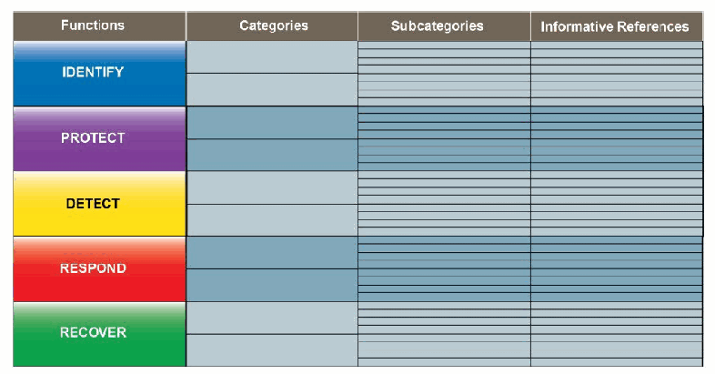

NIST IR 8441 日本語訳
英語タイトル : Cybersecurity Framework Profile for Hybrid Satellite Networks (HSN)日本語タイトル : ハイブリッド衛星ネットワーク（HSN）向けサイバーセキュリティフレームワークプロファイル
公開日 : 2023-09-25
原文URL : https://csrc.nist.gov/pubs/ir/8441/final
翻訳編集 : 自動生成（有志による非公式の日本語訳）, 原文取得日 : 2026-10-31, 訳文 : 492 / 493 ブロック
[要約] NIST IR 8441 は、NIST サイバーセキュリティフレームワークをハイブリッド衛星ネットワーク（HSN）に適用する報告書です。HSN は、衛星システムを構成する、独立して所有・運用される端末、アンテナ、衛星、ペイロードなどの構成要素の集合体であり、構成要素ごとに保証の水準が異なる場合があります。HSN は政府のシステムや重要インフラと相互に作用する場合があり、HSN が機能を提供し続けられるようにしつつ、個々の構成要素のセキュリティ態勢を評価するための枠組みが必要だとしています。本報告書は、HSN の参加者間のインタフェースに重点を置いています。
NIST Interagency Report
NIST 機関間報告書
NIST IR 8441
NIST IR 8441
Cybersecurity Framework Profile for Hybrid Satellite Networks (HSN)
ハイブリッド衛星ネットワーク（HSN）向けサイバーセキュリティフレームワークプロファイル
James McCarthy Dan Mamula Joseph Brule Karri Meldorf Rory Jennings John Wiltberger Chris Thorpe John Dombrowski O’Ryan Lattin Sam Sepassi
James McCarthy Dan Mamula Joseph Brule Karri Meldorf Rory Jennings John Wiltberger Chris Thorpe John Dombrowski O’Ryan Lattin Sam Sepassi
This publication is available free of charge from: https://doi.org/10.6028/NIST.IR.8441
本刊行物は次の場所から無料で入手できます: https://doi.org/10.6028/NIST.IR.8441
NIST Interagency Report
NIST 機関間報告書
NIST IR 8441
NIST IR 8441
Cybersecurity Framework Profile for Hybrid Satellite Networks (HSN)
ハイブリッド衛星ネットワーク（HSN）向けサイバーセキュリティフレームワークプロファイル
James McCarthy* National Cybersecurity Center of Excellence National Institute of Standards and Technology
James McCarthy* 国立サイバーセキュリティ卓越センター（National Cybersecurity Center of Excellence） 国立標準技術研究所（National Institute of Standards and Technology）
Dan Mamula Joseph Brule Karri Meldorf Rory Jennings John Wiltberger Chris Thorpe John Dombrowski O’Ryan Lattin Sam Sepassi The MITRE Corporation
Dan Mamula Joseph Brule Karri Meldorf Rory Jennings John Wiltberger Chris Thorpe John Dombrowski O’Ryan Lattin Sam Sepassi The MITRE Corporation
*Former NIST employee; all work for this publication was done while at NIST.
*NIST の元職員。本刊行物に関する作業はすべて NIST 在職中に行われました。
This publication is available free of charge from: https://doi.org/10.6028/NIST.IR.8441
本刊行物は次の場所から無料で入手できます: https://doi.org/10.6028/NIST.IR.8441
September 2023
2023 年 9 月
［米国商務省の紋章。公的な標章のため、この非公式サイトには掲載していません。原本 PDF を参照してください。］
U.S. Department of Commerce Gina M. Raimondo, Secretary
米国商務省 Gina M. Raimondo 長官
National Institute of Standards and Technology
National Institute of Standards and Technology（国立標準技術研究所）
Laurie E. Locascio, NIST Director and Under Secretary of Commerce for Standards and Technology
Laurie E. Locascio、NIST 所長兼商務次官（標準・技術担当）
Certain commercial equipment, instruments, software, or materials, commercial or non-commercial, are identified in this paper in order to specify the experimental procedure adequately. Such identification does not imply recommendation or endorsement of any product or service by NIST, nor does it imply that the materials or equipment identified are necessarily the best available for the purpose.
本稿では、実験手順を適切に示すため、商用か非商用かを問わず、特定の機器、計器、ソフトウェア、材料を挙げています。このように挙げることは、NIST がいかなる製品やサービスも推奨または保証することを意味せず、また、挙げられた材料や機器がその目的に対して必ずしも最良であることを意味するものでもありません。
There may be references in this publication to other publications currently under development by NIST in accordance with its assigned statutory responsibilities. The information in this publication, including concepts and methodologies, may be used by federal agencies even before the completion of such companion publications. Thus, until each publication is completed, current requirements, guidelines, and procedures, where they exist, remain operative. For planning and transition purposes, federal agencies may wish to closely follow the development of these new publications by NIST.
本刊行物には、NIST が法定の責務に従って現在策定中のほかの刊行物への言及が含まれる場合があります。概念や方法論を含む本刊行物の情報は、そうした関連刊行物の完成前であっても、連邦政府機関が利用してもよいです。したがって、各刊行物が完成するまでは、現行の要件、ガイドライン、手順が存在する場合、それらは引き続き有効です。計画および移行のため、連邦機関は、NIST によるこれらの新しい刊行物の策定状況を注意深く追うことを検討してもよいです。
Organizations are encouraged to review all draft publications during public comment periods and provide feedback to NIST. Many NIST cybersecurity publications, other than the ones noted above, are available at https://csrc.nist.gov/publications.
組織には、すべてのドラフト刊行物についてパブリックコメント期間中に内容を確認し、NIST にフィードバックを寄せることが推奨されています。上記以外にも、NIST の多くのサイバーセキュリティ刊行物が https://csrc.nist.gov/publications で入手できます。
NIST Technical Series Policies
Copyright, Use, and Licensing Statements
NIST Technical Series Publication Identifier Syntax
NIST 技術シリーズの方針
著作権、使用、ライセンスに関する声明
NIST 技術シリーズ刊行物識別子の構文
Publication History
Approved by the NIST Editorial Review Board on 2023-09-14
刊行の経緯
2023-09-14 に NIST 編集審査委員会により承認
How to Cite this NIST Technical Series Publication:
McCarthy J, Mamula D, Brule J, Meldorf K, Jennings R, Wiltberger J, Thorpe C, Dombrowski J, Lattin O, Sepassi S (2023) Cybersecurity Framework Profile for Hybrid Satellite Networks (HSN). (National Institute of Standards and Technology, Gaithersburg, MD), NIST Interagency or Internal Report (IR) NIST IR 8441. https://doi.org/10.6028/NIST.IR.8441
本 NIST 技術シリーズ刊行物の引用方法:
McCarthy J, Mamula D, Brule J, Meldorf K, Jennings R, Wiltberger J, Thorpe C, Dombrowski J, Lattin O, Sepassi S (2023) Cybersecurity Framework Profile for Hybrid Satellite Networks (HSN). (National Institute of Standards and Technology, Gaithersburg, MD), NIST Interagency or Internal Report (IR) NIST IR 8441. https://doi.org/10.6028/NIST.IR.8441
Author ORCID iDs
James McCarthy: 0000-0002-5559-733X
Dan Mamula: 0000-0003-4247-1735
Karri Meldorf: 0000-0003-3617-3846
Joseph Brule: 0000-0002-7987-6050
O’Ryan Laffin: 0000-0003-4255-280X
Sam Sepassi: 0009-0009-0502-0792
Chris Thorpe: 0000-0001-6183-2300
Rory Jennings: 0000-0001-5860-5094
John Dombrowski: 0000-0002-9408-1838
John Wiltberger: 0000-0002-6412-8105
著者の ORCID iD
James McCarthy: 0000-0002-5559-733X
Dan Mamula: 0000-0003-4247-1735
Karri Meldorf: 0000-0003-3617-3846
Joseph Brule: 0000-0002-7987-6050
O’Ryan Laffin: 0000-0003-4255-280X
Sam Sepassi: 0009-0009-0502-0792
Chris Thorpe: 0000-0001-6183-2300
Rory Jennings: 0000-0001-5860-5094
John Dombrowski: 0000-0002-9408-1838
John Wiltberger: 0000-0002-6412-8105
Contact Information
hsn_nccoe@nist.gov
連絡先
hsn_nccoe@nist.gov
National Institute of Standards and Technology
Attn: Computer Security Division, Information Technology Laboratory
100 Bureau Drive (Mail Stop 2000) Gaithersburg, MD 20899-2000
国立標準技術研究所
宛先: Computer Security Division, Information Technology Laboratory
100 Bureau Drive (Mail Stop 2000) Gaithersburg, MD 20899-2000
All comments are subject to release under the Freedom of Information Act (FOIA).
寄せられたコメントはすべて、情報自由法（FOIA）に基づく公開の対象となります。
Abstract
概要
The space sector is transitioning towards Hybrid Satellite Networks (HSN) which is an aggregation of independently owned and operated terminals, antennas, satellites, payloads, or other components that comprise a satellite system. The elements of an HSN may have varying levels of assurance.
宇宙分野は、ハイブリッド衛星ネットワーク（HSN）へと移行しつつあります。HSN とは、衛星システムを構成する、独立して所有・運用される端末、アンテナ、衛星、ペイロード、その他の構成要素の集合体です。HSN の要素は、保証の水準がそれぞれ異なる場合があります。
HSNs may interact with government systems and critical infrastructure (as defined by the Department of Homeland Security). A framework is required to assess the security posture of the individual components while still enabling the HSN to provide its function. This report applies the NIST Cybersecurity Framework to HSNs with an emphasis on the interfaces between the participants of the HSN.
HSN は、政府のシステムや（国土安全保障省が定義する）重要インフラと相互に作用する場合があります。HSN が機能を提供し続けられるようにしつつ、個々の構成要素のセキュリティ態勢を評価するための枠組みが必要です。本報告書は、HSN の参加者間のインタフェースに重点を置いて、NIST サイバーセキュリティフレームワークを HSN に適用します。
In collaboration with subject matter experts including satellite builders, consultants, acquisition authorities, operators (commercial and government), academia, and other interested parties, the National Institute of Standards and Technology (NIST) has developed the HSN Cybersecurity Framework CSF Profile (HSN Profile) to guide space stakeholders. The resulting profile provides a starting point for stakeholders who are assessing the cybersecurity posture of their HSN.
国立標準技術研究所（NIST）は、衛星の製造者、コンサルタント、調達機関、（商業および政府の）運用者、学術界、その他の関心を持つ関係者を含む専門家と協力して、宇宙分野の関係者を導くための HSN サイバーセキュリティフレームワーク CSF プロファイル（HSN プロファイル）を作成しました。このプロファイルは、HSN のサイバーセキュリティ態勢を評価する関係者にとっての出発点となります。
Keywords
キーワード
Cybersecurity Framework; Hybrid satellite networks; HSN; hosted payload; payload; payload control center; PCC; shared services; virtual payload command center.
サイバーセキュリティフレームワーク; ハイブリッド衛星ネットワーク; HSN; ホステッドペイロード; ペイロード; ペイロード制御センター; PCC; 共有サービス; 仮想ペイロード指令センター。
Reports on Computer Systems Technology
コンピュータシステム技術に関する報告書
The Information Technology Laboratory (ITL) at the National Institute of Standards and Technology (NIST) promotes the U.S. economy and public welfare by providing technical leadership for the Nation’s measurement and standards infrastructure. ITL develops tests, test methods, reference data, proof of concept implementations, and technical analyses to advance the development and productive use of information technology. ITL’s responsibilities include the development of management, administrative, technical, and physical standards and guidelines for the cost-effective security and privacy of other than national security-related information in federal information systems.
国立標準技術研究所（NIST）の情報技術ラボラトリー（ITL）は、国の測定・標準インフラに対する技術的リーダーシップを提供することで、米国の経済と公共の福祉を促進しています。ITL は、情報技術の発展と生産的な利用を進めるため、テスト、テスト方法、参照データ、概念実証の実装、技術的分析を開発しています。ITL の責務には、連邦情報システムにおける国家安全保障関連以外の情報について、そのセキュリティとプライバシーを費用対効果高く確保するための、管理上、事務上、技術上、物理上の標準およびガイドラインの策定が含まれます。
Patent Disclosure Notice
特許開示に関する通知
NOTICE: ITL has requested that holders of patent claims whose use may be required for compliance with the guidance or requirements of this publication disclose such patent claims to ITL. However, holders of patents are not obligated to respond to ITL calls for patents and ITL has not undertaken a patent search in order to identify which, if any, patents may apply to this publication.
通知: ITL は、本刊行物のガイダンスまたは要件への準拠に使用が必要となる可能性のある特許クレームの保有者に対し、当該特許クレームを ITL に開示するよう求めています。ただし、特許の保有者には ITL の特許募集に応じる義務はなく、ITL は、本刊行物に適用される特許があるかどうか、あるとすればどれかを特定するための特許調査を行っていません。
As of the date of publication and following call(s) for the identification of patent claims whose use may be required for compliance with the guidance or requirements of this publication, no such patent claims have been identified to ITL.
刊行日の時点で、本刊行物のガイダンスまたは要件への準拠に使用が必要となる可能性のある特許クレームの特定を求めた後も、そのような特許クレームは ITL に対して特定されていません。
No representation is made or implied by ITL that licenses are not required to avoid patent infringement in the use of this publication.
本刊行物の使用において特許侵害を避けるためにライセンスが不要であるとの表明を、ITL が行ったり示唆したりするものではありません。
Table of Contents
目次
List of Tables
表の一覧
List of Figures
図の一覧
Acknowledgments
謝辞
The authors wish to thank all individuals, organizations, and enterprises that contributed to the creation of this document. This includes:
著者は、本書の作成に貢献したすべての個人、組織、企業に感謝します。貢献者は次のとおりです。
•Dr. Darrell Eilts, SaiTech, Inc.
•Dr. Darrell Eilts, SaiTech, Inc.
•Jackie Gurzi, The Boeing Corporation
•Jackie Gurzi, The Boeing Corporation
•Michael Hankins, Lockheed Martin
•Michael Hankins, Lockheed Martin
•George Hashey Jr., Rogue Space
•George Hashey Jr., Rogue Space
•Ralph Heacock, DeepTerrain, Inc.
•Ralph Heacock, DeepTerrain, Inc.
•Richard D. Newbold Space Exploration Technologies Corporation
•Richard D. Newbold, Space Exploration Technologies Corporation
•Michael Roza, individual contributor
•Michael Roza, individual contributor
•Aaron Temin, Space Exploration Technologies Corporation
•Aaron Temin, Space Exploration Technologies Corporation
•Shelly Waite-Bey, Waite SLTS, LLC
•Shelly Waite-Bey, Waite SLTS, LLC
•Chris White, General Atomics Electromagnetic Systems Group
•Chris White, General Atomics Electromagnetic Systems Group
•Drew Wilson, Lockheed Martin
•Drew Wilson, Lockheed Martin
•Cara Wolf, Ammolite Analytx.
•Cara Wolf, Ammolite Analytx.
1. Introduction
1. はじめに
The space sector is transitioning away from traditional vertically integrated entities and towards an aggregation of independently owned and operated segments.
宇宙分野は、従来の垂直統合型の主体から、独立して所有・運用されるセグメントの集合体へと移行しつつあります。
A Hybrid Satellite Network (HSN), uses independently owned and operated terrestrial and space components to realize a space system that may provide extended global services across diverse missions and connecting points. The HSN architecture typically consists of a combination of independently owned terminals, antennas, satellites, payloads, or other components that communicate across disparate networks. An HSN may interact with government systems and critical infrastructure (as defined by the Department of Homeland Security) to provide services such as satellite-based communications, position, navigation, and timing (PNT), remote sensing, weather monitoring, and imaging. The components within an HSN are likely to have varying levels of trust among different components, requiring frameworks for establishing confidentiality and integrity of individual components while still enabling availability of required shared services.
ハイブリッド衛星ネットワーク（HSN）は、独立して所有・運用される地上および宇宙の構成要素を用いて、多様なミッションや接続地点にわたって広域サービスを提供できる宇宙システムを実現します。HSN アーキテクチャは通常、独立して所有・運用される端末、アンテナ、衛星、ペイロード、その他の構成要素を組み合わせたもので、それらは異なるネットワーク間で通信します。HSN は、衛星通信、測位・航法・時刻同期（PNT）、リモートセンシング、気象監視、画像取得などのサービスを提供するために、政府のシステムや（国土安全保障省が定義する）重要インフラと相互に作用する場合があります。HSN 内の構成要素は、構成要素ごとに信頼の水準が異なる可能性が高く、必要な共有サービスの可用性を確保しつつ、個々の構成要素の機密性と完全性を確立する枠組みが求められます。
The flexibility of HSNs enables rapid integration of new capabilities and technologies. A properly architected HSN can do so in a secure, scalable, responsive, cyber resilient and information-centric manner.
HSN の柔軟性により、新しい能力や技術を迅速に統合できます。適切に設計された HSN であれば、安全で、拡張性があり、応答性が高く、サイバーレジリエンスを備えた、情報中心の方法でそれを行えます。
HSNs present opportunities for organizations to leverage existing space-based capabilities and platforms through means such as hosted payloads, ground infrastructure as a service, virtualized satellite operation centers, etc. There is a need to verify that these systems are secure, and that the integration of components is done in a manner acceptable to the participating organizations. In collaboration with subject matter experts including satellite builders, consultants, acquisition authorities, operators (commercial and government), academia, and other interested parties, the National Institute of Standards and Technology (NIST) has developed the HSN Cybersecurity Framework CSF Profile (HSN Profile).
HSN は、ホステッドペイロード、サービスとしての地上インフラ、仮想化された衛星運用センターなどの手段により、組織が既存の宇宙ベースの能力やプラットフォームを活用する機会をもたらします。これらのシステムが安全であること、また構成要素の統合が参加組織にとって受け入れ可能な方法で行われていることを検証する必要があります。国立標準技術研究所（NIST）は、衛星の製造者、コンサルタント、調達機関、（商業および政府の）運用者、学術界、その他の関心を持つ関係者を含む専門家と協力して、HSN サイバーセキュリティフレームワーク CSF プロファイル（HSN プロファイル）を作成しました。
The HSN Profile is voluntary and does not issue regulations, define mandatory practices, provide a checklist for compliance, nor does it carry statutory authority. It is intended to be a foundational set of guidelines.
HSN プロファイルは任意のものであり、規制を発するものでも、必須の実施事項を定めるものでも、準拠のためのチェックリストを提供するものでもなく、法的権限も持ちません。基礎となるガイドライン群となることを意図しています。
1.1. Purpose and Objectives
1.1. 目的と目標
The HSN profile provides practical guidance for organizations and stakeholders engaged in the design, acquisition, and operation of satellite buses or payloads in a manner consistent with the organization’s risk tolerance.
HSN プロファイルは、組織のリスク許容度に沿った方法で、衛星バスやペイロードの設計、調達、運用に携わる組織と関係者に実践的なガイダンスを提供します。
The HSN profile is suitable for applications that involve multiple stakeholders contributing to imagery, sensing, broadcast, communications, or other space-based architectures. Use of the HSN profile will help organizations:
HSN プロファイルは、画像取得、センシング、放送、通信、その他の宇宙ベースのアーキテクチャに複数の関係者が貢献するアプリケーションに適しています。HSN プロファイルを使用すると、組織は次のことを行いやすくなります。
•Identify systems, assets, data, and risks that pertain to HSN.
•HSN に関係するシステム、資産、データ、リスクを識別します。
•Protect HSN services by performing self-assessments and adhering to cybersecurity principles.
•自己評価を実施し、サイバーセキュリティの原則を遵守することで、HSN サービスを防御します。
•Detect cybersecurity-related disturbances or corruption of HSN services and data.
•HSN サービスやデータに対する、サイバーセキュリティに関連する妨害や破損を検知します。
•Respond to HSN service or data anomalies in a timely, effective, and resilient manner.
•HSN のサービスやデータの異常に、適時かつ効果的で、レジリエンスのある方法で対応します。
•Recover the HSN to proper working order after a cybersecurity incident.
•サイバーセキュリティインシデントの後に、HSN を適切な稼働状態に復旧します。
1.2. Scope
1.2. 適用範囲
The HSN profile describes the salient cybersecurity functions that are part of the HSN and may include examples to highlight cybersecurity dependencies. Different business objectives or mission requirements will require unique relationships between components of the HSN. These requirements will dictate how data exchanges between system components, ranging from routing data to rendering and analyzing data, are procured between components.
HSN プロファイルは、HSN の一部である主要なサイバーセキュリティ機能を記述しており、サイバーセキュリティ上の依存関係を示す例を含む場合があります。ビジネス目標やミッション要件が異なれば、HSN の構成要素間に必要となる関係も異なります。こうした要件によって、ルーティングデータからデータのレンダリングや分析に至るまで、システム構成要素間のデータ交換をどのように調達するかが決まります。
![Diagram of a simple HSN architecture. A green box labeled Satellite | A contains three payloads at the top: Payload | A (light green), Payload | B (gray-blue), and Payload | C (orange); a satellite bus runs below them, and a Satellite Antenna sits under the bus. A solid arrow runs from the Satellite Antenna up to Payload A; a dashed arrow runs up to Payload B. Below the satellite, the Satellite Antenna connects with a solid arrow to Mission Operation Center | A, and a dashed line runs from the antenna to Payload Control Center | B. Payload Control Center | C is linked by a dotted two-headed line directly to Payload C on the satellite. At the bottom, User / Operator connects to Mission Operation Center A along solid path A, to Payload Control Center B along dashed path B, and to Payload Control Center C along dotted path C.](assets/ir-8441/p0010-figure-01.png)
単純な HSN アーキテクチャの図です。Satellite | A（衛星 A）と書かれた緑の枠の上部に Payload | A（薄緑）、Payload | B（灰青）、Payload | C（橙）の 3 つのペイロードがあり、その下に satellite bus（衛星バス）、さらにその下に Satellite Antenna（衛星アンテナ）があります。衛星アンテナから Payload A へは実線の矢印、Payload B へは破線の矢印が伸びています。衛星の下では、衛星アンテナが実線の矢印で Mission Operation Center | A（ミッション運用センター A）につながり、アンテナから Payload Control Center | B（ペイロード管制センター B）へ破線が伸びています。Payload Control Center | C は点線の双方向の線で衛星上の Payload C に直接つながっています。最下部の User / Operator（利用者／運用者）は、実線の経路 A でミッション運用センター A に、破線の経路 B でペイロード管制センター B に、点線の経路 C でペイロード管制センター C につながっています。
Fig. 1. Example of a simple HSN Architecture.
図 1. 単純な HSN アーキテクチャの例。
NOTE: The solid line in Fig. 1 indicates a normal path while the dashed lines depict communication paths that may be present in an HSN.
注: 図 1 の実線は通常の経路を示し、破線は HSN に存在する可能性のある通信経路を示します。
A simple satellite architecture is depicted in Fig. 1. Path A shows a typical satellite communications path (non-HSN). In a hybrid environment, the satellite bus and payloads B and C are independently owned and operated. The host system (A) provides different levels of services to the hosted payloads (B and C). Figure 1 shows payload C relies on the host satellite for power and satellite operations while payload B relies on the host system for communications in addition to power and satellite operations.
単純な衛星アーキテクチャを図 1 に示します。経路 A は、典型的な（HSN ではない）衛星通信経路を示します。ハイブリッド環境では、衛星バスとペイロード B および C は、独立して所有・運用されます。ホストシステム（A）は、ホステッドペイロード（B および C）に対して、異なる水準のサービスを提供します。図 1 では、ペイロード C は電力と衛星運用をホスト衛星に依存し、ペイロード B は電力と衛星運用に加えて通信もホストシステムに依存しています。
![Diagram of an HSN with virtualized components. A tan box labeled Satellite contains Payload | A (blue) and three other unlabeled payload icons along the top, a satellite bus, and a Satellite Antenna. A line runs from the Satellite Antenna through the bus to Payload A, and down to a Global Antenna Service Provider box on the ground. An arrow runs from the Global Antenna Service Provider to a Virtual Payload Control Center, which sits inside a Cloud Service Provider box. A two-headed arrow connects the Virtual Payload Control Center with User / Operator | A (blue).](assets/ir-8441/p0011-figure-01.png)
仮想化されたコンポーネントを含む HSN の図です。Satellite（衛星）と書かれた黄褐色の枠の上部に Payload | A（青）と、ラベルのない 3 つのペイロードのアイコンが並び、その下に satellite bus（衛星バス）と Satellite Antenna（衛星アンテナ）があります。衛星アンテナからバスを経て Payload A へ線が伸び、また地上の Global Antenna Service Provider（グローバルアンテナサービス提供者）へ線が下りています。グローバルアンテナサービス提供者から矢印が Virtual Payload Control Center（仮想ペイロード管制センター）へ向かい、これは Cloud Service Provider（クラウドサービス提供者）の枠の中にあります。仮想ペイロード管制センターと User / Operator | A（利用者／運用者 A、青）は双方向の矢印で結ばれています。
Fig. 2. Example of an HSN with virtualized components.
図 2. 仮想化された構成要素を持つ HSN の例。
The elements of an HSN may be independently owned, hosted, or virtualized by multiple organizations. While referring to Fig. 2, note that the operator may own the intellectual property that defines the virtualized payload control center (PCC) that is hosted on a third-party cloud service provider (CSP). The virtual PCC interfaces with a physical antenna field independent of the CSP, the operator, and the satellite antenna. All of this is transparent to the operators in organization A when they command, control, communicate or otherwise interact with payload A.
HSN の要素は、複数の組織によって独立して所有、ホスト、または仮想化される場合があります。図 2 を参照すると、運用者は、サードパーティのクラウドサービスプロバイダー（CSP）上でホストされる仮想ペイロード制御センター（PCC）を定義する知的財産を所有している場合があることがわかります。仮想 PCC は、CSP、運用者、衛星アンテナとは独立した物理アンテナフィールドとインタフェースします。組織 A の運用者がペイロード A にコマンドを送り、制御し、通信し、その他の形で相互に作用するとき、これらはすべて運用者から見えない（透過的な）ものになります。
![Diagram of a more complex HSN architecture with two satellites. The left satellite (Satellite A) carries Payload A (light green) and Payload B2 (gray-blue) on a satellite bus with a Satellite Antenna; the right satellite (also labeled Satellite A) carries Payload C (orange) and Payload B3 (gray-blue) with its own Satellite Antenna. A dashed line between the two antennas is labeled "B2 to B3 crosslink facilitated by A". From the left antenna, solid path A leads to Ground Facility A, and dashed path B leads to Ground Facility A as well; Ground Facility A has a dashed two-headed link to Virtual PCC B1 and a solid two-headed link to User / Operator A. Virtual PCC B1 has a dashed two-headed link labeled "direct downlink" to User / Operator B1. From the right antenna, a dotted path C leads to Uncrewed Platform C, and dotted and dashed lines lead down to Ground Facility D, labeled "communication from B1 to B4". Ground Facility D connects with dotted lines to User / Operator C and with dashed lines to User / Operator B4.](assets/ir-8441/p0012-figure-01.png)
2 機の衛星を含む、より複雑な HSN アーキテクチャの図です。左の衛星（Satellite A）は衛星バス上に Payload A（薄緑）と Payload B2（灰青）を載せ、Satellite Antenna（衛星アンテナ）を持ちます。右の衛星（これも Satellite A と表示）は Payload C（橙）と Payload B3（灰青）を載せ、別の衛星アンテナを持ちます。2 つのアンテナを結ぶ破線には「B2 to B3 crosslink facilitated by A」（A が仲介する B2 から B3 へのクロスリンク）と書かれています。左のアンテナからは実線の経路 A と破線の経路 B が Ground Facility A（地上施設 A）へ向かいます。地上施設 A は破線の双方向の線で Virtual PCC B1（仮想 PCC B1）と、実線の双方向の線で User / Operator A（利用者／運用者 A）とつながっています。仮想 PCC B1 は「direct downlink」（直接ダウンリンク）と書かれた破線の双方向の線で User / Operator B1 とつながっています。右のアンテナからは点線の経路 C が Uncrewed Platform C（無人プラットフォーム C）へ向かい、点線と破線が「communication from B1 to B4」（B1 から B4 への通信）と書かれて Ground Facility D（地上施設 D）へ下りています。地上施設 D は点線で User / Operator C と、破線で User / Operator B4 とつながっています。
Fig. 3. Example of more complex HSN architecture.
図 3. より複雑な HSN アーキテクチャの例。
HSN architectures may be complex and involve multiple stakeholders. As shown in Fig. 3, the physical and virtual architecture involves multiple independently owned satellites, uncrewed platforms, ground facilities and crosslinks supporting a range of independent HSNs. The organization that owns and operates the host (A) is operating two satellites that are supporting two independent HSNs (B and C). The operators associated with HSN B interface with a virtual payload command center that controls payloads on separate satellites. The crosslink and radio frequency (RF) interfaces are transparent to HSN B. The host organization may interface with other platforms such as uncrewed vehicles or independently owned antenna fields.
HSN アーキテクチャは複雑で、複数の関係者が関与する場合があります。図 3 に示すように、物理的・仮想的なアーキテクチャには、独立して所有される複数の衛星、無人プラットフォーム、地上施設、クロスリンクが含まれ、独立した複数の HSN を支えています。ホスト（A）を所有・運用する組織は、2 つの独立した HSN（B と C）を支える 2 基の衛星を運用しています。HSN B に関連する運用者は、別々の衛星上のペイロードを制御する仮想ペイロードコマンドセンターとインタフェースします。クロスリンクと無線周波数（RF）インタフェースは、HSN B からは見えません（透過的です）。ホスト組織は、無人機や独立して所有されるアンテナフィールドなどのほかのプラットフォームとインタフェースする場合があります。
The scope of the HSN profile focuses on physical and virtual interfaces such as:
HSN プロファイルの適用範囲は、次のような物理的・仮想的なインタフェースに焦点を当てています。
•Antenna fields
•アンテナフィールド
•Virtual Machine-based command formatter
•仮想マシンベースのコマンドフォーマッタ
•Software-defined elements hosted on a cloud
•クラウド上でホストされるソフトウェア定義の要素
•Bus
•バス
•Payloads
•ペイロード
•User terminals
•ユーザー端末
•Intermediate ground nodes
•中継地上ノード
•Intersatellite cross links for purposes such as linking to a payload hosted on another satellite, higher resolution, greater communication bandwidth, path redundancy, etc.
•別の衛星上でホストされるペイロードとの接続、高解像度化、通信帯域幅の拡大、経路の冗長化などを目的とする衛星間クロスリンク
This HSN profile is intended to:
この HSN プロファイルは、次のことを意図しています。
•Facilitate integration of HSN components thorough consideration of cybersecurity functions, categories, and subcategories.
•サイバーセキュリティの機能、カテゴリ、サブカテゴリを考慮することを通じて、HSN 構成要素の統合を促進します。
•Consistently assess and communicate the cybersecurity posture.
•サイバーセキュリティ態勢を一貫して評価し、伝達します。
•Provide a comprehensive framework to facilitate risk management decisions.
•リスクマネジメント上の意思決定を促進するための包括的な枠組みを提供します。
•Facilitate consistent assessments of cyber-risk.
•サイバーリスクの一貫した評価を促進します。
The HSN profile focuses on a subset of CSF subcategories that is directly applicable to the HSN and strategies that should be considered. The HSN profile allows each organization the flexibility to implement selected mitigation strategies based on their risk tolerance or accepted risk management strategy.
HSN プロファイルは、HSN に直接適用できる CSF サブカテゴリの部分集合と、検討すべき戦略に焦点を当てています。HSN プロファイルにより、各組織は、自らのリスク許容度または受け入れ済みのリスクマネジメント戦略に基づいて、選択した低減策を柔軟に実装できます。
The HSN profile focuses on the complex variety of interfaces, data flows, and interactions with third-party services or component providers involved in modern HSNs. Many of these systems require connections to external partners or entities that are not trusted. Interfacing with untrusted systems requires the individual systems to understand and bound the inherited risk and assure their confidentiality, integrity, and availability. The HSN profile addresses concerns unique to HSN, and the reader is referred to other CSF profiles (such as NISTIR 8401, NISTIR 8323 and others) to address concerns to space system segments or components that are beyond this profile’s scope.
HSN プロファイルは、現代の HSN に関わる、多様で複雑なインタフェース、データフロー、サードパーティのサービスや構成要素の提供者との相互作用に焦点を当てています。これらのシステムの多くは、信頼されていない外部のパートナーや主体との接続を必要とします。信頼されていないシステムとインタフェースするには、個々のシステムが、継承されるリスクを理解して境界を設け、機密性、完全性、可用性を保証する必要があります。HSN プロファイルは HSN 固有の懸念事項を扱います。本プロファイルの適用範囲を超える宇宙システムのセグメントや構成要素に関する懸念事項については、ほかの CSF プロファイル（NISTIR 8401、NISTIR 8323 など）を参照してください。
1.3. Audience
1.3. 想定読者
This document is intended for those involved in managing, developing, implementing, and monitoring the HSN cybersecurity including:
本書は、次を含め、HSN のサイバーセキュリティの管理、開発、実装、監視に携わる人々を対象としています。
•Procurement officials responsible for the acquisition of HSN services
•HSN サービスの調達を担当する調達担当者
•Public and private organizations that provide HSN services
•HSN サービスを提供する公的・民間の組織
•Managers responsible for the use of HSN services
•HSN サービスの利用を担当する管理者
•Risk managers, cybersecurity professionals, and others with a role in cybersecurity risk management for systems that provide or interface with HSN services
•HSN サービスを提供する、または HSN サービスとインタフェースするシステムについて、サイバーセキュリティリスクマネジメントに役割を持つリスクマネージャー、サイバーセキュリティの専門家、その他の人々
•Mission and business process owners responsible for achieving operational outcomes dependent on HSN services
•HSN サービスに依存する運用上の成果の達成に責任を持つ、ミッションおよびビジネスプロセスの責任者
•Researchers and analysts who study the unique cybersecurity needs of HSN services
•HSN サービス特有のサイバーセキュリティ上のニーズを研究する研究者およびアナリスト
•Cybersecurity architects who integrate cybersecurity into the product designs for space vehicle segments and ground segments.
•宇宙機セグメントや地上セグメントの製品設計にサイバーセキュリティを組み込むサイバーセキュリティアーキテクト
2. Intended Use
2. 想定される用途
This profile is part of an overall risk management strategy for satellites operating in hybrid environments. The profile provides actionable practical guidance to assess current posture and inform future decisions.
このプロファイルは、ハイブリッド環境で運用される衛星に対する全体的なリスクマネジメント戦略の一部です。このプロファイルは、現在の態勢を評価し、今後の意思決定に情報を提供するための、実行可能で実践的なガイダンスを提供します。
Decision makers are tasked with determining acceptable risk, and this CSF profile is a tool to help inform decision-makers concerning potential risks. This CSF profile provides an HSN-specific framework that facilitates assessments of the cybersecurity posture of the HSN and can be used as part of a larger security in-depth assessment for the space system. The CSF profile is intended to augment, not replace, the organization’s risk management procedures.
意思決定者には許容可能なリスクを決定する任務があり、この CSF プロファイルは、潜在的なリスクについて意思決定者に情報を提供する助けとなるツールです。この CSF プロファイルは、HSN のサイバーセキュリティ態勢の評価を促進する HSN 固有の枠組みを提供するもので、宇宙システム全体を対象とする、より広範な多層防御の評価の一部として使用できます。この CSF プロファイルは、組織のリスクマネジメント手順を補強することを意図しており、置き換えるものではありません。
NIST recognizes that the HSN profile will be applied to specific organizations with specific needs. To this end, a summary of considerations for customization is provided below.
NIST は、HSN プロファイルが、特定のニーズを持つ特定の組織に適用されることを認識しています。そのため、カスタマイズに関する検討事項の要約を以下に示します。
•Operational considerations
•運用上の検討事項
•What methods can be used to detect potential events of concern?
•懸念される潜在的なイベントを検知するために、どのような方法を使用できますか。
•What methods can be used to respond to those detected events?
•検知したイベントに対応するために、どのような方法を使用できますか。
•What methods can be employed for post-event recovery?
•イベント後の復旧に、どのような方法を採用できますか。
•Mission considerations
•ミッション上の検討事項
•What services are mission-critical?
•どのサービスがミッションクリティカルか。
•What systems and data/assets are vulnerable?
•どのシステムとデータ／資産が脆弱か。
•What recovery/fail-over strategies can be employed?
•どのような復旧／フェイルオーバー戦略を採用できますか。
•What measures are available to determine the effectiveness of security controls?
•セキュリティ対策の有効性を判断するために、どのような手段が利用できますか。
•Engineering Considerations
•エンジニアリング上の検討事項
•What are the capabilities of the system?
•システムにはどのような能力がありますか。
•What are the capabilities of potential adversaries to the system?
•システムに対する潜在的な敵対者には、どのような能力がありますか。
•Which system attributes are adjustable post-deployment, and which are immutable?
•どのシステム属性が展開後に調整可能で、どれが変更不能か。
•External considerations
•外部の検討事項
•What external systems and data are critical?
•どの外部システムとデータが重要か。
•What are the impacts of degraded or failed external services?
•外部サービスが劣化または失敗した場合、どのような影響がありますか。
3. Overview
3. 概要
This section contains an overview of risk management and the NIST CSF. A profile provides information on risk management and applies the NIST CSF to assist with specific security implications. The HSN profile will include informative references to existing standards, guidelines, and best practices.
本節では、リスクマネジメントと NIST CSF の概要を示します。プロファイルは、リスクマネジメントに関する情報を提供し、NIST CSF を適用して、特定のセキュリティ上の影響への対処を支援します。HSN プロファイルには、既存の標準、ガイドライン、ベストプラクティスへの参考情報が含まれます。
3.1. Risk Management Overview
3.1. リスクマネジメントの概要
Risk management is the ongoing process of identifying, assessing, and managing the residual risk related to an organization’s objectives. To manage risk, organizations should understand the likelihood of an event and its potential impacts. With this information, the acceptable level of risk to the data and services can be determined.
リスクマネジメントとは、組織の目標に関連する残存リスクを識別、評価、管理する継続的なプロセスです。リスクを管理するために、組織はイベントの発生可能性とその潜在的な影響を理解すべきです。この情報があれば、データとサービスに対する許容可能なリスク水準を決定できます。
As an organization analyzes its objectives as they relate to reliance on or use of HSNs, there are a series of guiding questions that inform the process to include:
組織が、HSN への依存や利用に関連する自らの目標を分析する際には、次のような、プロセスに情報を与える一連の指針となる問いがあります。
•What are the threats to achieving mission objectives?
•ミッション目標の達成に対する脅威は何か。
•What damages can result when those mission objectives are disrupted?
•それらのミッション目標が阻害された場合、どのような損害が生じ得ますか。
•What are the most important assets for a given mission objective?
•特定のミッション目標にとって最も重要な資産は何ですか。
•Where does physical infrastructure affect cybersecurity infrastructure and vice versa?
•物理インフラがサイバーセキュリティのインフラに影響を与える（またはその逆となる）のはどこですか。
An organization should also be aware of statutory and policy requirements that may have a security or safety dimension. These can be affected by cybersecurity risks or have downstream effects.
組織は、セキュリティや安全の側面を持つ可能性のある法令上および方針上の要件も認識しておくべきです。これらの要件は、サイバーセキュリティリスクの影響を受けたり、後続の影響を及ぼしたりする場合があります。
The profile supports, and is informed by, cybersecurity risk management processes. Using the profile, organizations can make more informed decisions to select and prioritize cybersecurity activities and expenditures that help identify systems dependent on HSN, identify appropriate HSN sources, detect disturbances and manipulation of HSN services, manage the risk to these systems, and bolster resilience. The HSN profile provides a starting point from which organizations can customize—based on need and risk tolerance—to develop the most appropriate processes to manage cybersecurity posture of their HSN.
このプロファイルは、サイバーセキュリティリスクマネジメントのプロセスを支援し、またそのプロセスから情報を得ています。プロファイルを使用することで、組織は、HSN に依存するシステムの識別、適切な HSN の提供元の識別、HSN サービスに対する妨害や操作の検知、これらのシステムに対するリスクの管理、レジリエンスの強化に役立つサイバーセキュリティ活動と支出の選択や優先順位付けを、より十分な情報に基づいて行えます。HSN プロファイルは、組織がニーズとリスク許容度に基づいてカスタマイズし、自らの HSN のサイバーセキュリティ態勢を管理するための最も適切なプロセスを開発するための出発点となります。
Organizations can use a profile in conjunction with existing cybersecurity risk management processes. Examples of cybersecurity risk management processes include International Organization for Standardization (ISO) 31000:2018, ISO/International Electrotechnical Commission (IEC) 27005:2018, and NIST Special Publication 800-39. A full list of helpful resources will be listed in an Annex of the HSN profile.
組織は、プロファイルを既存のサイバーセキュリティリスクマネジメントのプロセスと組み合わせて使用できます。サイバーセキュリティリスクマネジメントのプロセスの例には、国際標準化機構（ISO）31000:2018、ISO／国際電気標準会議（IEC）27005:2018、NIST Special Publication 800-39 があります。役立つ資料の一覧は、HSN プロファイルの附属書に記載される予定です。
3.2. Cybersecurity Framework Overview
3.2. サイバーセキュリティフレームワークの概要
Created through collaboration between industry and government, the Cybersecurity Framework [NIST-CSF] provides prioritized, flexible, risk-based, and voluntary guidance based on existing standards, guidelines, and practices to help organizations better understand, manage, and communicate cybersecurity risks.
産業界と政府の協力によって作成されたサイバーセキュリティフレームワーク [NIST-CSF] は、既存の標準、ガイドライン、実践に基づく、優先順位付けされた、柔軟でリスクベースの任意のガイダンスを提供し、組織がサイバーセキュリティリスクをよりよく理解し、管理し、伝達することを助けます。
The Cybersecurity Framework consists of three main components:
サイバーセキュリティフレームワークは、3 つの主要な構成要素から成ります。
1.The Framework Core provides a catalog of desired cybersecurity activities and outcomes using common language. The Core guides organizations in managing and reducing their cybersecurity risks in a way that complements their existing cybersecurity and risk management processes.
1.フレームワークコアは、共通の言語を用いて、望ましいサイバーセキュリティ活動と成果のカタログを提供します。コアは、組織が既存のサイバーセキュリティおよびリスクマネジメントのプロセスを補完する形で、サイバーセキュリティリスクを管理し低減するための指針となります。
2.The Framework Implementation Tiers provide context for how an organization views cybersecurity risk management. The Tiers help organizations understand whether they have a functioning and repeatable cybersecurity risk management process and the extent to which cybersecurity risk management is integrated with broader organization risk management decisions.
2.フレームワークインプリメンテーションティアは、組織がサイバーセキュリティリスクマネジメントをどのように捉えているかの文脈を提供します。ティアは、組織が、機能する再現可能なサイバーセキュリティリスクマネジメントのプロセスを持っているかどうか、また、サイバーセキュリティリスクマネジメントが組織全体のリスクマネジメントの意思決定にどの程度統合されているかを理解する助けとなります。
3.The Framework Profiles are customized to the outcomes of the Core to align with an organization’s requirements. Profiles are primarily used to identify and prioritize opportunities for improving organizational cybersecurity.
3.フレームワークプロファイルは、組織の要件に合わせて、コアの成果に応じてカスタマイズされます。プロファイルは主に、組織のサイバーセキュリティを改善する機会を識別し、優先順位付けするために使用されます。
The Framework Core presents standards, guidelines, and practices within five concurrent and continuous Functions, which are described below:
フレームワークコアは、同時並行かつ継続的な 5 つの機能の下に、標準、ガイドライン、実践を示しています。各機能は次のとおりです。
1.Identify – Develop organizational understanding to manage cybersecurity risk to systems, assets, data, and capabilities. The activities in the Identify Functions are foundational to the effective use of the Cybersecurity Framework, enabling an organization to focus and prioritize its efforts consistent with its risk management strategy and business needs.
1.識別（Identify） – システム、資産、データ、能力に対するサイバーセキュリティリスクを管理するための、組織としての理解を深めます。識別機能の活動は、サイバーセキュリティフレームワークを効果的に使用するための基礎であり、組織がリスクマネジメント戦略とビジネス上のニーズに沿って取り組みを絞り込み、優先順位付けできるようにします。
2.Protect – Develop and implement the appropriate safeguards to ensure the delivery of critical infrastructure services. The activities in the Protect Function support the ability to limit or contain the impact of a potential cybersecurity event.
2.防御（Protect） – 重要インフラのサービス提供を確実にするための適切な保護措置を策定し、実装します。防御機能の活動は、潜在的なサイバーセキュリティイベントの影響を限定または封じ込める能力を支えます。
3.Detect – Develop and implement the appropriate activities to identify the occurrence of a cybersecurity event. The activities in the Detect Function enable the timely discovery of cybersecurity events.
3.検知（Detect） – サイバーセキュリティイベントの発生を識別するための適切な活動を策定し、実装します。検知機能の活動により、サイバーセキュリティイベントを適時に発見できます。
4.Respond – Develop and implement the appropriate activities to react to a detected cybersecurity incident. The activities in the Respond Function support the ability to contain the impact of a potential cybersecurity incident.
4.対応（Respond） – 検知したサイバーセキュリティインシデントに反応するための適切な活動を策定し、実装します。対応機能の活動は、潜在的なサイバーセキュリティインシデントの影響を封じ込める能力を支えます。
5.Recover – Develop and implement appropriate activities to maintain resilience and to restore capabilities or services that were impaired due to a cybersecurity event. The activities in the Recover Function support timely recovery to normal operations, reduce the impact or recurrence of a cybersecurity event, and provide insight and guidance for overall improvement.
5.復旧（Recover） – レジリエンスを維持し、サイバーセキュリティイベントによって損なわれた能力やサービスを回復するための適切な活動を策定し、実装します。復旧機能の活動は、通常運用への適時の復旧を支え、サイバーセキュリティイベントの影響や再発を低減し、全体的な改善のための知見とガイダンスを提供します。
When considered together, these Functions provide a high-level, strategic view of the life cycle of an organization’s cybersecurity risk management.
これらの機能をあわせて考えると、組織のサイバーセキュリティリスクマネジメントのライフサイクルを、高い視点から戦略的に捉えることができます。
The Framework Core then identifies underlying Categories and Subcategories for each Function. The 108 Subcategories are discrete cybersecurity outcomes that are organized into 23 Categories, such as “Asset Management” and “Protective Technology”. Fig. 4 depicts the basic structure of the Framework Core.
フレームワークコアは次に、各機能の下位にあるカテゴリとサブカテゴリを示します。108 のサブカテゴリは個別のサイバーセキュリティ成果であり、「資産管理」や「保護技術」などの 23 のカテゴリに整理されています。図 4 は、フレームワークコアの基本構造を示しています。

4 つの列見出し Functions（機能）、Categories（カテゴリ）、Subcategories（サブカテゴリ）、Informative References（参考情報）を持つ格子の図です。Functions の列は IDENTIFY（青）、PROTECT（紫）、DETECT（黄）、RESPOND（赤）、RECOVER（緑）の 5 色の行からなります。各機能の行は 2 つのカテゴリのセルに分かれ、各カテゴリはさらに複数のサブカテゴリの行と、それに対応する参考情報の行に分かれています。セルの中は空欄です。
Fig. 4. Structure of the Framework Core
図 4. フレームワークコアの構造
The Cybersecurity Framework is outcome-based and focuses on the cybersecurity functions rather than the components. A Cybersecurity Framework Profile is not intended to provide specific implementation guidance. However, a Profile will supply Informative References to existing standards, guidelines, and practices that provide practical guidance to help an organization achieve the desired outcome of each Subcategory. An example of two Subcategories and their Informative References within the Asset Management Category is shown in Fig. 5.
サイバーセキュリティフレームワークは成果ベースであり、構成要素ではなくサイバーセキュリティ機能に焦点を当てています。サイバーセキュリティフレームワークのプロファイルは、具体的な実装ガイダンスを提供することを意図していません。ただし、プロファイルは、各サブカテゴリの望ましい成果を組織が達成するのに役立つ実践的なガイダンスを提供する、既存の標準、ガイドライン、実践への参考情報を示します。資産管理カテゴリにある 2 つのサブカテゴリとその参考情報の例を、図 5 に示します。
![Excerpt of a Framework Core table with columns Function, Category, Subcategory, Informative References. Function: IDENTIFY (ID). Category: Asset Management (ID.AM): The data, personnel, devices, systems, and facilities that enable the organization to achieve business purposes are identified and managed consistent with their relative importance to organizational objectives and the organization’s risk strategy. Subcategory ID.AM-1: Physical devices and systems within the organization are inventoried — Informative References: CIS CSC 1; COBIT 5 BAI09.01, BAI09.02; ISA 62443-2-1:2009 4.2.3.4; ISA 62443-3-3:2013 SR 7.8; ISO/IEC 27001:2013 A.8.1.1, A.8.1.2; NIST SP 800-53 Rev. 4 CM-8, PM-5. Subcategory ID.AM-2: Software platforms and applications within the organization are inventoried — Informative References: CIS CSC 2; COBIT 5 BAI09.01, BAI09.02, BAI09.05; ISA 62443-2-1:2009 4.2.3.4; ISA 62443-3-3:2013 SR 7.8; ISO/IEC 27001:2013 A.8.1.1, A.8.1.2, A.12.5.1; NIST SP 800-53 Rev. 4 CM-8, PM-5.](assets/ir-8441/p0017-figure-01.png)
Framework Core の表の抜粋で、列は Function（機能）、Category（カテゴリ）、Subcategory（サブカテゴリ）、Informative References（参考情報）です。機能は IDENTIFY (ID)（識別）。カテゴリは Asset Management (ID.AM)（資産管理）で、「組織が事業目的を達成できるようにするデータ、人員、デバイス、システム、施設が識別され、組織の目標とリスク戦略に対する相対的な重要度に応じて管理されている」と説明されています。サブカテゴリ ID.AM-1「組織内の物理デバイスとシステムが目録化されている」の参考情報は CIS CSC 1、COBIT 5 BAI09.01, BAI09.02、ISA 62443-2-1:2009 4.2.3.4、ISA 62443-3-3:2013 SR 7.8、ISO/IEC 27001:2013 A.8.1.1, A.8.1.2、NIST SP 800-53 Rev. 4 CM-8, PM-5 です。サブカテゴリ ID.AM-2「組織内のソフトウェアプラットフォームとアプリケーションが目録化されている」の参考情報は CIS CSC 2、COBIT 5 BAI09.01, BAI09.02, BAI09.05、ISA 62443-2-1:2009 4.2.3.4、ISA 62443-3-3:2013 SR 7.8、ISO/IEC 27001:2013 A.8.1.1, A.8.1.2, A.12.5.1、NIST SP 800-53 Rev. 4 CM-8, PM-5 です。
Fig. 5. Cybersecurity Framework Subcategory Example.
図 5. サイバーセキュリティフレームワークのサブカテゴリの例。
A Cybersecurity Framework Profile is an assessment of an organization in the context of the Cybersecurity Framework Core. A “current” Profile is a review of the Core Subcategories in terms of their applicability and current efficacy from the organization’s perspective. A “target” Profile is a set of Subcategories that an organization selects as being relevant to achieving the desired cybersecurity state. A gap is identified when a target Subcategory is missing or insufficiently implemented by the current Profile.
サイバーセキュリティフレームワークのプロファイルは、サイバーセキュリティフレームワークコアの観点から行う、組織の評価です。「現在の」プロファイルは、組織の視点から見た、コアのサブカテゴリの適用可能性と現在の有効性についてのレビューです。「目標」プロファイルは、望ましいサイバーセキュリティの状態を達成するために関連すると組織が選択した、サブカテゴリの集合です。目標のサブカテゴリが現在のプロファイルで欠けている、または十分に実装されていない場合に、ギャップが識別されます。
The Cybersecurity Framework [NIST-CSF] provides additional guidance regarding its purpose and use.
サイバーセキュリティフレームワーク [NIST-CSF] は、その目的と使い方について追加のガイダンスを提供しています。
4. The HSN CSF Profile
4. HSN の CSF プロファイル
This section was created using the CSF, as described in Sec. 3.2. The tables summarize the Subcategories within a Category for a Function. The Informative References provide additional guidance to aid risk management practitioners when applying this profile.
本節は、3.2 節で説明した CSF を用いて作成されています。各表は、ある機能のカテゴリ内のサブカテゴリを要約したものです。参考情報は、このプロファイルを適用するリスクマネジメントの実務者を支援するための追加のガイダンスを提供します。
While reviewing the tables presented in Sec. 4.1–4.5 of this profile, the term “organization” refers to the entity that is an element of the HSN and is assessing their cybersecurity posture. All other elements of the HSN are referred to as partners, stakeholders, service providers, or external organizations.
本プロファイルの 4.1～4.5 節に示す表を確認する際、「組織」という用語は、HSN の要素であり、自らのサイバーセキュリティ態勢を評価する主体を指します。HSN のその他の要素はすべて、パートナー、利害関係者、サービスプロバイダー、外部組織と呼びます。
By design, the CSF is inherently flexible to accommodate different organizations' unique environments and needs. Users of this document should understand that deviations between their enterprise and the assumptions made in this Profile will impact the applicability of the Subcategories. Therefore, organizations are advised to review all Subcategories (including those considered not applicable) in the context of their organization.
CSF は、設計上、組織ごとの固有の環境とニーズに対応できるよう本質的に柔軟です。本書の利用者は、自らのエンタープライズと本プロファイルで置かれた前提との間に乖離があれば、サブカテゴリの適用可能性に影響することを理解すべきです。したがって、組織は、（適用対象外と見なされるものを含め）すべてのサブカテゴリを自組織の文脈で見直すべきです。
4.1. Identify
4.1. 識別（Identify）
The Identify Function is foundational to cybersecurity and the risk management process. Cybersecurity assessments and risk management should start with the Identify Function. Consideration of the organization’s mission objectives, business objectives, threat environment, assets, and vulnerabilities will have a significant influence on the overall risk management decision and will impact the other four Functions (i.e., Protect, Detect, Respond, Recover).
識別機能は、サイバーセキュリティとリスクマネジメントのプロセスの基礎です。サイバーセキュリティの評価とリスクマネジメントは、識別機能から始めるべきです。組織のミッション目標、ビジネス目標、脅威環境、資産、脆弱性を考慮することは、リスクマネジメント全体の意思決定に大きな影響を与え、ほかの 4 つの機能（防御、検知、対応、復旧）にも影響します。
The objectives of the Identify Function include:
識別機能の目標には、次のものが含まれます。
•Identify the business or operational environment and organization’s purpose.
•ビジネス環境または運用環境と、組織の目的を識別します。
•Identify all assets, including hardware, software, personnel, roles, responsibilities, and the assets’ criticality.
•ハードウェア、ソフトウェア、要員、役割、責任、および資産の重要度を含む、すべての資産を識別します。
•Identify infrastructure that provides HSN functionality.
•HSN の機能を提供するインフラを識別します。
•Identify the current and trending vulnerabilities, threats, and impacts should the threat be realized.
•現在および傾向として見られる脆弱性と脅威、ならびに脅威が現実化した場合の影響を識別します。
The Identify Function within the CSF defines six Categories that are summarized in subsections 4.1.1 through 4.1.6: Asset Management, Business Environment, Governance, Risk Assessment, Risk Management Strategy, and Supply Chain Risk Management. Each Category has at least one Subcategory that directly applies to HSN.
CSF の識別機能は 6 つのカテゴリを定義しており、4.1.1 項から 4.1.6 項で要約します。6 つのカテゴリは、資産管理、ビジネス環境、ガバナンス、リスクアセスメント、リスクマネジメント戦略、サプライチェーンリスクマネジメントです。各カテゴリには、HSN に直接適用されるサブカテゴリが少なくとも 1 つあります。
4.1.1. Asset Management Category
4.1.1. 資産管理カテゴリ
The data, personnel, devices, systems, and facilities that enable the organization to achieve its business objectives are identified and managed in a manner that is consistent with their importance to organizational objectives and the organization’s risk strategy.
組織がビジネス目標を達成することを可能にするデータ、要員、デバイス、システム、施設が、組織の目標に対する重要性と組織のリスク戦略に沿った形で識別され、管理されています。
Asset management and prioritization are important factors in other functions and activities, such as contingency planning for future attacks, responding to malware events, emergency responses, and recovery actions. Asset management will assist in prioritizing response and recovery activities.
資産管理と優先順位付けは、将来の攻撃に対するコンティンジェンシープランニング、マルウェアイベントへの対応、緊急対応、復旧活動など、ほかの機能や活動における重要な要素です。資産管理は、対応活動と復旧活動の優先順位付けに役立ちます。
It is beneficial for HSNs to inventory internal and external devices and their configurations. A working knowledge of the interfaces and data flows between devices and organizations, respectively, will illuminate areas of risk and needed protective measures.
HSN では、内部と外部のデバイスとその構成の目録を作成することが有益です。デバイス間、組織間のインタフェースとデータフローを実際に把握していれば、リスクのある領域と必要な保護措置が明らかになります。
The Asset Management category has six subcategories that apply to HSNs.
資産管理カテゴリには、HSN に適用されるサブカテゴリが 6 つあります。
Table 1. Asset Management Category for the Identify Function.
表 1. 識別機能の資産管理カテゴリ。
| Subcategory | Applicability to HSNs | Informative References |
|---|---|---|
| ID.AM-1: Physical Devices and systems within the organization are inventoried. | Focus on the interfaces of the physical devices that interact with external organizations. Successful interfaces will depend on a working knowledge of physical systems owned vs leased by external organizations as well as any constraints, performance requirements, and tolerances. Collaboration with external organizations is necessary to execute a physical inventory that spans organization locations and ownership. Be aware that in the HSN ecosystem, there are limits on the ability to execute a physical inventory (relative to an internal inventory). | NIST SP 800-53r5 CM-8, PM-5 3GPP TS 32.690 3GPP TS 36.305 |
| ID.AM-2: Software platforms and applications within the organization are inventoried. | Focus on the interface between organizations. Understand software configurations and version control to ensure interoperability (internal and external). Typically, HSNs have a large and dynamic inventory. Understand the limitations associated with complex inventory processes and procedures. Consider some level of automation. | NIST SP 800-53r5 CM-8, PM-5 |
| ID.AM-3: Organizational communication and data flows are mapped. | Consider policies that limit communication and data flows to only those necessary to fulfill the mission. Verify that data sources and recipients are authorized to send or receive data in accordance with the organization’s policies. Flows may involve very different nodes such as a satellite, a terrestrial terminal, an operations center, or other platforms. In addition to the logical data flows, consider mapping physical ports / interfaces and document whether it is a common bus or somehow segregated. | NIST SP 800-53r5 CA-3, CA-6, CA-9, PM-10, PL-8, SA-17, AC-20 |
| ID.AM-4: External information systems are cataloged. | Applicable, no HSN-specific considerations. | NIST SP 800-53r5 AC-20, PM-5, SA-9 |
| ID.AM-5: Resources (e.g., hardware, devices, data, time, personnel, and software) are prioritized based on their classification, criticality, and business value. | Prioritization of internal and external assets informs risk assessment to include data and services provided externally. The HSN’s prioritization effort often considers third-party relationships, agreements, and understandings between the participants. | NIST SP 800-53r5 SA-9, CP-2, AC-20, RA-2, RA-9, SA-20, SC-6 |
| ID.AM-6: Cybersecurity roles and responsibilities for the entire workforce and third-party stakeholders (e.g., suppliers, customers, partners) are established. | Consider assigning cybersecurity roles and responsibilities to all participating organizations for the software, data, or components they manage. The roles and responsibilities of the external organization to the HSN are typically agreed upon in advance. Identify and resolve any inconsistencies or gaps in advance. | NIST SP 800-53r5 SA-9, CP-2, PM-2, PM-29, PS-7 ETSI TR 101 984 5.2 |
| サブカテゴリ | HSN への適用性 | 参考情報 |
|---|---|---|
| ID.AM-1: 組織内の物理デバイスとシステムの目録が作成されています。 | 外部組織と相互に作用する物理デバイスのインタフェースに焦点を当てます。 インタフェースを適切に機能させるには、外部組織が所有する物理システムと外部組織からリースしている物理システムの実態に加え、制約、性能要件、許容範囲を把握していることが必要です。組織の拠点や所有権をまたぐ物理的な目録作成を実行するには、外部組織との協力が必要です。HSN のエコシステムでは、（内部の目録作成と比べて）物理的な目録作成を実行できる範囲に限界があることに留意してください。 | NIST SP 800-53r5 CM-8, PM-5 3GPP TS 32.690 3GPP TS 36.305 |
| ID.AM-2: 組織内のソフトウェアプラットフォームとアプリケーションの目録が作成されています。 | 組織間のインタフェースに焦点を当てます。 （内部・外部の）相互運用性を確保するために、ソフトウェアの構成とバージョン管理を理解してください。 通常、HSN の目録は大規模で動的です。複雑な目録作成のプロセスや手順に伴う制約を理解してください。ある程度の自動化を検討してください。 | NIST SP 800-53r5 CM-8, PM-5 |
| ID.AM-3: 組織の通信とデータフローがマッピングされています。 | 通信とデータフローを、ミッションの遂行に必要なものだけに限定する方針を検討してください。データの送信元と受信者が、組織の方針に従ってデータを送受信する権限を持つことを検証してください。 フローには、衛星、地上端末、運用センター、その他のプラットフォームなど、非常に異なるノードが関与する場合があります。 論理的なデータフローに加えて、物理ポート／インタフェースのマッピングを検討し、それが共通バスか何らかの形で分離されているかを文書化してください。 | NIST SP 800-53r5 CA-3, CA-6, CA-9, PM-10, PL-8, SA-17, AC-20 |
| ID.AM-4: 外部の情報システムがカタログ化されています。 | 適用対象です。HSN 固有の考慮事項はありません。 | NIST SP 800-53r5 AC-20, PM-5, SA-9 |
| ID.AM-5: リソース（ハードウェア、デバイス、データ、時間、要員、ソフトウェアなど）が、その分類、重要度、ビジネス上の価値に基づいて優先順位付けされています。 | 内部資産と外部資産の優先順位付けは、外部から提供されるデータやサービスも含めたリスク評価の判断材料になります。HSN の優先順位付けの取り組みでは、多くの場合、参加者間のサードパーティ関係、合意、了解事項が考慮されます。 | NIST SP 800-53r5 SA-9, CP-2, AC-20, RA-2, RA-9, SA-20, SC-6 |
| ID.AM-6: 従業員全体およびサードパーティの利害関係者（供給者、顧客、パートナーなど）のサイバーセキュリティ上の役割と責任が確立されています。 | 参加する組織すべてに、それぞれが管理するソフトウェア、データ、構成要素に対するサイバーセキュリティ上の役割と責任を割り当てることを検討してください。HSN に対する外部組織の役割と責任は、通常、事前に合意されます。不整合や不足があれば、事前に識別して解消してください。 | NIST SP 800-53r5 SA-9, CP-2, PM-2, PM-29, PS-7 ETSI TR 101 984 5.2 |
4.1.2. Identify: Business Environment Category
4.1.2. 識別: ビジネス環境カテゴリ
The organization’s mission, objectives, stakeholders, and activities are understood and prioritized; this information is used to inform cybersecurity roles, responsibilities, and risk management decisions.
組織のミッション、目標、利害関係者、活動が理解され、優先順位付けされています。この情報は、サイバーセキュリティ上の役割、責任、リスクマネジメントに関する意思決定の判断材料として使用されます。
In the context of HSNs, identify the dependencies, obligations, and relationships between different organizations and their stakeholders to remove ambiguities and resolve any differences.
HSN の文脈では、異なる組織とその利害関係者の間の依存関係、義務、関係を識別し、曖昧さを取り除き、相違を解消します。
The Business Environment category has five subcategories that apply to HSNs.
ビジネス環境カテゴリには、HSN に適用されるサブカテゴリが 5 つあります。
Table 2. Business Environment Category for the Identify Function.
表 2. 識別機能のビジネス環境カテゴリ。
| Subcategory | Applicability to HSNs | Informative References |
|---|---|---|
| ID.BE-1: The organization’s role in the supply chain is identified and communicated. | Identify the role in the supply chain and consider any partners’ role in the supply chain. Clearly communicate any corresponding expectations and requirements. | NIST SP 800-53r5 SR-1, SR-3 NIST SP 800-161 |
| ID.BE-2: The organization’s place in critical infrastructure and its industry sector are identified and communicated. | Placement in critical infrastructure is based on the service(s) provided (such as Communication services, Emergency services and others). The determination of critical may be mission specific, orbit-specific or system specific. Understand the role in the critical infrastructure of partner organizations and the corresponding expectations. Capture the partner’s requirements in addition to what will be provided to fulfill the operational objectives. | NIST SP 800-53r5 PM-8 PPD-21 |
| ID.BE-3: Priorities for organizational missions, objectives, and activities are established and communicated. | Prioritization of the mission objectives will facilitate the definition and evaluation of performance parameters for the HSN’s service providers. | NIST SP 800-53r5 PM-11 |
| ID.BE-4: Dependencies and critical functions for the delivery of critical services are established. | Functions from external service providers critical to operations of the HSN are classified as such. Identify dependencies between organizations (hardware, software, data) to successfully define and execute the tasks. | NIST SP 800-53r5 PM-8, RA-9, SA-20, |
| ID.BE-5: Resilience requirements to support the delivery of critical services are established. | Especially important for HSNs to provide for the resiliency requirements critical to the HSN (operations or mission). Any Memorandum of Understanding (MOU) or Service Level Agreement (SLA) should spell out performance and resilience requirements in advance. Clear and precise resilience requirements facilitate the definition of minimum performance parameters for HSN service providers. | IEC 61850-90-4 12.2, 14.2.4 NIST SP 800-53r5 CP-2, CP-11, CP-12, CP-13, SA-8 |
| サブカテゴリ | HSN への適用性 | 参考情報 |
|---|---|---|
| ID.BE-1: サプライチェーンにおける組織の役割が識別され、伝達されています。 | サプライチェーンにおける自らの役割を識別し、パートナーのサプライチェーンにおける役割も考慮してください。対応する期待事項と要件があれば、明確に伝達してください。 | NIST SP 800-53r5 SR-1, SR-3 NIST SP 800-161 |
| ID.BE-2: 重要インフラと産業部門における組織の位置づけが識別され、伝達されています。 | 重要インフラにおける位置づけは、提供するサービス（通信サービス、緊急サービスなど）に基づきます。重要性の判断は、ミッション固有、軌道固有、またはシステム固有となる場合があります。 パートナー組織の重要インフラにおける役割と、それに対応する期待事項を理解してください。運用目標を達成するために提供されるものに加えて、パートナーの要件も把握してください。 | NIST SP 800-53r5 PM-8 PPD-21 |
| ID.BE-3: 組織のミッション、目標、活動の優先順位が確立され、伝達されています。 | ミッション目標の優先順位付けは、HSN のサービスプロバイダーに対する性能パラメータの定義と評価を促進します。 | NIST SP 800-53r5 PM-11 |
| ID.BE-4: 重要なサービスの提供に必要な依存関係と重要な機能が確立されています。 | HSN の運用に不可欠な外部サービスプロバイダーの機能は、そのように分類します。タスクを適切に定義し実行するため、組織間の依存関係（ハードウェア、ソフトウェア、データ）を識別してください。 | NIST SP 800-53r5 PM-8, RA-9, SA-20 |
| ID.BE-5: 重要なサービスの提供を支えるレジリエンス要件が確立されています。 | HSN にとって（運用またはミッションに）不可欠なレジリエンス要件は、特に重要です。覚書（MOU）やサービスレベル合意書（SLA）には、性能要件とレジリエンス要件を事前に明記すべきです。明確で正確なレジリエンス要件は、HSN のサービスプロバイダーに対する最低限の性能パラメータの定義を促進します。 | IEC 61850-90-4 12.2, 14.2.4 NIST SP 800-53r5 CP-2, CP-11, CP-12, CP-13, SA-8 |
4.1.3. Identify: Governance Category
4.1.3. 識別: ガバナンスカテゴリ
The policies, procedures, and processes to manage and monitor the organization’s regulatory, legal, risk, environmental, and operational requirements are documented, reviewed, and inform the management of cybersecurity risk.
組織の規制、法律、リスク、環境、運用に関する要件を管理し、監視するための方針、手順、プロセスが文書化され、見直され、サイバーセキュリティリスクの管理の判断材料となっています。
The Governance Category has four subcategories that apply to HSNs.
ガバナンスカテゴリには、HSN に適用されるサブカテゴリが 4 つあります。
Table 3. Governance Category for the Identify Function.
表 3. 識別機能のガバナンスカテゴリ。
| Subcategory | Applicability to HSNs | Informative References |
|---|---|---|
| ID.GV-1: Organizational cybersecurity policy is established and communicated. | Identify key functions and assign areas of responsibility (to include service providers and external organizations) to ensure a comprehensive cybersecurity approach. Capture the policy requirements for the mission data and payloads, then apply policy and controls appropriately. | NIST SP 800-53r5 AC-1, AT-1, AU-1, CA-1, CM-1, CP-1, IA-1, IR-1, MA-1, MP-1, PE-1, PL-1, PM-1, PS-1, PT-1, RA-1, SA-1, SC-1, SI-1, SR-1 |
| ID.GV-2: Cybersecurity roles and responsibilities are coordinated and aligned with internal roles and external partners. | Establish agreements in advance to define roles and responsibilities with any third-party, partner or service provider to fulfill the pre-defined policies and performance parameters. | NIST SP 800-53r5 PM-1, PM-2, PM-29, PS-7, PS-9 |
| ID.GV-3: Legal and regulatory requirements regarding cybersecurity, including privacy and civil liberties obligations, are understood and managed. | Privacy and civil liberty concerns are typically addressed within the organization (and beyond the control of the external organizations that provide HSN component/service providers). | NIST SP 800-53r5 AC-1, AT-1, AU-1, CA-1, CM-1, CP-1, IA-1, IR-1, MA-1, MP-1, PE-1, PL-1, PM-1, PS-1, PT-1, RA-1, SA-1, SC-1, SI-1, SR-1 |
| ID.GV-4: Governance and risk management processes address cybersecurity risks. | Within an HSN, there will be varying levels of risk management rigor for different cybersecurity related components such as data vs bus vs payloads. | NIST SP 800-53r5 PM-3, PM-7, PM-9, PM-10, PM-11, PM-28, RA-1, RA-2, RA-3, SA-2 NIST SP 800-160v1 3.3.8 |
| サブカテゴリ | HSN への適用性 | 参考情報 |
|---|---|---|
| ID.GV-1: 組織のサイバーセキュリティ方針が確立され、伝達されています。 | 包括的なサイバーセキュリティのアプローチを確保するため、主要な機能を識別し、（サービスプロバイダーや外部組織を含めて）責任範囲を割り当ててください。ミッションデータとペイロードに対する方針要件を把握したうえで、方針と対策を適切に適用してください。 | NIST SP 800-53r5 AC-1, AT-1, AU-1, CA-1, CM-1, CP-1, IA-1, IR-1, MA-1, MP-1, PE-1, PL-1, PM-1, PS-1, PT-1, RA-1, SA-1, SC-1, SI-1, SR-1 |
| ID.GV-2: サイバーセキュリティ上の役割と責任が、内部の役割および外部のパートナーと調整され、整合しています。 | あらかじめ定められた方針と性能パラメータを満たすため、サードパーティ、パートナー、サービスプロバイダーとの間で、役割と責任を定める合意を事前に確立してください。 | NIST SP 800-53r5 PM-1, PM-2, PM-29, PS-7, PS-9 |
| ID.GV-3: プライバシーと市民的自由に関する義務を含む、サイバーセキュリティに関する法的・規制上の要件が理解され、管理されています。 | プライバシーと市民的自由に関する懸念は、通常、組織内で扱われます（また、HSN の構成要素／サービスを提供する外部組織の管理の及ばない範囲にあります）。 | NIST SP 800-53r5 AC-1, AT-1, AU-1, CA-1, CM-1, CP-1, IA-1, IR-1, MA-1, MP-1, PE-1, PL-1, PM-1, PS-1, PT-1, RA-1, SA-1, SC-1, SI-1, SR-1 |
| ID.GV-4: ガバナンスとリスクマネジメントのプロセスが、サイバーセキュリティリスクに対処しています。 | HSN 内では、データ、バス、ペイロードなど、サイバーセキュリティに関連する構成要素ごとに、リスクマネジメントの厳格さの水準が異なります。 | NIST SP 800-53r5 PM-3, PM-7, PM-9, PM-10, PM-11, PM-28, RA-1, RA-2, RA-3, SA-2 NIST SP 800-160v1 3.3.8 |
4.1.4. Identify: Risk Assessment Category
4.1.4. 識別: リスクアセスメントカテゴリ
The organization understands the cybersecurity risk to organizational operations (including mission, functions, image, or reputation), organizational assets, and individuals.
組織は、組織の運用（ミッション、機能、イメージ、評判を含む）、組織の資産、個人に対するサイバーセキュリティリスクを理解しています。
The HSN elements may have varying risk tolerance levels, and the level of inherited risk from partners or other components of the HSN may exceed the organization’s risk tolerance. Identify cyber risks associated with external service providers and their components as it relates to the overall risk management strategy.
HSN の要素ごとにリスク許容度の水準が異なる場合があり、パートナーや HSN のほかの構成要素から継承するリスクの水準が、組織のリスク許容度を超える可能性があります。リスクマネジメント戦略全体との関係で、外部サービスプロバイダーとその構成要素に関連するサイバーリスクを識別してください。
The Risk Assessment category has six subcategories that apply to HSNs.
リスクアセスメントカテゴリには、HSN に適用されるサブカテゴリが 6 つあります。
Table 4. Risk Assessment Category for the Identify Function.
表 4. 識別機能のリスクアセスメントカテゴリ。
| Subcategory | Applicability to HSNs | Informative References |
|---|---|---|
| ID.RA-1: Asset vulnerabilities are identified and documented. | In addition to traditional vulnerability management, consider focusing on the HSN interfaces and be aware of vulnerabilities inherited from the external service provider. | NIST SP 800-53 Rev. 5 CA-2, CA-5, CA-7, CA-8, PM-15, RA-3, RA-5, SA-5, SA-11, SI-2, SI-4, SI-5 |
| ID.RA-2: Cyber threat intelligence is received from information-sharing forums and sources. | Consider joining an organization or forum such as the Space ISAC. | CISA-ICS DHS-NCCIC NIST SP 800-53 Rev. 5 PM-15, PM-16, RA-10, SI-5 NIST SP 800-150 Space-ISAC |
| ID.RA-3: Threats, both internal and external, are identified and documented. | Applicable, no HSN-specific considerations. | DIA-SPACE NASIC NISTIR 8179 NIST SP 800-37 Rev. 2 NIST SP 800-53 Rev. 5 PM-12, PM-16, RA-3, RA-10, SI-5 NIST SP 800-154 NIST SP 800-160 Vol. 1 2.3 RTCA-DO-235 4-12 Li 2020 |
| ID.RA-4: Potential Business impacts and likelihoods are identified. | In addition to impacts/likelihood to the HSN, understand the impact/likelihood to partner organizations or HSN service providers and consider any corresponding impact on Memorandum of Agreement (MOA), Memorandum of Understanding (MOU), Service Level Agreement (SLA) or similar document. | NIST-SP800-53 Rev. 5 CP-2, PM-9, PM-11, RA-2, RA-3, RA-9 RTCA-DO-235 2.1, 13 |
| ID.RA-5: Threats, vulnerabilities, likelihoods, and impacts are used to determine risk. | Applicable, no HSN-specific considerations. | IETF-RFC8915 3-9 NIST SP 800-30 Rev. 1 NIST SP 800-53 Rev. 5 CA-2, CA-7, PM-16, PM-28, RA-2, RA-3 NIST-SP800-160v1 2.3, 2.4 RTCA-DO-235 2.1-2.4, 3, 14 |
| ID.RA-6: Risk responses are identified and prioritized. | Consider how a risk response may impact a partner organization or HSN component/service providers. The prioritization should be informed by the impact of the response (to the external organization), that could result in a possible failure to fulfill a partner agreement/contract element. | NIST SP 800-53 Rev. 5 CA-5, PM-4, PM-9, PM-28, RA-7 |
| サブカテゴリ | HSN への適用性 | 参考情報 |
|---|---|---|
| ID.RA-1: 資産の脆弱性が識別され、文書化されています。 | 従来の脆弱性管理に加えて、HSN のインタフェースに重点を置くことを検討し、外部サービスプロバイダーから継承する脆弱性に留意してください。 | NIST SP 800-53 Rev. 5 CA-2, CA-5, CA-7, CA-8, PM-15, RA-3, RA-5, SA-5, SA-11, SI-2, SI-4, SI-5 |
| ID.RA-2: サイバー脅威インテリジェンスが、情報共有のフォーラムや情報源から入手されています。 | Space ISAC などの組織やフォーラムへの参加を検討してください。 | CISA-ICS DHS-NCCIC NIST SP 800-53 Rev. 5 PM-15, PM-16, RA-10, SI-5 NIST SP 800-150 Space-ISAC |
| ID.RA-3: 内部および外部の脅威が識別され、文書化されています。 | 適用可能。HSN 固有の考慮事項はありません。 | DIA-SPACE NASIC NISTIR 8179 NIST SP 800-37 Rev. 2 NIST SP 800-53 Rev. 5 PM-12, PM-16, RA-3, RA-10, SI-5 NIST SP 800-154 NIST SP 800-160 Vol. 1 2.3 RTCA-DO-235 4-12 Li 2020 |
| ID.RA-4: 潜在的なビジネスへの影響と発生可能性が識別されています。 | HSN に対する影響／発生可能性に加えて、パートナー組織や HSN のサービスプロバイダーに対する影響／発生可能性を理解し、合意覚書（MOA）、覚書（MOU）、サービスレベル合意書（SLA）、または類似の文書に及ぶ影響があれば、それも考慮してください。 | NIST-SP800-53 Rev. 5 CP-2, PM-9, PM-11, RA-2, RA-3, RA-9 RTCA-DO-235 2.1, 13 |
| ID.RA-5: 脅威、脆弱性、発生可能性、影響がリスクの判断に用いられています。 | 適用可能。HSN 固有の考慮事項はありません。 | IETF-RFC8915 3-9 NIST SP 800-30 Rev. 1 NIST SP 800-53 Rev. 5 CA-2, CA-7, PM-16, PM-28, RA-2, RA-3 NIST-SP800-160v1 2.3, 2.4 RTCA-DO-235 2.1-2.4, 3, 14 |
| ID.RA-6: リスク対応が識別され、優先順位付けされています。 | リスク対応がパートナー組織や HSN の構成要素／サービスプロバイダーにどのような影響を与えうるかを検討してください。優先順位付けは、（外部組織に対する）対応の影響、すなわちパートナー間の合意／契約の要素を果たせなくなる可能性のある影響を踏まえて行うべきです。 | NIST SP 800-53 Rev. 5 CA-5, PM-4, PM-9, PM-28, RA-7 |
4.1.5. Identify: Risk Management Category
4.1.5. 識別: リスクマネジメントカテゴリ
The organization’s priorities, constraints, risk tolerances, and assumptions are established and used to support operational risk decisions.
組織の優先順位、制約、リスク許容度、前提が確立され、運用上のリスクに関する意思決定を支えるために使用されています。
In the context of HSNs, the risk management strategy is informed by the tolerances and constraints of the contributing organizations. A level of collaboration and negotiation will be required across the partners to ensure a consistent and compatible set of risk management processes and procedures.
HSN の文脈では、リスクマネジメント戦略は、参加組織それぞれの許容範囲と制約を踏まえて策定されます。一貫性があり互換性のあるリスクマネジメントのプロセスと手順を確保するには、パートナー間で一定の協力と交渉が必要になります。
The Risk Management category has three subcategories that apply to HSNs.
リスクマネジメントカテゴリには、HSN に適用されるサブカテゴリが 3 つあります。
Table 5. Risk Management Category for the Identify Function.
表 5. 識別機能のリスクマネジメントカテゴリ。
| Subcategory | Applicability to HSNs | Informative References |
|---|---|---|
| ID.RM-1: Risk management processes are established, managed, and agreed to by organizational stakeholders. | In addition to the organizational stakeholders, an agreement between the HSN, its partners, and providers is beneficial, especially if a collaborative effort is needed to mitigate an attack, vulnerability, or otherwise manage the residual risk. | NIST SP 800-53 Rev. 5 PM-9, PM-28 |
| ID.RM-2: Organizational risk tolerance is determined and clearly expressed. | In addition to intra-organizational segmentation and risk management, HSNs should consider expressing their risk tolerance to external component and service providers. The HSN’s risk tolerance is typically expressed as performance parameters and requirements. | NIST SP 800-53 Rev. 5 PM-9 |
| ID.RM-3: The organization’s determination of risk tolerance is informed by its role in critical infrastructure and sector-specific risk analysis. | Applicable, no HSN-specific considerations. | NIST SP 800-53 Rev. 5 PM-8, PM-9, PM-11, RA-9 |
| サブカテゴリ | HSN への適用性 | 参考情報 |
|---|---|---|
| ID.RM-1: リスクマネジメントのプロセスが、組織の利害関係者によって確立、管理され、合意されています。 | 組織の利害関係者に加えて、HSN、そのパートナー、プロバイダーの間での合意が有益です。これは特に、攻撃や脆弱性を低減するため、またはその他の方法で残存リスクを管理するために、協力した取り組みが必要となる場合に当てはまります。 | NIST SP 800-53 Rev. 5 PM-9, PM-28 |
| ID.RM-2: 組織のリスク許容度が決定され、明確に表明されています。 | 組織内のセグメンテーションとリスクマネジメントに加えて、HSN は、外部の構成要素プロバイダーやサービスプロバイダーに対して自らのリスク許容度を表明することを検討すべきです。HSN のリスク許容度は、通常、性能パラメータと要件として表されます。 | NIST SP 800-53 Rev. 5 PM-9 |
| ID.RM-3: 組織によるリスク許容度の決定が、重要インフラにおける組織の役割と、部門固有のリスク分析によって裏付けられています。 | 適用可能。HSN 固有の考慮事項はありません。 | NIST SP 800-53 Rev. 5 PM-8, PM-9, PM-11, RA-9 |
4.1.6. Identify: Supply Chain Risk Management
4.1.6. 識別: サプライチェーンリスクマネジメント
The organization’s priorities, constraints, risk tolerances, and assumptions are established and used to support risk decisions associated with managing supply chain risk. The organization has established and implemented processes to identify, assess, and manage supply chain risks.
組織の優先順位、制約、リスク許容度、前提が確立され、サプライチェーンリスクの管理に関連するリスクの意思決定を支えるために使用されています。組織は、サプライチェーンリスクを識別、評価、管理するプロセスを確立し、実装しています。
Supply chain risk management (SCRM) is typically an intra-organization function. In the context of HSNs, organizations may consider the partner’s SCRM so that the impacts of any risk inherited by partners are understood and within the level of the organization’s tolerance.
サプライチェーンリスクマネジメント（SCRM）は、通常、組織内の機能です。HSN の文脈では、組織は、パートナーから継承するリスクの影響が理解され、組織の許容度の範囲内に収まるよう、パートナーの SCRM を考慮してもよいです。
The Supply Chain Risk Management category has five subcategories that apply to HSNs.
サプライチェーンリスクマネジメントカテゴリには、HSN に適用されるサブカテゴリが 5 つあります。
Table 6. Supply Chain Risk Management Category for the Identify Function.
表 6. 識別機能のサプライチェーンリスクマネジメントカテゴリ。
| Subcategory | Applicability to HSNs | Informative References |
|---|---|---|
| ID.SC-1: Cyber supply chain risk management processes are identified established, assessed, managed, and agreed to by organizational stakeholders. | Applicable, no HSN-specific considerations. | NIST SP 800-53 Rev. 5 PM-30, SA-9, SR-1, SR-2, SR-3, SR-5 NIST SP 800-161 |
| ID.SC-2: Suppliers and third-party partners of information systems, components, and services are identified, prioritized, and assessed using a cyber supply chain risk assessment process. | Applicable, no HSN-specific considerations. | NIST SP 800-53 Rev. 5 PM-9, RA-3, SA-15, SR-2, SR-3, SR-5, SR-6 NIST SP 800-161 2.2, 3 |
| ID.SC-3: Contracts with suppliers and third-party partners are used to implement appropriate measures designed to meet the objectives of an organization’s cybersecurity program and Cyber Supply Chain Risk Management Plan. | Applicable, no HSN-specific considerations. | NIST SP 800-53 Rev. 5 SA-4, SA-9, SR-2, SR-3, SR-5 NIST SP 800-161 2.2, 3.1 |
| ID.SC-4: Suppliers and third-party partners are routinely assessed using audits, test results, or other forms of evaluations to confirm that they are meeting their contractual obligations. | Applicable, no HSN-specific considerations. | NIST SP 800-53 Rev. 5 AU-6, CA-2, CA-7, PS-7, SA-9, SA-11 NIST SP 800-161 2.2, 3.3, 3.4 |
| ID.SC-5: Response and recovery planning and testing are conducted with suppliers and third-party providers. | Applicable, no HSN-specific considerations. | NIST SP 800-53 Rev. 5 CP-2, CP-4, IR-3, IR-4, IR-8, IR-9 NIST SP 800-161 2.2, 3.5 |
| サブカテゴリ | HSN への適用性 | 参考情報 |
|---|---|---|
| ID.SC-1: サイバーサプライチェーンリスクマネジメントのプロセスが、組織の利害関係者によって識別、確立、評価、管理され、合意されています。 | 適用可能。HSN 固有の考慮事項はありません。 | NIST SP 800-53 Rev. 5 PM-30, SA-9, SR-1, SR-2, SR-3, SR-5 NIST SP 800-161 |
| ID.SC-2: 情報システム、構成要素、サービスの供給者およびサードパーティのパートナーが、サイバーサプライチェーンリスクアセスメントのプロセスを用いて、識別、優先順位付け、評価されています。 | 適用可能。HSN 固有の考慮事項はありません。 | NIST SP 800-53 Rev. 5 PM-9, RA-3, SA-15, SR-2, SR-3, SR-5, SR-6 NIST SP 800-161 2.2, 3 |
| ID.SC-3: 供給者およびサードパーティのパートナーとの契約が、組織のサイバーセキュリティプログラムとサイバーサプライチェーンリスクマネジメント計画の目標を満たすよう設計された適切な措置を実装するために用いられています。 | 適用可能。HSN 固有の考慮事項はありません。 | NIST SP 800-53 Rev. 5 SA-4, SA-9, SR-2, SR-3, SR-5 NIST SP 800-161 2.2, 3.1 |
| ID.SC-4: 供給者およびサードパーティのパートナーが、契約上の義務を果たしていることを確認するため、監査、テスト結果、その他の形式の評価を用いて定期的に評価されています。 | 適用可能。HSN 固有の考慮事項はありません。 | NIST SP 800-53 Rev. 5 AU-6, CA-2, CA-7, PS-7, SA-9, SA-11 NIST SP 800-161 2.2, 3.3, 3.4 |
| ID.SC-5: 対応と復旧の計画およびテストが、供給者およびサードパーティのプロバイダーとともに実施されています。 | 適用可能。HSN 固有の考慮事項はありません。 | NIST SP 800-53 Rev. 5 CP-2, CP-4, IR-3, IR-4, IR-8, IR-9 NIST SP 800-161 2.2, 3.5 |
4.2. Protect
4.2. 防御（Protect）
The Protect Function includes development, implementation, and verification measures to prevent the loss of assurance or functionality within the HSN. Additionally, the Protect Function enables the response to and recovery from cybersecurity events with planning and preparation activities, while the execution of risk mitigation is addressed in the Response and Recovery Functions.
防御機能には、HSN 内の保証や機能の喪失を防ぐための、策定、実装、検証の措置が含まれます。さらに、防御機能は、計画と準備の活動を通じて、サイバーセキュリティイベントへの対応と復旧を可能にします。リスク低減の実行は、対応機能と復旧機能で扱われます。
The objectives of the Protect Function include:
防御機能の目標には、次のものが含まれます。
•Protecting the systems that format and transmit information to the elements of the HSN at the required level of assurance.
•HSN の要素に情報を整形して送信するシステムを、必要な保証の水準で保護します。
•Protecting the systems that receive and process data from independent organizations within the HSN.
•HSN 内の独立した組織からのデータを受信して処理するシステムを保護します。
•Should a threat be realized, protect users and applications that depend on HSN data by enabling them to maintain a sufficient level of operations through verified response and recovery plans.
•脅威が現実化した場合に、検証済みの対応計画と復旧計画により、HSN のデータに依存するユーザーとアプリケーションが十分な水準の運用を維持できるようにして、それらを保護します。
The Protect Function within the CSF defines six Categories that are summarized in subsections 4.2.1 through 4.2.6: Access Control, Awareness and Training, Data Security, Information Protection Processes and Procedures, Maintenance and Protective Technology. Each of these Categories has at least one Subcategory that applies to HSN.
CSF の防御機能は 6 つのカテゴリを定義しており、4.2.1 項から 4.2.6 項で要約されています。カテゴリは、アクセス制御、意識向上および訓練、データセキュリティ、情報保護のプロセスと手順、保守、保護技術です。これらのカテゴリにはそれぞれ、HSN に適用されるサブカテゴリが少なくとも 1 つあります。
4.2.1. Protect: Identity Management, Authentication, and Access Control
4.2.1. 防御: アイデンティティ管理、認証、アクセス制御
Access to physical and logical assets and associated facilities is limited to authorized users, processes, and devices. These assets are managed in a manner consistent with the assessed risk of unauthorized access to authorized activities and transactions.
物理資産と論理資産、および関連する施設へのアクセスは、認可されたユーザー、プロセス、デバイスに限定されています。これらの資産は、認可された活動とトランザクションに対する不正アクセスの評価済みリスクに沿って管理されています。
Relative to other organizations, HSNs should consider providing greater access to external organizations in order to function. Consider more granular levels of identity management, authentication, and access controls balance limiting exposure and allowing sufficient access so that the partner’s function can be supplied.
ほかの組織と比べて、HSN は、機能するために外部組織により広範なアクセスを提供することを検討すべきです。露出の制限と、パートナーの機能を提供するために十分なアクセスの許可とのバランスをとる、より細かな水準のアイデンティティ管理、認証、アクセス制御を検討してください。
The Identity Management, authentications and access control category has seven subcategories that apply to HSNs.
アイデンティティ管理、認証、アクセス制御カテゴリには、HSN に適用されるサブカテゴリが 7 つあります。
Table 7. Identity Management, Authentication and Access Control Category for the Protect Function.
表 7. 防御機能のアイデンティティ管理、認証、アクセス制御カテゴリ。
| Subcategory | Applicability to HSNs | Informative References |
|---|---|---|
| PR.AC-1: Identities and credentials are issued, managed, verified, revoked, and audited for authorized devices, users, and processes. | Emphasize managing credentials of devices, users, and processes identified by external organizations. | NIST SP 800-63-3 NIST SP 800-207 NIST SP 800-53 Rev. 5 IA-1, IA-2, IA-3, IA-4, IA-5, IA-6, IA-7, IA-8, IA-9, IA-10, IA-11, IA-12 |
| PR.AC-2: Physical access to assets is managed and protected. | Emphasize managing physical access to assets by external organizations. | NISTIR 8320 NIST SP 800-53 Rev. 5 PE-1, PE-2, PE-3, PE-4, PE-5, PE-6, PE-8, PE-9 |
| PR.AC-3: Remote access is managed. | Critical for HSNs. In addition to remote access for normal operations, consider access to external operators, users, and other personnel. Consider implementation of agile remote access procedures that are in accordance with the agreements between partners’ and the organization’s contingency plans. | NIST SP 800-53 Rev. 5 AC-1, AC-17, AC-19, AC-20, SC-15 |
| PR.AC-4: Access permissions and authorizations are managed incorporating the principles of least privilege and separation of duties. | Given the necessity for external entities to interact with the HSN, highly granular authorizations are needed to accommodate the principles of least privilege and separation of duties to limit the impact of potential damage from a particular entity. | NIST SP 800-53 Rev. 5 AC-1, AC-2, AC-3, AC-5, AC-6, AC-14, AC-16, AC-24 NIST SP 800-160 Vol. 1 Appendix F.1.14 |
| PR.AC-5: Network integrity is protected (e.g., network segregation, network segmentation). | HSNs have a potentially large attack surface due to lack of direct control over external organizations. Measures, such as network segmentation, isolation of flows, etc., are essential for containing the damage. | NIST SP 800-207 NIST SP 800-53 Rev. 5 AC-4, AC-10, SC-7, SC-10, SC-20 |
| PR.AC-6: Identities are proofed and bound to credentials and asserted in interactions. | Third-party roots of trust or certificate authority credential organizations agreed upon by the HSN participants are beneficial. | NIST SP 800-63-3 NIST SP 800-53 Rev.5 AC-16, IA-1, IA-2, IA-3, IA-5, IA-8, IA-9, IA-10 |
| PR.AC-7: Users, devices, and other assets are authenticated (e.g., single-factor, multi-factor) commensurate with the risk of the transaction (e.g., individuals’ security and privacy risks and other organizational risks). | Consider procedures and controls to authenticate external entities before allowing connections. Given the possibility of many external participants not under the direct control of the organization, preventing unauthenticated communication may be a priority. Evaluate the risks and implement adequate controls in accordance with the diversity of the HSN. Consider controls such as multi-factor authentication. | NIST SP 800-53 Rev. 5 AC-16, IA-1, IA-2, IA-3, IA-5, IA-8, IA-9, IA-10 |
| サブカテゴリ | HSN への適用性 | 参考情報 |
|---|---|---|
| PR.AC-1: 認可されたデバイス、ユーザー、プロセスに対して、アイデンティティと認証情報が発行、管理、検証、失効され、監査されています。 | 外部組織が識別したデバイス、ユーザー、プロセスの認証情報の管理に重点を置いてください。 | NIST SP 800-63-3 NIST SP 800-207 NIST SP 800-53 Rev. 5 IA-1, IA-2, IA-3, IA-4, IA-5, IA-6, IA-7, IA-8, IA-9, IA-10, IA-11, IA-12 |
| PR.AC-2: 資産への物理的アクセスが管理され、保護されています。 | 外部組織による資産への物理的アクセスの管理に重点を置いてください。 | NISTIR 8320 NIST SP 800-53 Rev. 5 PE-1, PE-2, PE-3, PE-4, PE-5, PE-6, PE-8, PE-9 |
| PR.AC-3: リモートアクセスが管理されています。 | HSN にとって極めて重要です。通常運用のためのリモートアクセスに加えて、外部の運用者、ユーザー、その他の要員によるアクセスを検討してください。パートナー間での合意と組織のコンティンジェンシープランに沿った、機動的なリモートアクセス手順の実装を検討してください。 | NIST SP 800-53 Rev. 5 AC-1, AC-17, AC-19, AC-20, SC-15 |
| PR.AC-4: アクセス許可と認可が、最小権限と職務分離の原則を組み込んで管理されています。 | 外部の主体が HSN と相互に作用する必要があるため、特定の主体による潜在的な損害の影響を限定すべく、最小権限と職務分離の原則に対応する非常に細かい認可が必要です。 | NIST SP 800-53 Rev. 5 AC-1, AC-2, AC-3, AC-5, AC-6, AC-14, AC-16, AC-24 NIST SP 800-160 Vol. 1 Appendix F.1.14 |
| PR.AC-5: ネットワークの完全性が保護されています（例: ネットワークの分離、ネットワークのセグメンテーション）。 | HSN は、外部組織を直接管理できないため、攻撃対象領域が大きくなる可能性があります。ネットワークのセグメンテーションやフローの隔離などの措置は、被害を封じ込めるために不可欠です。 | NIST SP 800-207 NIST SP 800-53 Rev. 5 AC-4, AC-10, SC-7, SC-10, SC-20 |
| PR.AC-6: アイデンティティが身元確認され、認証情報に紐づけられ、やり取りの中でアサーションされています。 | HSN の参加者が合意した、サードパーティのルートオブトラストまたは認証局の認証情報発行組織が有益です。 | NIST SP 800-63-3 NIST SP 800-53 Rev.5 AC-16, IA-1, IA-2, IA-3, IA-5, IA-8, IA-9, IA-10 |
| PR.AC-7: ユーザー、デバイス、その他の資産が、トランザクションのリスク（例: 個人のセキュリティとプライバシーのリスク、その他の組織のリスク）に見合った程度で認証されています（例: 単要素、多要素）。 | 接続を許可する前に外部の主体を認証するための手順と対策を検討してください。組織が直接管理していない多数の外部参加者が存在しうることを踏まえると、未認証の通信を防ぐことが優先事項となる場合があります。 HSN の多様性に応じて、リスクを評価し、適切な対策を実装してください。 多要素認証などの対策を検討してください。 | NIST SP 800-53 Rev. 5 AC-16, IA-1, IA-2, IA-3, IA-5, IA-8, IA-9, IA-10 |
4.2.2. Protect: Awareness and Training Category
4.2.2. 防御: 意識向上および訓練カテゴリ
The organization’s personnel and partners are provided cybersecurity awareness education and trained to perform their cybersecurity-related duties and responsibilities consistent with related policies, procedures, and agreements.
組織の要員とパートナーは、サイバーセキュリティの意識向上のための教育を受けており、関連する方針、手順、合意に沿って、サイバーセキュリティに関する職務と責任を果たすための訓練を受けています。
The Awareness and Training category is not unique to HSN or the satellite industry. Consider focusing on privileged users who operate, monitor, and maintain equipment that interfaces with the organization and third-party partners. Within an HSN, third-party and partner relationships vary widely and are coordinated in advance.
意識向上および訓練カテゴリは、HSN や衛星産業に特有のものではありません。組織やサードパーティのパートナーとインタフェースする機器を運用、監視、保守する特権ユーザーに重点を置くことを検討してください。HSN 内では、サードパーティとパートナーの関係は多岐にわたり、事前に調整されます。
The Awareness and Training category has five subcategories that apply to HSNs.
意識向上および訓練カテゴリには、HSN に適用されるサブカテゴリが 5 つあります。
Table 8. Awareness and Trainings Category for the Protect Function.
表 8. 防御機能の意識向上および訓練カテゴリ。
| Subcategory | Applicability to HSNs | Informative References |
|---|---|---|
| PR.AT-1: All users are informed and trained. | HSN operators should consider that staff receive adequate cybersecurity training, especially on assets not internal to the organization. | NIST SP 800-53 Rev. 5 AT-2, PM-13, PM-14 |
| PR.AT-2: Privileged users understand their roles and responsibilities. | Consider providing more specialized training to HSN personnel for the bus and payload in accordance with the granularity of the authorization and policies. | NIST SP 800-53 Rev. 5 AT-3, PM-13 NIST SP 800-160 Vol. 2 Rev. 1 Appendix E |
| PR.AT-3: Third-party stakeholders (e.g., suppliers, customers, partners) understand their roles and responsibilities. | Consider agreements in advance with all partners to clearly define roles and responsibilities and performance parameters that are measurable and verifiable. | NIST SP 800-53 Rev. 5 AT-3, PS-7, SA-9 |
| PR.AT-4: Senior executives understand their roles and responsibilities. | The HSN will require shared usage across the elements of the HSN. Senior executives from the different organizations should agree upon and ensure buy-in within their organization so that the terms of the agreements will be met. | NIST SP 800-53 Rev. 5 AT-3, PM-13 |
| PR.AT-5: Physical and cybersecurity personnel understand their roles and responsibilities. | Applicable, no HSN-specific considerations. | NIST SP 800-53 Rev. 5 AT-3, CP-3, IR-2, PM-13 |
| サブカテゴリ | HSN への適用性 | 参考情報 |
|---|---|---|
| PR.AT-1: すべてのユーザーに情報が提供され、訓練を受けています。 | HSN の運用者は、特に組織内部にない資産について、職員が適切なサイバーセキュリティ訓練を受けるよう検討すべきです。 | NIST SP 800-53 Rev. 5 AT-2, PM-13, PM-14 |
| PR.AT-2: 特権ユーザーが自らの役割と責任を理解しています。 | 認可と方針の細かさに応じて、バスとペイロードに関する、より専門的な訓練を HSN の要員に提供することを検討してください。 | NIST SP 800-53 Rev. 5 AT-3, PM-13 NIST SP 800-160 Vol. 2 Rev. 1 Appendix E |
| PR.AT-3: サードパーティの利害関係者（供給者、顧客、パートナーなど）が自らの役割と責任を理解しています。 | 役割と責任、および測定・検証可能な性能パラメータを明確に定義するため、すべてのパートナーとの事前の合意を検討してください。 | NIST SP 800-53 Rev. 5 AT-3, PS-7, SA-9 |
| PR.AT-4: 上級幹部が自らの役割と責任を理解しています。 | HSN では、HSN の各要素にわたる共有利用が必要になります。異なる組織の上級幹部は、合意内容に同意し、合意条件が満たされるよう自組織内の賛同を確保すべきです。 | NIST SP 800-53 Rev. 5 AT-3, PM-13 |
| PR.AT-5: 物理セキュリティとサイバーセキュリティの要員が自らの役割と責任を理解しています。 | 適用可能。HSN 固有の考慮事項はありません。 | NIST SP 800-53 Rev. 5 AT-3, CP-3, IR-2, PM-13 |
4.2.3. Protect: Data Security Category
4.2.3. 防御: データセキュリティカテゴリ
Information and records (data) are managed consistent with the organization’s risk strategy to protect the confidentiality, integrity, and availability of information.
情報と記録（データ）は、情報の機密性、完全性、可用性を保護するための組織のリスク戦略に沿って管理されています。
External partners may provide HSN data protection requirements or the HSN may have an obligation to provide data security for partner organizations. The tools, techniques, processes, and procedures will require a level of inter-organization access and cooperation that other organizations do not typically encounter.
外部のパートナーが HSN のデータ保護要件を提示する場合や、HSN にパートナー組織のデータセキュリティを提供する義務がある場合があります。ツール、技術、プロセス、手順には、ほかの組織が通常は経験しない水準の組織間のアクセスと協力が必要になります。
The Data Security category has eight subcategories, seven of which apply to HSNs.
データセキュリティカテゴリには 8 つのサブカテゴリがあり、そのうち 7 つが HSN に適用されます。
Table 9. Data Security Category for the Protect Function.
表 9. 防御機能のデータセキュリティカテゴリ。
| Subcategory | Applicability to HSNs | Informative References |
|---|---|---|
| PR.DS-1: Data at rest is protected. | HSNs should consider data at rest protection in accordance with data retained by external organizations. Protection measures should correlate with sensitivity. Data encryption and storage should be communicated and written into policy. | NIST SP 800-37 Rev. 2 3 NIST SP 800-53 Rev. 5 MP-2, MP-3, MP-4, MP-5, MP-6, MP-7, MP-8, SC-28 NIST-SP800-175B Rev. 1 NIST SP 800-209 |
| PR.DS-2: Data in transit is protected. | Data encryption and decryption practices should be discussed with external organizations. Consider measures such as error detection, error correction, bulk link encryption and other transport layer protections. Given that Radio Frequency (RF) is the satellite’s main communication conduit, availability protection measures such as Direct Sequence Spread Spectrum, Frequency Hopping Spread Spectrum, or other transmission security measures should be considered. | NIST SP 800-53 Rev. 5 SC-8, SC-11, SC-12 |
| PR.DS-3: Assets are formally managed throughout removal, transfers, and disposition. | Consider policies and procedures for the removal, transfer, and disposition of assets between internal and external organizations that maintain confidentiality and integrity. | NIST SP 800-53 Rev. 5 CM-8, MP-6, PE-16, PE-20 |
| PR.DS-4: Adequate capacity to ensure availability is maintained. | In addition to the availability requirements for the organization’s business needs, determine what level of availability needs to be maintained so that the requirements of the partner organizations are fulfilled in accordance with any MOU, SLA, or other agreements. | NIST SP 800-53 Rev. 5 AU-4, CP-2, PE-11, SC-5 |
| PR.DS-5: Protections against data leaks are implemented. | Shared information between organizations should follow policies on data handling to reduce the potential for data leaks. | NIST SP 800-53 Rev. 5 AC-4, AC-5, AC-6, PE-19, PS-3, PS-6, SC-7, SC-8, SC-13, SC-31, SI-4 |
| PR.DS-6: Integrity checking mechanisms are used to verify software, firmware, and information integrity. | Applicable, no HSN-specific considerations. | NIST SP 800-53 Rev. 5 SI-7, SI-10 NIST SP 800-160 Vol. 1 2.3, 3.3.6, 3.4.9-3.4.11, Appendix F NIST SP 800-161 NIST SP 800-193 NIST SP 800-218 PO.3.3, PS.1 |
| PR.DS-7: The development and testing environments are separate from the production environment. | Not directly applicable to HSN. | FIPS 140-3 NISTIR 8320 NIST SP 800-53 Rev. 5 SA-10, SI -7 NIST SP 1800-34 |
| PR.DS-8: Integrity checking mechanisms are used to verify hardware integrity. | Consider verification of the integrity for any hardware required to make the HSN system operational. Be aware of and consider the challenges associated with verifying hardware built by different vendors. Consider the use of independent assessors or third-party verification during the operational phase. | FIPS 140-3 NISTIR 8320 4 NIST SP 800-53 Rev. 5 SA-10, SI-7 NIST SP 1800-34 |
| サブカテゴリ | HSN への適用性 | 参考情報 |
|---|---|---|
| PR.DS-1: 保存中のデータが保護されています。 | HSN は、外部組織が保持するデータに応じた、保存中のデータの保護を検討すべきです。保護措置は機微性に対応させるべきです。 データの暗号化と保管について、伝達し、方針に明記すべきです。 | NIST SP 800-37 Rev. 2 3 NIST SP 800-53 Rev. 5 MP-2, MP-3, MP-4, MP-5, MP-6, MP-7, MP-8, SC-28 NIST-SP800-175B Rev. 1 NIST SP 800-209 |
| PR.DS-2: 伝送中のデータが保護されています。 | データの暗号化と復号の実施方法について、外部組織と協議すべきです。誤り検出、誤り訂正、一括リンク暗号化、その他のトランスポート層の保護などの措置を検討してください。無線周波数（RF）が衛星の主な通信経路であることを踏まえ、直接シーケンススペクトラム拡散、周波数ホッピングスペクトラム拡散、その他の伝送セキュリティ対策など、可用性を保護する措置を検討すべきです。 | NIST SP 800-53 Rev. 5 SC-8, SC-11, SC-12 |
| PR.DS-3: 資産の撤去、移転、処分の全過程を通じて、資産が正式に管理されています。 | 機密性と完全性を維持する、内部組織と外部組織の間での資産の撤去、移転、処分に関する方針と手順を検討してください。 | NIST SP 800-53 Rev. 5 CM-8, MP-6, PE-16, PE-20 |
| PR.DS-4: 可用性を確保するための十分な容量が維持されています。 | 組織のビジネスニーズに対する可用性要件に加えて、MOU、SLA、その他の合意に従ってパートナー組織の要件が満たされるよう、どの水準の可用性を維持する必要があるかを判断してください。 | NIST SP 800-53 Rev. 5 AU-4, CP-2, PE-11, SC-5 |
| PR.DS-5: データ漏えいに対する保護が実装されています。 | 組織間で共有される情報は、データ漏えいの可能性を減らすため、データの取り扱いに関する方針に従うべきです。 | NIST SP 800-53 Rev. 5 AC-4, AC-5, AC-6, PE-19, PS-3, PS-6, SC-7, SC-8, SC-13, SC-31, SI-4 |
| PR.DS-6: ソフトウェア、ファームウェア、情報の完全性を検証するために、完全性検査の仕組みが使用されています。 | 適用可能。HSN 固有の考慮事項はありません。 | NIST SP 800-53 Rev. 5 SI-7, SI-10 NIST SP 800-160 Vol. 1 2.3, 3.3.6, 3.4.9-3.4.11, Appendix F NIST SP 800-161 NIST SP 800-193 NIST SP 800-218 PO.3.3, PS.1 |
| PR.DS-7: 開発環境およびテスト環境が本番環境から分離されています。 | HSN には直接適用されません。 | FIPS 140-3 NISTIR 8320 NIST SP 800-53 Rev. 5 SA-10, SI -7 NIST SP 1800-34 |
| PR.DS-8: ハードウェアの完全性を検証するために、完全性検査の仕組みが使用されています。 | HSN システムを稼働させるために必要なハードウェアの完全性の検証を検討してください。異なるベンダーが製造したハードウェアの検証に伴う課題を認識し、考慮してください。 運用フェーズにおける独立した評価者またはサードパーティによる検証の利用を検討してください。 | FIPS 140-3 NISTIR 8320 4 NIST SP 800-53 Rev. 5 SA-10, SI-7 NIST SP 1800-34 |
4.2.4. Protect: Information Protection Processes and Procedures Category
4.2.4. 防御: 情報保護のプロセスと手順カテゴリ
Security policies (that address purpose, scope, roles, responsibilities, management commitment, and coordination among organizational entities), processes, and procedures are maintained and used to protect information systems and assets.
セキュリティ方針（目的、適用範囲、役割、責任、経営層のコミットメント、組織内の主体間の調整を扱うもの）、プロセス、手順が維持され、情報システムと資産の保護に使用されています。
In the context of HSNs, security policies may be coordinated among external partners and stakeholders in addition to internal coordination.
HSN の文脈では、セキュリティ方針は、内部での調整に加えて、外部のパートナーや利害関係者の間でも調整される場合があります。
The Information Protection Processes and Procedures category has twelve subcategories that apply to HSNs.
情報保護のプロセスと手順カテゴリには、HSN に適用されるサブカテゴリが 12 あります。
Table 10. Information Protection Processes and Procedures Category for the Protect Function.
表 10. 防御機能の情報保護のプロセスと手順カテゴリ。
| Subcategory | Applicability to HSNs | Informative References |
|---|---|---|
| PR.IP-1: A baseline configuration of information technology/industrial control systems is created, maintained, and incorporates security principles (e.g., concept of least functionality). | Focus on the configuration and maintenance of the entities at the interface to the HSN. Baseline and configuration are internal concerns, and obtaining detailed configuration information from the partners is not practical. | NIST SP 800-53 Rev. 5 CM-1, CM-2, CM-3, CM-4, CM-5, CM-6, CM-7, CM-9, SA-10 NIST SP 800-137 Section D NIST SP 800-160V1 3.4.9, 3.4.10, 3.4.11, Appendix F, Appendix G |
| PR.IP-2: A System Development Life Cycle (SDLC) to manage systems is implemented. | An SDLC is an internal responsibility, and third-party components are evaluated prior to integration with the system. The HSN should provide guidance on what may or may not be integrated with the HSN. | NIST SP 800-53 Rev. 5 SA-3, SA-4, SA-8, SA-10, SA-11 NIST SP 800-137 Section D NIST SP 800-160V1 3.3.5, 3.8.3, 3.8.4 |
| PR.IP-3: Configuration change control processes are in place. | Organizations should employ configuration change control consistent with the software development life cycle to maintain a functioning baseline for the HSN and its components. Monitor all changes to validate impacts and integrity and conduct impact analyses before deploying a change. | NIST SP 800-53 Rev. 5 CM-3, CM-4, SA-10 NIST SP 800-137 Section D NIST SP 800-160v1 3.3.5, 3.8.3, 3.8.4 |
| PR.IP-4: Backups of information are conducted, maintained, and tested. | Usually an internal function; however, is highly dependent on the service provided by the partner. | NIST SP 800-53 Rev. 5 CP-4, CP-6, CP-9 |
| PR.IP-5: Policy and regulations regarding the physical operating environment for organizational assets are met. | Applicable to HSN and complicated by third party owned components (hardware, software, applications, etc.) No HSN-specific concerns. | NIST SP 800-53 Rev. 5 PE-1 |
| PR.IP-6: Data is destroyed according to policy. | Consider third-party data retention and proper disposal. Likewise, external organizations should consider destroying data that are no longer required for HSN operations, according to pre-arranged agreements and policies. | NIST SP 800-53 Rev. 5 MP-6, SR-12 |
| PR.IP-7: Protection processes are improved. | Consider the ramifications of any HSN protection process changes and how they relate to the service providers protection process. | NIST SP 800-53 Rev. 5 CA-2, CA-7, CA-8, CP-2, CP-4, IR-3, IR-8, PL-2, PM-6 |
| PR.IP-8: The effectiveness of protection technologies is shared. | Effectiveness of protection technologies is shared with partner organizations in a manner that is consistent with pre-existing agreements while protecting the organization’s equities. | NIST SP 800-53 Rev. 5 AC-21, CA-7, CP-2, IR-8, SI-4 NIST SP 800-150 |
| PR.IP-9: Response plans (Incident Response and Business Continuity) and recovery plans (Incident Recovery and Disaster Recovery) are in place and managed. | Creating and managing these plans are complicated by the diversity of the partners’ information, geographic separation, and interfaces between the HSN and its service providers. | IEC 61850-90-12 5.8, 4.12-4.14 NIST SP 800-53 Rev. 5 CP-1, CP-2, CP-7, CP-10, IR-1, IR-7, IR-8, IR-9, PE-17 NIST SP 800-61 Rev. 2 NIST SP 800-160V1 6.5, 6.6, Appendix F.2 |
| PR.IP-10: Response and recovery plans are tested. | Consider including partner organizations when testing response and recovery plans. Full-scale testing involving the partners requires significant effort and coordination. Given the level of effort (and corresponding costs), modeling and simulation of the partners participation in the test may be the only pragmatic approach. | IEC61850-90-4 14.2.4, 5.4.2.5 NIST SP 800-53r5 CP-4, IR-3, PM-14 NIST SP 800-115 |
| PR.IP-11: Cybersecurity is included in human resources in its practices (e.g., deprovisioning, personnel screening). | Applicable, no HSN-specific considerations. | NIST SP 800-53 Rev. 5 PS-1, PS-2, PS-3, PS-4, PS-5, PS-6, PS-7, PS-8, PS-9, SA-21 |
| PR.IP-12: A vulnerability management plan is developed and implemented. | Develop and implement a vulnerability management plan. A vulnerability management plan that addresses managing vulnerabilities that are potentially inherited from external organizations and assets can be applicable. | NIST SP 800-53 Rev. 5 RA-1, RA-3, RA-5, SI-2 |
| サブカテゴリ | HSN への適用性 | 参考情報 |
|---|---|---|
| PR.IP-1: 情報技術／産業用制御システムのベースライン構成が作成、維持され、セキュリティの原則（例: 最小機能の概念）が組み込まれています。 | HSN とのインタフェースにある主体の構成と保守に焦点を当ててください。ベースラインと構成は内部の関心事であり、パートナーから詳細な構成情報を得ることは現実的ではありません。 | NIST SP 800-53 Rev. 5 CM-1, CM-2, CM-3, CM-4, CM-5, CM-6, CM-7, CM-9, SA-10 NIST SP 800-137 Section D NIST SP 800-160V1 3.4.9, 3.4.10, 3.4.11, Appendix F, Appendix G |
| PR.IP-2: システムを管理するためのシステム開発ライフサイクル（SDLC）が実装されています。 | SDLC は内部の責任であり、サードパーティの構成要素は、システムに統合する前に評価されます。HSN は、HSN に統合してよいもの、してはならないものについてのガイダンスを提供すべきです。 | NIST SP 800-53 Rev. 5 SA-3, SA-4, SA-8, SA-10, SA-11 NIST SP 800-137 Section D NIST SP 800-160V1 3.3.5, 3.8.3, 3.8.4 |
| PR.IP-3: 構成変更管理のプロセスが整備されています。 | 組織は、HSN とその構成要素の機能するベースラインを維持するために、ソフトウェア開発ライフサイクルに沿った構成変更管理を採用すべきです。すべての変更を監視して影響と完全性を検証し、変更を展開する前に影響分析を実施してください。 | NIST SP 800-53 Rev. 5 CM-3, CM-4, SA-10 NIST SP 800-137 Section D NIST SP 800-160v1 3.3.5, 3.8.3, 3.8.4 |
| PR.IP-4: 情報のバックアップが実施、維持、テストされています。 | 通常は内部の機能ですが、パートナーが提供するサービスに大きく依存します。 | NIST SP 800-53 Rev. 5 CP-4, CP-6, CP-9 |
| PR.IP-5: 組織の資産の物理的な運用環境に関する方針および規制が満たされています。 | HSN に適用可能であり、サードパーティが所有する構成要素（ハードウェア、ソフトウェア、アプリケーションなど）によって複雑になります。HSN 固有の懸念事項はありません。 | NIST SP 800-53 Rev. 5 PE-1 |
| PR.IP-6: データが方針に従って破棄されています。 | サードパーティによるデータの保持と適切な廃棄を検討してください。同様に、外部組織も、事前に取り決めた合意と方針に従い、HSN の運用にもはや必要のないデータの破棄を検討すべきです。 | NIST SP 800-53 Rev. 5 MP-6, SR-12 |
| PR.IP-7: 保護のプロセスが改善されています。 | HSN の保護プロセスを変更した場合の影響と、それがサービスプロバイダーの保護プロセスとどう関係するかを検討してください。 | NIST SP 800-53 Rev. 5 CA-2, CA-7, CA-8, CP-2, CP-4, IR-3, IR-8, PL-2, PM-6 |
| PR.IP-8: 保護技術の有効性が共有されています。 | 保護技術の有効性は、組織の利益を守りつつ、既存の合意と整合する形でパートナー組織と共有されます。 | NIST SP 800-53 Rev. 5 AC-21, CA-7, CP-2, IR-8, SI-4 NIST SP 800-150 |
| PR.IP-9: 対応計画（インシデント対応と事業継続）と復旧計画（インシデント復旧と災害復旧）が整備され、管理されています。 | これらの計画の作成と管理は、パートナーの情報の多様性、地理的な隔たり、HSN とそのサービスプロバイダー間のインタフェースによって複雑になります。 | IEC 61850-90-12 5.8, 4.12-4.14 NIST SP 800-53 Rev. 5 CP-1, CP-2, CP-7, CP-10, IR-1, IR-7, IR-8, IR-9, PE-17 NIST SP 800-61 Rev. 2 NIST SP 800-160V1 6.5, 6.6, Appendix F.2 |
| PR.IP-10: 対応計画と復旧計画がテストされています。 | 対応計画と復旧計画のテストにパートナー組織を含めることを検討してください。パートナーを巻き込んだ本格的なテストには、多大な労力と調整が必要です。その労力（および対応する費用）の水準を考えると、テストにおけるパートナーの参加をモデル化しシミュレーションすることが、唯一の現実的なアプローチとなる場合があります。 | IEC61850-90-4 14.2.4, 5.4.2.5 NIST SP 800-53r5 CP-4, IR-3, PM-14 NIST SP 800-115 |
| PR.IP-11: 人事の慣行（例: プロビジョニングの解除、要員のスクリーニング）にサイバーセキュリティが含まれています。 | 適用可能。HSN 固有の考慮事項はありません。 | NIST SP 800-53 Rev. 5 PS-1, PS-2, PS-3, PS-4, PS-5, PS-6, PS-7, PS-8, PS-9, SA-21 |
| PR.IP-12: 脆弱性管理計画が策定され、実装されています。 | 脆弱性管理計画を策定し、実装してください。外部組織や資産から継承する可能性のある脆弱性の管理を扱う脆弱性管理計画が適用できる場合があります。 | NIST SP 800-53 Rev. 5 RA-1, RA-3, RA-5, SI-2 |
4.2.5. Protect: Maintenance Category
4.2.5. 防御: 保守カテゴリ
Maintenance and repairs of industrial control and information system components are performed consistently with policies and procedures.
産業用制御システムと情報システムの構成要素の保守と修理が、方針と手順に沿って実施されています。
The policies and procedures that pertain to maintenance and repairs within the HSN should be agreed upon in advance across the elements of the HSN.
HSN 内の保守と修理に関する方針と手順は、HSN の各要素の間で事前に合意しておくべきです。
The Maintenance category has two subcategories that apply to HSNs.
保守カテゴリには、HSN に適用されるサブカテゴリが 2 つあります。
Table 11. Maintenance Category for the Protect Function.
表 11. 防御機能の保守カテゴリ。
| Subcategory | Applicability to HSNs | Informative References |
|---|---|---|
| PR.MA-1: The maintenance and repair of organizational assets are performed and logged with approved and controlled tools. | Directly applicable for HSN firmware and software considerations, but not directly applicable to other assets. | NIST SP 800-53 Rev. 5 MA-1, MA-2, MA-3, MA-5, MA-6 |
| PR.MA-2: Remote maintenance of organizational asset is approved, logged, and performed in a manner that prevents unauthorized access. | Applicable, no HSN-specific considerations. | NIST SP 800-53 Rev. 5 MA-4 NIST SP 800-160v1 Appendix F.1.14 |
| サブカテゴリ | HSN への適用性 | 参考情報 |
|---|---|---|
| PR.MA-1: 組織の資産の保守と修理が、承認され管理されたツールを用いて実施され、記録されています。 | HSN のファームウェアとソフトウェアについては直接適用できますが、それ以外の資産には直接適用されません。 | NIST SP 800-53 Rev. 5 MA-1, MA-2, MA-3, MA-5, MA-6 |
| PR.MA-2: 組織の資産のリモート保守が、承認され、記録され、不正アクセスを防ぐ方法で実施されています。 | 適用可能。HSN 固有の考慮事項はありません。 | NIST SP 800-53 Rev. 5 MA-4 NIST SP 800-160v1 Appendix F.1.14 |
4.2.6. Protect: Protective Technology Category
4.2.6. 防御: 保護技術カテゴリ
Technical security solutions are managed to ensure the security and resilience of systems and assets consistent with related policies, procedures, and agreements.
技術的なセキュリティソリューションが、関連する方針、手順、合意に沿って、システムと資産のセキュリティとレジリエンスを確保するよう管理されています。
HSNs require collaboration and cooperation. Consider using protective technologies with standardized interfaces, formats, and protocols to facilitate collaboration and ensure compatibility.
HSN には協働と協力が必要です。協働を促進し互換性を確保するため、標準化されたインタフェース、フォーマット、プロトコルを持つ保護技術の使用を検討してください。
The Protective Technology category has five subcategories that apply to HSNs.
保護技術カテゴリには、HSN に適用されるサブカテゴリが 5 つあります。
Table 12. Protective Technology Category for the Protect Function.
表 12. 防御機能の保護技術カテゴリ。
| Subcategory | Applicability to HSNs | Informative References |
|---|---|---|
| PR.PT-1: Audit/log records are determined, documented, implemented, and reviewed in accordance with policy. | Promote standardized event record formats across organizations for easy sharing and event analysis. Consider policies that promote audit log sizing, and aging that meet industry best practices. | NIST SP 800-53 Rev. 5 AU-1, AU-2, AU-3, AU-6, AU-7, AU-12, AU-13 AU-14, AU- 16 |
| PR.PT-2: Removable media is protected, and its use is restricted according to policy. | HSNs may need to support using removable media to exchange data between partners and other organizations. | NIST SP 800-53 Rev. 5 MP-1, MP-2, MP-3, MP-4, MP-5, MP-7, MP-8 |
| PR.PT-3: The principle of least functionality is incorporated by configuring systems to provide only essential capabilities. | Limit the data exchanges and functionality between the organization and the partners as much as practical while maintaining the HSN’s mission needs. | NIST SP 800-53 Rev. 5 AC-3, CM-7 |
| PR.PT-4: Communications and control networks are protected. | Multiple organizations may share a common infrastructure, consider the proper controls to meet organizational policies. | NIST SP 800-53 Rev. 5 AC-12, AC-17, AC-18, CP-8, SC-5, SC-7, SC-10, SC-11, SC-20, SC-21, SC-22, SC-23, SC- 31, SC-37, SC-38, SC-47 |
| PR.PT-5: Mechanism (e.g., failsafe, load balancing, hot swap) are implemented to achieve resilience requirements in normal and adverse situations. | Consider load balancing mechanisms such as alternate data/ service sources in addition to other resiliency measures. | NIST SP 800-53 Rev. 5 CP-7, CP-8, CP-11, CP-12, CP-13, PE-11, PL-8, SC-6 |
| サブカテゴリ | HSN への適用性 | 参考情報 |
|---|---|---|
| PR.PT-1: 監査／ログ記録が、方針に従って決定、文書化、実装、レビューされています。 | 共有とイベント分析を容易にするため、組織間で標準化されたイベント記録形式を推進してください。 業界のベストプラクティスを満たす、監査ログのサイズ設定と経年管理を促進する方針を検討してください。 | NIST SP 800-53 Rev. 5 AU-1, AU-2, AU-3, AU-6, AU-7, AU-12, AU-13 AU-14, AU- 16 |
| PR.PT-2: リムーバブルメディアが保護され、その使用が方針に従って制限されています。 | HSN では、パートナーやその他の組織との間でデータを交換するためにリムーバブルメディアの使用をサポートする必要がある場合があります。 | NIST SP 800-53 Rev. 5 MP-1, MP-2, MP-3, MP-4, MP-5, MP-7, MP-8 |
| PR.PT-3: システムを、必須の機能のみを提供するよう構成することで、最小機能の原則が組み込まれています。 | HSN のミッション上のニーズを維持しつつ、組織とパートナーとの間のデータ交換と機能を、実行可能な範囲で最大限に限定してください。 | NIST SP 800-53 Rev. 5 AC-3, CM-7 |
| PR.PT-4: 通信ネットワークと制御ネットワークが保護されています。 | 複数の組織が共通のインフラを共有する場合があります。組織の方針を満たす適切な対策を検討してください。 | NIST SP 800-53 Rev. 5 AC-12, AC-17, AC-18, CP-8, SC-5, SC-7, SC-10, SC-11, SC-20, SC-21, SC-22, SC-23, SC- 31, SC-37, SC-38, SC-47 |
| PR.PT-5: 通常時と有事の状況でのレジリエンス要件を達成するため、仕組み（例: フェイルセーフ、負荷分散、ホットスワップ）が実装されています。 | ほかのレジリエンス対策に加えて、代替のデータ／サービス提供元などの負荷分散の仕組みを検討してください。 | NIST SP 800-53 Rev. 5 CP-7, CP-8, CP-11, CP-12, CP-13, PE-11, PL-8, SC-6 |
4.3. Detect
4.3. 検知（Detect）
The Detect Function addresses the development and deployment of appropriate activities to monitor for anomalous events and notify users and applications upon their occurrence. The Detect Function is informed by the Identify Function and is enabled by the Protect Function.
検知機能は、異常なイベントを監視し、その発生時にユーザーとアプリケーションに通知するための適切な活動の策定と展開を扱います。検知機能は識別機能から情報を得て、防御機能によって実現されます。
The objectives of the Detect Function include:
検知機能の目標には、次のものが含まれます。
•Enabling detection through monitoring and consistency checking
•監視と整合性チェックによって検知を可能にする
•Establishing a process for deploying detection capabilities and the handling/disposition of detected anomalies and events.
•検知能力を展開するプロセスと、検知した異常やイベントの取り扱い／処理のプロセスを確立します。
The Detect Function may leverage capabilities such as automation and management tools such as Security Information and Event Management (SIEM) to assist in detecting previously uncovered threats and minimize false positives. These capabilities involved data parsing, analytics, and the sharing of information. In an HSN environment, all the data message formatting and transmission must be compatible. If practical, comply with standards-based solutions for data formatting, message formatting, and message transmission to facilitate interoperability, integration, and sharing.
検知機能では、自動化や、セキュリティ情報イベント管理（SIEM）などの管理ツールといった能力を活用する場合があります。これにより、これまで発見されていなかった脅威の検知を支援し、誤検知を最小限に抑えます。こうした能力には、データの構文解析、分析、情報の共有が関わります。HSN 環境では、すべてのデータメッセージの形式と伝送に互換性がなければなりません。実行可能であれば、相互運用性、統合、共有を促進するため、データ形式、メッセージ形式、メッセージ伝送について、標準に基づくソリューションに準拠してください。
The Detect Function defines three Categories that are summarized in subsections 4.3.1 through 4.3.3: Anomalies and Events, Security Continuous Monitoring, and Detection Processes. Each Category has at least one Subcategory that directly applies to HSN.
検知機能は 3 つのカテゴリを定義しており、4.3.1 項から 4.3.3 項で要約します。3 つのカテゴリは、異常とイベント、セキュリティ継続的モニタリング、検知プロセスです。各カテゴリには、HSN に直接適用されるサブカテゴリが少なくとも 1 つあります。
4.3.1. Detect: Anomalies and Events Category
4.3.1. 検知: 異常とイベントのカテゴリ
Anomalous activity is detected, and the potential impact of events is understood.
異常な活動が検知され、イベントの潜在的な影響が把握されています。
HSNs may need to detect anomalous activity and perform analysis on behalf of a partner or, conversely, rely on external organizations for detection and analysis.
HSN は、パートナーに代わって異常な活動を検知して分析を行う必要がある場合があります。逆に、検知と分析を外部組織に依存する場合もあります。
The Anomalies and Events category has five subcategories that are applicable to HSNs.
異常とイベントのカテゴリには、HSN に適用されるサブカテゴリが 5 つあります。
Table 13. Anomalies and Event Category for the Detect Function.
表 13. 検知機能の異常とイベントのカテゴリ。
| Subcategory | Applicability to HSNs | Informative References |
|---|---|---|
| DE.AE-1: A baseline of network operations and expected data flows for users and systems is established and managed. | It is especially important to focus on the expected (or normal) data and information flow at the ingress and egress of the interfaces (including wired, RF and virtual). Operational performance baselines and expected data flows between the elements of the HSN are captured, developed, and maintained at the appropriate interfaces to detect events. | NIST SP 800-53 Rev. 5 AC-4, CA-3, CM-2, SC-16, SI-4 |
| DE.AE-2: Detected events are analyzed to understand attack targets and methods. | Review and analyze detected events within the HSN system to understand the characteristics (e.g., source, data error statistics, duration, frequency, and location) of anomalous events. Distinguishing between potentially harmful events and normal operations requires an understanding of attack targets and methods. Be able to predict the level of harm based on event analysis. Consider a common methodology agreed upon by stakeholders to facilitate sharing. For RF interference, include environmental monitoring with direction, finding capabilities to locate the source. Preserve the raw data, analysis, and characterization to aid in the analysis of future events. Emphasize insider attacks due to the access granted to external participants and partner organizations within the HSN. | NIST SP 800-53 Rev. 5 AU-6, CA-7, IR-4, RA-5, SI-4 |
| DE.AE-3: Event data are collected and correlated from multiple sources and sensors. | Data from multiple sources may be used, cross-checked, and compared to detect anomalous behavior. Compile sufficient event data across the different participants using various sources, such as event reports, logs, and audits. Monitor the network, physical access, human-machine interface activity, user reports, and administrator reports. Standards-based data formatting and serialization promotes communication, interoperability, and exchange of HSN data and supporting data. Correlate events and cross-check detected anomalies from the different data and service providers. Consider including events from external and authoritative shared resources (such as open source, industry forums, user groups and others). | NIST SP 800-53 Rev. 5 AU-6, CA-7, CP-2, IR-4, IR-5, IR-8, SI-4 NIST SP 800-160v1 3.3.7, Appendix G.2, Appendix G.3 |
| DE.AE-4: The impact of events is determined. | In addition to the impact on the organization, consider the impact on the data and service providers participating in the HSN. | NIST SP 800-53 Rev. 5 CP-2, IR-4, IR-5, IR-8, SI-4 |
| DE.AE-5: Incident alert thresholds are established. | Discussions regarding the setting and review of thresholds should include external stakeholders. Attributes such as criticality, sensitivity, and tolerance to false positives will vary among different service providers and their assets. Consider and document the required notification or alarm communication time upon nearing and exceeding thresholds. | NIST SP 800-53 Rev. 5 CP-2, IR-4, IR-5, IR-8, SI-4 |
| サブカテゴリ | HSN への適用性 | 参考情報 |
|---|---|---|
| DE.AE-1: ネットワーク運用と、ユーザーおよびシステムに期待されるデータフローのベースラインが確立され、管理されています。 | （有線、RF、仮想を含む）インタフェースの入口と出口で、期待される（通常の）データフローと情報フローに重点を置くことが特に重要です。 HSN の各要素間の運用性能のベースラインと期待されるデータフローは、イベントを検知するため、適切なインタフェースで把握、作成、維持されます。 | NIST SP 800-53 Rev. 5 AC-4, CA-3, CM-2, SC-16, SI-4 |
| DE.AE-2: 検知されたイベントが分析され、攻撃の標的と手法が理解されています。 | HSN システム内で検知されたイベントをレビューして分析し、異常なイベントの特性（例: 発生源、データ誤り統計、継続時間、頻度、場所）を把握してください。 害を及ぼす可能性のあるイベントと通常の運用とを区別するには、攻撃の標的と手法を理解する必要があります。イベント分析に基づいて、被害の水準を予測できるようにしてください。共有を促進するため、利害関係者が合意した共通の手法を検討してください。 RF 干渉については、発生源を特定するため、方向探知能力を備えた環境監視を含めてください。 将来のイベントの分析に役立てるため、生データ、分析、特性評価を保存してください。 HSN 内で外部の参加者やパートナー組織にアクセスが付与されることから、内部者による攻撃に重点を置いてください。 | NIST SP 800-53 Rev. 5 AU-6, CA-7, IR-4, RA-5, SI-4 |
| DE.AE-3: イベントデータが複数の情報源とセンサーから収集され、相関付けられています。 | 異常な挙動を検知するため、複数の情報源のデータを使用し、照合し、比較することができます。イベント報告、ログ、監査などのさまざまな情報源を用いて、異なる参加者にわたる十分なイベントデータを収集してください。ネットワーク、物理アクセス、ヒューマンマシンインタフェースの活動、ユーザーからの報告、管理者からの報告を監視してください。標準に基づくデータ形式とシリアライズは、HSN のデータと関連データの通信、相互運用性、交換を促進します。 異なるデータプロバイダーやサービスプロバイダーからのイベントを相関付け、検知した異常を照合してください。 外部の、信頼できる共有リソース（オープンソース、業界フォーラム、ユーザーグループなど）からのイベントを含めることを検討してください。 | NIST SP 800-53 Rev. 5 AU-6, CA-7, CP-2, IR-4, IR-5, IR-8, SI-4 NIST SP 800-160v1 3.3.7, Appendix G.2, Appendix G.3 |
| DE.AE-4: イベントの影響が判断されています。 | 組織への影響に加えて、HSN に参加しているデータプロバイダーとサービスプロバイダーへの影響も考慮してください。 | NIST SP 800-53 Rev. 5 CP-2, IR-4, IR-5, IR-8, SI-4 |
| DE.AE-5: インシデントのアラートしきい値が確立されています。 | しきい値の設定と見直しに関する議論には、外部の利害関係者を含めるべきです。 重要度、機微性、誤検知への許容度などの属性は、サービスプロバイダーとその資産によって異なります。 しきい値に近づいたとき、およびしきい値を超えたときに必要となる通知またはアラームの通信時間を検討し、文書化してください。 | NIST SP 800-53 Rev. 5 CP-2, IR-4, IR-5, IR-8, SI-4 |
4.3.2. Detect: Security Continuous Monitoring Category
4.3.2. 検知: セキュリティ継続的モニタリングのカテゴリ
The information system and assets are monitored to identify cybersecurity events and verify the effectiveness of protective measures.
サイバーセキュリティイベントを識別し、保護措置の有効性を検証するため、情報システムと資産が監視されています。
The granularity of the monitoring and the depth of the analysis are consistent with the findings of the risk assessment.
監視の細かさと分析の深さは、リスクアセスメントの結果に沿ったものです。
In addition to internal monitoring, HSNs are likely to monitor external partners and elements of the HSN in accordance with prearranged agreements and commitments.
内部の監視に加えて、HSN は、事前に取り決めた合意とコミットメントに従って、外部のパートナーや HSN の要素を監視する可能性が高いです。
The Security Continuous Monitoring category has eight subcategories, seven of which apply to HSNs.
セキュリティ継続的モニタリングカテゴリには 8 つのサブカテゴリがあり、そのうち 7 つが HSN に適用されます。
Table 14. Security Continuous Monitoring Category for the Detect Function.
表 14. 検知機能のセキュリティ継続的モニタリングのカテゴリ。
| Subcategory | Applicability to HSNs | Informative References |
|---|---|---|
| DE.CM-1: The network is monitored to detect potential cybersecurity events. | Heighten system monitoring activities when there is an indication of increased risk to the organization or the service providers. Fuse data from multiple sources. Consider using fault detection and exclusion algorithms to analyze data. Alert the participating users and organizations when services or data are unavailable within a specified, agreed upon time. | NIST SP 800-53 Rev. 5 AU-12, CA-7, CM-3, SC-5, SC-7, SI-4 |
| DE.CM-2: The physical environment is monitored to detect potential cybersecurity events. | Not directly applicable to HSNs. | NIST SP 800-53 Rev. 5 CA-7, PE-6, PE-20 |
| DE.CM-3: Personnel activity is monitored to detect potential cybersecurity events. | Applicable, no HSN-specific considerations. | NIST SP 800-53 Rev. 5 AC-2, AU-12, AU-13, CA-7, CM-10, CM-11 |
| DE.CM-4: Malicious code is detected. | Given the increased level of access and privileges that may be provided externally, it is essential to detect malicious code. Consider multi-layered detection strategies. | NIST SP 800-53 Rev. 5 SC-44, SI-3, SI-4, SI-8 NIST SP 800-218 |
| DE.CM-5: Unauthorized mobile code is detected. | Especially important for HSNs to detect and limit unauthorized mobile code to implement the principles of least privilege and least functionality. | NIST SP 800-53r5 SC-18, SC-44, SI-4 |
| DE.CM-6: External service provider activity is monitored to detect potential cybersecurity events. | Detect deviations from HSN service providers’ interface specifications, as defined in an SLA with the service provider. | NIST SP 800-53 Rev. 5 CA-7, PS-7, SA-4, SA-9, SI-4 |
| DE.CM-7: Monitoring for unauthorized personnel, connections, devices, and software is performed. | Focus on data flow discrepancies, unauthorized connections, and access points. Monitoring may include RF detection and direction finding. | NIST SP 800-53r5 AU-12, CA-7, CM-3, CM-8, PE-6, PE-20, SI-4 |
| DE.CM-8: Vulnerability scans are performed. | Applicable, no HSN-specific considerations. | NIST SP 800-53 Rev. 5 RA-5 NIST SP 800-115 |
| サブカテゴリ | HSN への適用性 | 参考情報 |
|---|---|---|
| DE.CM-1: 潜在的なサイバーセキュリティイベントを検知するため、ネットワークが監視されています。 | 組織またはサービスプロバイダーに対するリスクの増大を示す兆候がある場合は、システムの監視活動を強化してください。複数の情報源のデータを融合してください。データの分析に、故障検知・除外アルゴリズムの使用を検討してください。 サービスやデータが、指定され合意された時間内に利用できない場合は、参加しているユーザーと組織に警告してください。 | NIST SP 800-53 Rev. 5 AU-12, CA-7, CM-3, SC-5, SC-7, SI-4 |
| DE.CM-2: 潜在的なサイバーセキュリティイベントを検知するため、物理環境が監視されています。 | HSN には直接適用されません。 | NIST SP 800-53 Rev. 5 CA-7, PE-6, PE-20 |
| DE.CM-3: 潜在的なサイバーセキュリティイベントを検知するため、要員の活動が監視されています。 | 適用可能。HSN 固有の考慮事項はありません。 | NIST SP 800-53 Rev. 5 AC-2, AU-12, AU-13, CA-7, CM-10, CM-11 |
| DE.CM-4: 悪意のあるコードが検知されています。 | 外部に付与される可能性のあるアクセスと特権の水準が高まることを踏まえると、悪意のあるコードの検知は不可欠です。多層的な検知戦略を検討してください。 | NIST SP 800-53 Rev. 5 SC-44, SI-3, SI-4, SI-8 NIST SP 800-218 |
| DE.CM-5: 未認可のモバイルコードが検知されています。 | 最小権限と最小機能の原則を実装するため、未認可のモバイルコードを検知して制限することは、HSN にとって特に重要です。 | NIST SP 800-53r5 SC-18, SC-44, SI-4 |
| DE.CM-6: 潜在的なサイバーセキュリティイベントを検知するため、外部サービスプロバイダーの活動が監視されています。 | サービスプロバイダーとの SLA で定義された、HSN のサービスプロバイダーのインタフェース仕様からの逸脱を検知してください。 | NIST SP 800-53 Rev. 5 CA-7, PS-7, SA-4, SA-9, SI-4 |
| DE.CM-7: 未認可の要員、接続、デバイス、ソフトウェアの監視が実施されています。 | データフローの不一致、未認可の接続、アクセスポイントに重点を置いてください。監視には、RF の検知と方向探知を含める場合があります。 | NIST SP 800-53r5 AU-12, CA-7, CM-3, CM-8, PE-6, PE-20, SI-4 |
| DE.CM-8: 脆弱性スキャンが実施されています。 | 適用可能。HSN 固有の考慮事項はありません。 | NIST SP 800-53 Rev. 5 RA-5 NIST SP 800-115 |
4.3.3. Detect: Detection Processes Category
4.3.3. 検知: 検知プロセスのカテゴリ
Detection processes and procedures are maintained and tested to ensure awareness of anomalous events.
異常なイベントを確実に認識できるよう、検知のプロセスと手順が維持され、テストされています。
Organizations need a level of awareness for the external partners’ testing and maintenance to ensure the processes and procedures are within the HSN’s specifications.
組織は、プロセスと手順が HSN の仕様の範囲内にあることを確実にするため、外部パートナーによるテストと保守をある程度把握している必要があります。
Table 15. Detection Process Category for the Detect Function.
表 15. 検知機能の検知プロセスカテゴリ。
| Subcategory | Applicability to HSNs | Informative References |
|---|---|---|
| DE.DP-1: Roles and responsibilities for detection are well defined to ensure accountability. | All roles—including data collection, analytics, reporting, and notification—are identified, and performance criteria are defined when feasible. Understand HSN service provider and sector specific roles and responsibilities. For example, Payload Control Centers (PCC)s responsible for hosted payloads should have an agreement on these roles and responsibilities with the host’s Mission Operations Center (MOC) and host satellite. | NIST SP 800-53 Rev. 5 CA-2, CA-7, PM-14 |
| DE.DP-2: Detection activities comply with all applicable requirements. | HSNs are likely to have several MOU, SLA, or other agreements. Confirm that detection activities comply with applicable requirements. Organizations with MOCs responsible for hosting third-party payloads should perform detection activities in accordance with predefined agreements for hosted payloads. | NIST SP 800-53 Rev. 5 AC-1, AU-1, CA-1, CA-2, CA-7, CM-1, CP-1, IR-1, PL-1, PM-1, RA-1, SA-1, SC-1, SI-1, SI-4, SR-1, SR-9, SR-10 |
| DE.DP-3: Detection processes are tested. | Typically, an intra-organization activity. The participating organizations may have agreements in place to test detection processes; however, inter-organization detection processes are atypical. | NIST SP 800-53 Rev. 5 CA-2, CA-7. PM-14, SI-3, SI-4 |
| DE.DP-4: Event detection information is communicated. | Appropriate responses require event detection information in cyber-relevant time at the HSN interfaces. Definition of thresholds and other criteria in advance will facilitate timely detection. When the cause of a HSN service disruption event is suspected to be external, share event detection with the appropriate external stakeholders for further investigation. Consider sharing detected information with regional Computer Emergency Response Teams or industry organizations, such as Information Sharing and Analysis Centers (ISACs). MOCs with buses that host (or PCCs that are hosted by) an independent organization should have prearranged information sharing agreements. | NIST SP 800-53 Rev. 5 AU-6, CA-2, CA-7, RA5, SI-4 |
| DE.DP-5: Detection processes are continuously improved. | Reevaluate the detection processes as the HSN evolves to ensure sufficient robustness. Periodically examine anomaly detection processes to determine if improvements are needed and collaborate with the constituent elements. | NIST SP 800-53 Rev. 5 CA-2, CA-7, PL-2, PM-14, RA-5, SI-4 |
| サブカテゴリ | HSN への適用性 | 参考情報 |
|---|---|---|
| DE.DP-1: 説明責任を確保するため、検知に関する役割と責任が明確に定義されています。 | データ収集、分析、報告、通知を含むすべての役割が識別され、実行可能な場合は性能基準が定義されます。 HSN のサービスプロバイダーおよび部門に固有の役割と責任を理解してください。たとえば、ホステッドペイロードを担当するペイロード制御センター（PCC）は、これらの役割と責任について、ホストのミッション運用センター（MOC）およびホスト衛星と合意しておくべきです。 | NIST SP 800-53 Rev. 5 CA-2, CA-7, PM-14 |
| DE.DP-2: 検知活動が、適用されるすべての要件に準拠しています。 | HSN には、複数の MOU、SLA、その他の合意が存在する可能性が高くあります。検知活動が適用される要件に準拠していることを確認してください。サードパーティのペイロードをホストする MOC を持つ組織は、ホステッドペイロードについてあらかじめ定めた合意に従って検知活動を実施すべきです。 | NIST SP 800-53 Rev. 5 AC-1, AU-1, CA-1, CA-2, CA-7, CM-1, CP-1, IR-1, PL-1, PM-1, RA-1, SA-1, SC-1, SI-1, SI-4, SR-1, SR-9, SR-10 |
| DE.DP-3: 検知プロセスがテストされています。 | 通常は、組織内の活動です。 参加組織が検知プロセスをテストするための合意を結んでいる場合もありますが、組織間の検知プロセスは一般的ではありません。 | NIST SP 800-53 Rev. 5 CA-2, CA-7. PM-14, SI-3, SI-4 |
| DE.DP-4: イベント検知の情報が伝達されています。 | 適切な対応には、HSN のインタフェースで、サイバー上意味のある時間内にイベント検知の情報を得ることが必要です。しきい値やその他の基準を事前に定義しておくと、適時の検知が促進されます。 HSN のサービス中断イベントの原因が外部にあると疑われる場合は、さらなる調査のため、イベント検知の情報を適切な外部の利害関係者と共有してください。 検知した情報を、地域のコンピュータ緊急対応チームや、情報共有分析センター（ISAC）などの業界組織と共有することを検討してください。独立した組織をホストするバス（または独立した組織にホストされる PCC）を持つ MOC は、事前に取り決めた情報共有の合意を持つべきです。 | NIST SP 800-53 Rev. 5 AU-6, CA-2, CA-7, RA5, SI-4 |
| DE.DP-5: 検知プロセスが継続的に改善されています。 | 十分な堅牢性を確保するため、HSN の進化に合わせて検知プロセスを再評価してください。 異常検知プロセスを定期的に検証して、改善が必要かどうかを判断し、構成する各要素と協力してください。 | NIST SP 800-53 Rev. 5 CA-2, CA-7, PL-2, PM-14, RA-5, SI-4 |
4.4. Respond
4.4. 対応（Respond）
The activities in the Respond Function support the ability to contain the impact of an incident by developing and implementing appropriate responses to a detected cybersecurity attack or anomalous incident.
対応機能の活動は、検知したサイバーセキュリティ攻撃や異常なインシデントに対する適切な対応を策定し、実装することで、インシデントの影響を封じ込める能力を支えます。
The Respond Function actions are triggered by the outputs generated by the Detect Function. The Protect Function enables the Respond Function to execute the proper response to an event according to a predefined plan.
対応機能の行動は、検知機能が生成する出力によって始動します。防御機能は、事前に定められた計画に従ってイベントに適切に対応できるよう、対応機能を可能にします。
The objectives of the Response Function are to:
対応機能の目標は、次のとおりです。
•Contain events using a verified response procedure.
•検証済みの対応手順を用いてイベントを封じ込めます。
•Communicate the occurrence and impact of the event on satellite operations and stakeholders.
•イベントの発生と、衛星運用および利害関係者への影響を伝達します。
•Develop processes to respond to and mitigate new known or anticipated threats or vulnerabilities.
•新たに判明した、または予想される脅威や脆弱性に対応し、それを低減するプロセスを策定します。
•Evolve response strategies and plans based on lessons learned.
•得られた教訓に基づいて、対応戦略と計画を進化させます。
The Respond Function defines five Categories that are summarized in subsections 4.4.1 through 4.4.5: Response Planning, Communications, Analysis, Mitigation, and Improvements. Each Category has at least one Subcategory that directly applies to HSN.
対応機能は 5 つのカテゴリを定義しており、4.4.1 項から 4.4.5 項で要約します。5 つのカテゴリは、対応計画、コミュニケーション、分析、低減、改善です。各カテゴリには、HSN に直接適用されるサブカテゴリが少なくとも 1 つあります。
4.4.1. Respond: Response Planning Category
4.4.1. 対応: 対応計画のカテゴリ
Response processes and procedures are executed and maintained, to ensure response to detected cybersecurity incidents.
検知したサイバーセキュリティインシデントへの対応を確実にするため、対応のプロセスと手順が実行され、維持されています。
HSN response planning requires additional efforts to avoid ambiguities. The response plan should be developed and coordinated prior to an incident to ensure that all participants know what can be expected from the HSN and are aware of their obligations.
HSN の対応計画には、曖昧さを避けるための追加の取り組みが必要です。対応計画は、すべての参加者が HSN に何を期待できるかを把握し、自らの義務を認識できるよう、インシデントの発生前に策定し、調整しておくべきです。
The Response Planning category has a single subcategory, which applies to HSNs.
対応計画カテゴリには、HSN に適用されるサブカテゴリが 1 つあります。
Table 16. Response Planning Category for the Respond Function.
表 16. 対応機能の対応計画カテゴリ。
| Subcategory | Applicability to HSNs | Informative References |
|---|---|---|
| RS.RP-1: The response plan is executed during or after an incident. | In accordance with pre-defined thresholds, organizations should coordinate and execute a response plan(s) during or after a cybersecurity event that impacts space systems. Update the response plans to address changes in partners, service providers, and agreements, as well as to the organization itself. | CISA-CIVR-PB Appendix B NIST SP 800-53 Rev. 5 CP-2, CP-10, IR-4, IR-8 |
| サブカテゴリ | HSN への適用性 | 参考情報 |
|---|---|---|
| RS.RP-1: インシデントの最中または後に、対応計画が実行されています。 | あらかじめ定めたしきい値に従い、組織は、宇宙システムに影響するサイバーセキュリティイベントの最中または後に、対応計画を調整して実行すべきです。 パートナー、サービスプロバイダー、合意内容の変更や、組織自身の変更に対応するため、対応計画を更新してください。 | CISA-CIVR-PB Appendix B NIST SP 800-53 Rev. 5 CP-2, CP-10, IR-4, IR-8 |
4.4.2. Respond: Communications Category
4.4.2. 対応: コミュニケーションのカテゴリ
Response activities are coordinated with internal and external stakeholders (e.g., external support from law enforcement agencies).
対応活動は、内部および外部の利害関係者（例: 法執行機関からの外部支援）と調整されています。
In addition to typical intra-communications required for response activities, organizations need to provide additional consideration to external communications between partners, service providers and other elements of the HSN.
組織は、対応活動に必要な通常の内部コミュニケーションに加えて、パートナー、サービスプロバイダー、HSN のその他の要素との間の外部コミュニケーションにも特別な配慮をする必要があります。
The Communications category has five subcategories that apply to HSNs.
コミュニケーションカテゴリには、HSN に適用されるサブカテゴリが 5 つあります。
Table 17. Communications Category for the Respond Function.
表 17. 対応機能のコミュニケーションカテゴリ。
| Subcategory | Applicability to HSNs | Informative References |
|---|---|---|
| RS.CO-1: Personnel know their roles and order of operations when a response is needed. | Consider personnel training that exercised their roles in response to disruptions. Understand the expectations and limitations of the roles provided by external partners and service providers. Responders should understand recovery time objectives, recovery point objectives, restoration priorities, task sequences, and assigned responsibilities for event response programs and processes in a manner that is consistent with business continuity objectives. | DHS CISA 1.f, 7.a DHS RCF 5.2, 8.3 IMO 1575 C.2.2 NIST SP 800-61 NIST SP 800-34 Rev.1 3.2.1, CP-2, CP-3, IR-3, IR-8 NIST SP 800-53 Rev. 5 CP-2, CP-3, CP-10, IR-3, IR-8 USG FRP 5.1.2.5 |
| RS.CO-2: Incidents are reported consistent with established criteria. | Ensure that cybersecurity events that exceed a predetermined threshold are reported across stakeholders. | DHS-GPS-PR NERC CIP-008-6 NIST SP 800-53 Rev. 5 AU-6, IR-6, IR-8 NIST SP 800-61 Rev. 2 4 |
| RS.CO-3: Information is shared consistent with response plans. | Timely information exchange within and between organizations improves the overall efficiency of incident response. Exchange information with external stakeholders in accordance with prearranged agreements, thresholds, and formats to ensure that obligations are met. | FCC-JAMMER NIST SP 800-53 Rev. 5 AC-21, CP-2, IR-4, IR-8 NIST SP 800-61 Rev. 2 2.4 |
| RS.CO-4: Coordination with stakeholders occurs consistent with response plans. | If the satellite hosts third-party payloads, incidents that impact satellite bus operations should be reported to the stakeholders in accordance with the response plan and prearranged agreements with the PCC. | NIST SP 800-53 Rev. 5 CP-2, IR-4, IR-8 NIST SP 800-61 Rev. 2 2.4 |
| RS.CO-5: Voluntary information sharing occurs with external stakeholders or achieve broader cybersecurity situational awareness. | Use agreed upon common data formats to facilitate information sharing. Suspected interference should be reported to stakeholders through the appropriate channels and procedures. | NIST SP 800-53 Rev. 5 PM-15, SI-5 |
| サブカテゴリ | HSN への適用性 | 参考情報 |
|---|---|---|
| RS.CO-1: 対応が必要になったとき、要員が自らの役割と作業の順序を把握しています。 | 混乱に対応する際の役割を演習する、要員の訓練を検討してください。 外部のパートナーやサービスプロバイダーが担う役割に対する期待事項と制約を理解してください。 対応担当者は、事業継続の目標に沿った形で、イベント対応のプログラムとプロセスに関する目標復旧時間、目標復旧時点、復元の優先順位、タスクの順序、割り当てられた責任を理解すべきです。 | DHS CISA 1.f, 7.a DHS RCF 5.2, 8.3 IMO 1575 C.2.2 NIST SP 800-61 NIST SP 800-34 Rev.1 3.2.1, CP-2, CP-3, IR-3, IR-8 NIST SP 800-53 Rev. 5 CP-2, CP-3, CP-10, IR-3, IR-8 USG FRP 5.1.2.5 |
| RS.CO-2: インシデントが、確立された基準に沿って報告されています。 | あらかじめ定めたしきい値を超えるサイバーセキュリティイベントが、利害関係者全体に報告されるようにしてください。 | DHS-GPS-PR NERC CIP-008-6 NIST SP 800-53 Rev. 5 AU-6, IR-6, IR-8 NIST SP 800-61 Rev. 2 4 |
| RS.CO-3: 情報が対応計画に沿って共有されています。 | 組織内および組織間での適時の情報交換は、インシデント対応全体の効率を向上させます。 義務が果たされるよう、事前に取り決めた合意、しきい値、形式に従って、外部の利害関係者と情報を交換してください。 | FCC-JAMMER NIST SP 800-53 Rev. 5 AC-21, CP-2, IR-4, IR-8 NIST SP 800-61 Rev. 2 2.4 |
| RS.CO-4: 利害関係者との調整が対応計画に沿って行われています。 | 衛星がサードパーティのペイロードをホストしている場合、衛星バスの運用に影響するインシデントは、対応計画と PCC との事前の合意に従って、利害関係者に報告すべきです。 | NIST SP 800-53 Rev. 5 CP-2, IR-4, IR-8 NIST SP 800-61 Rev. 2 2.4 |
| RS.CO-5: より広範なサイバーセキュリティの状況認識を達成するため、外部の利害関係者との任意の情報共有が行われています。 | 情報共有を促進するため、合意された共通のデータ形式を使用してください。 干渉が疑われる場合は、適切な経路と手順を通じて利害関係者に報告すべきです。 | NIST SP 800-53 Rev. 5 PM-15, SI-5 |
4.4.3. Respond: Analysis Category
4.4.3. 対応: 分析カテゴリ
Analysis is conducted to ensure effective response and support recovery activities. An HSN may require analysis from independent groups or elements within the HSN. Organizations should understand the limitations of external analysis reports and determine the appropriate response for a given analysis.
効果的な対応を確実にし、復旧活動を支援するため、分析が行われます。HSN では、独立したグループや HSN 内の要素による分析が必要になる場合があります。組織は、外部の分析報告書の限界を理解し、特定の分析に対する適切な対応を判断すべきです。
The Analysis category has five subcategories that apply to HSNs.
分析カテゴリには、HSN に適用されるサブカテゴリが 5 つあります。
Table 18. Analysis Category for the Respond Function.
表 18. 対応機能の分析カテゴリ。
| Subcategory | Applicability to HSNs | Informative References |
|---|---|---|
| RS.AN-1: Notifications from detection systems are investigated. | Investigate cybersecurity-related notifications generated by the anomaly detection systems. | CISA-CIVR-PB 10 CISA-RFI-BPG NIST SP 800-53 Rev. 5 AU-6, CA-7, IR-4, IR-5, PE-6, RA-5, SI-4 |
| RS.AN-2: The impact of the incident is understood. | Understand impacts that may affect the hybrid user and community, third-party stakeholders (in the case of a MOC that hosts third-party payloads), or the end-user community. | CISA-CIVR-PB 10 NIST SP 800-53 Rev. 5 CP-2, IR-4, RA-3 NIST SP 800-61 Rev. 2 3 |
| RS.AN-3: Forensics are performed. | Consider performing forensics on cyber events to aid in root cause analysis and residual effects. Some of the relevant data may be on a host system or service provider and the HSN’s forensic team may not have access to all the relevant data. | CISA-CIVR-PB [CISA-CIVR-PB] 16 NIST SP 800-53 Rev. 5 AC-20, IR-4, IR-5, RA-5, SA-9 NIST SP 800 61 Rev. 2 3 |
| RS.AN-4: Incidents are categorized consistent with response plans. | Categorize cybersecurity incidents according to the severity and impact consistent with the response plan. Such categorization may include impacts on the hybrid user, community, partners, and third-party stakeholders. | NIST-SP 800-53 Rev. 5 CP-2, IR-4, IR-5, IR-8, RA-3 NIST SP 800-61 Rev. 2 2, 3.2 |
| RS.AN-5: Processes are established to receive, analyze, and respond to vulnerabilities disclosed to the organization from internal and external sources (e.g., internal testing, security bulletins, security researchers). | Consider establishing processes for responding to disclosed vulnerabilities. These processes are especially important when the vulnerability affects the HSN interfaces or data flows. | DHS-NCCIC GPS-ICD-240 7.6, 7.7 NIST SP 800-53 Rev. 5 CA-1, CA-5, CA-7, PM-4, PM-15, RA-1, RA-5, RA-7, SI-5 NIST SP 800-61 Rev. 2 3, 3.2 NIST SP 800-160 Vol. 1 Rev.1 3.4.9, 3.4.11 |
| サブカテゴリ | HSN への適用性 | 参考情報 |
|---|---|---|
| RS.AN-1: 検知システムからの通知が調査されています。 | 異常検知システムが生成するサイバーセキュリティ関連の通知を調査してください。 | CISA-CIVR-PB 10 CISA-RFI-BPG NIST SP 800-53 Rev. 5 AU-6, CA-7, IR-4, IR-5, PE-6, RA-5, SI-4 |
| RS.AN-2: インシデントの影響が理解されています。 | ハイブリッドのユーザーとコミュニティ、（サードパーティのペイロードをホストする MOC の場合は）サードパーティの利害関係者、またはエンドユーザーのコミュニティに及びうる影響を理解してください。 | CISA-CIVR-PB 10 NIST SP 800-53 Rev. 5 CP-2, IR-4, RA-3 NIST SP 800-61 Rev. 2 3 |
| RS.AN-3: フォレンジックが実施されています。 | 根本原因分析と残存する影響の把握に役立てるため、サイバーイベントに対するフォレンジックの実施を検討してください。関連データの一部はホストシステムやサービスプロバイダー上にある可能性があり、HSN のフォレンジックチームがすべての関連データにアクセスできるとは限りません。 | CISA-CIVR-PB [CISA-CIVR-PB] 16 NIST SP 800-53 Rev. 5 AC-20, IR-4, IR-5, RA-5, SA-9 NIST SP 800 61 Rev. 2 3 |
| RS.AN-4: インシデントが対応計画に沿って分類されています。 | 対応計画に沿って、深刻度と影響に応じてサイバーセキュリティインシデントを分類してください。この分類には、ハイブリッドのユーザー、コミュニティ、パートナー、サードパーティの利害関係者への影響を含めてもかまいません。 | NIST-SP 800-53 Rev. 5 CP-2, IR-4, IR-5, IR-8, RA-3 NIST SP 800-61 Rev. 2 2, 3.2 |
| RS.AN-5: 内部および外部の情報源（例: 内部テスト、セキュリティ情報、セキュリティ研究者）から組織に開示された脆弱性を受け取り、分析し、対応するプロセスが確立されています。 | 開示された脆弱性に対応するプロセスの確立を検討してください。これらのプロセスは、脆弱性が HSN のインタフェースやデータフローに影響する場合に特に重要です。 | DHS-NCCIC GPS-ICD-240 7.6, 7.7 NIST SP 800-53 Rev. 5 CA-1, CA-5, CA-7, PM-4, PM-15, RA-1, RA-5, RA-7, SI-5 NIST SP 800-61 Rev. 2 3, 3.2 NIST SP 800-160 Vol. 1 Rev.1 3.4.9, 3.4.11 |
4.4.4. Respond: Mitigation Category
4.4.4. 対応: 低減カテゴリ
Activities are performed to prevent the expansion of an event, mitigate its effects, and resolve the incident. Mitigation activities will impact partners, stakeholders, and other elements of the HSN. Organizations need to be aware of any undesirable consequences of mitigation measures, and consider the impact on pre-existing MOUs, SLAs, or similar agreements.
イベントの拡大を防ぎ、その影響を低減し、インシデントを解決するための活動が行われます。低減活動は、パートナー、利害関係者、HSN のその他の要素に影響を及ぼします。組織は、低減措置による望ましくない結果を認識し、既存の MOU、SLA、または類似の合意への影響を考慮する必要があります。
The Mitigation category has three subcategories that apply to HSNs.
低減カテゴリには、HSN に適用されるサブカテゴリが 3 つあります。
Table 19. Mitigation Category for the Respond Function.
表 19. 対応機能の低減カテゴリ。
| Subcategory | Applicability to HSNs | Informative References |
|---|---|---|
| RS.MI-1: Incidents are contained. | Contain cybersecurity incidents to minimize impacts on the HSN. Containment may also involve rapidly zeroizing processing equipment that contain sensitive data. Some organizations have remote assets in vulnerable locations, and operators may need to disable equipment quickly. Consider processes to enable automated response capabilities to reduce response time for active threats. Consider technologies such as artificial intelligence or machine learning to hasten the response. | CISA-CIVR-PB 14 NIST SP 800-53 Rev. 5 IR-4 NIST SP 800-61 Rev. 2 3.4.1 |
| RS.MI-2: Incidents are mitigated. | Once the effects of the incident are contained, take steps to return to a proper working state. These steps should be performed in a manner that does not impact forensic efforts. | NIST SP 800-53 Rev. 5 IR-4 NIST SP 800-61 Rev. 2 3.4 |
| RS.MI-3: Newly identified vulnerabilities are mitigated or documented as accepted risks. | Risk assessments should be updated with newly identified HSN vulnerabilities. Vulnerabilities should be mitigated, or the residual risks documented as acceptable. Revise protection, monitoring, detection, response, and recovery capabilities as needed to mitigate newly identified vulnerabilities in a timely manner. | NIST SP 800-53 Rev. 5 CA-2, CA-7, RA-3, RA-5, RA-7 NIST SP 800-61 Rev. 2 3 RTCA DO-235 3.8, 14.1.4, 14.2-14.4 |
| サブカテゴリ | HSN への適用性 | 参考情報 |
|---|---|---|
| RS.MI-1: インシデントが封じ込められています。 | HSN への影響を最小限に抑えるため、サイバーセキュリティインシデントを封じ込めてください。 封じ込めには、機微なデータを含む処理機器を速やかにゼロ化することが含まれる場合もあります。組織によっては、脆弱な場所にリモート資産を持っており、運用者が機器を速やかに無効化する必要がある場合があります。 活動中の脅威に対する対応時間を短縮するため、自動化された対応能力を可能にするプロセスを検討してください。対応を迅速化するため、人工知能や機械学習などの技術を検討してください。 | CISA-CIVR-PB 14 NIST SP 800-53 Rev. 5 IR-4 NIST SP 800-61 Rev. 2 3.4.1 |
| RS.MI-2: インシデントが低減されています。 | インシデントの影響を封じ込めたら、適切な稼働状態に戻すための手順を講じてください。これらの手順は、フォレンジックの取り組みに影響を与えない方法で実施すべきです。 | NIST SP 800-53 Rev. 5 IR-4 NIST SP 800-61 Rev. 2 3.4 |
| RS.MI-3: 新たに識別された脆弱性が低減されているか、受容されたリスクとして文書化されています。 | 新たに識別された HSN の脆弱性を反映して、リスクアセスメントを更新すべきです。 脆弱性は低減するか、残存リスクを許容可能なものとして文書化すべきです。 新たに識別された脆弱性を適時に低減するため、必要に応じて、防御、監視、検知、対応、復旧の能力を見直してください。 | NIST SP 800-53 Rev. 5 CA-2, CA-7, RA-3, RA-5, RA-7 NIST SP 800-61 Rev. 2 3 RTCA DO-235 3.8, 14.1.4, 14.2-14.4 |
4.4.5. Respond: Improvements Category
4.4.5. 対応: 改善カテゴリ
Organizational response activities are improved by incorporating lessons learned from current and previous detection/response activities.
組織の対応活動は、現在および過去の検知／対応活動から得られた教訓を取り入れることで改善します。
This category is a post-incident analysis activity involving other CSF functions.
このカテゴリは、CSF のほかの機能も関わるインシデント後の分析活動です。
HSNs will benefit from sharing lessons learned and collaboration with partners, service providers and other elements of the HSN. Any changes and improvements are usually evaluated in the context of their efficacy and impact on the HSN and partners.
HSN では、パートナー、サービスプロバイダー、HSN のその他の要素との間で教訓を共有し協力することが有益です。変更と改善は通常、その有効性と、HSN およびパートナーへの影響という観点で評価されます。
The Improvements category has two subcategories that are applicable to HSNs.
改善カテゴリには、HSN に適用されるサブカテゴリが 2 つあります。
Table 20. Improvements Category for the Respond Function.
表 20. 対応機能の改善カテゴリ。
| Subcategory | Applicability to HSNs | Informative References |
|---|---|---|
| RS.IM-1: Response plans incorporate lessons learned. | Share the lessons learned with the participants of the HSN. The elements of the HSN should incorporate the lessons learned into incident response procedures, training, and testing. Keep plans updated and implement the resulting changes accordingly. | NIST SP 800-53 Rev. 5 CP-2, IR-4, IR-8 NIST SP 800-61 Rev. 2 |
| RS.IM-2: Response strategies are updated. | The response strategies are updated based on the analysis of the event, its corresponding impact to the organization, its impact to the other elements of the HSN and any impacts to the organizations ability to comply with existing MOUs, MOAs, or other agreements. | NIST SP 800-53 Rev. 5 CP-2, IR-4, IR-8 |
| サブカテゴリ | HSN への適用性 | 参考情報 |
|---|---|---|
| RS.IM-1: 対応計画に教訓が取り入れられています。 | 教訓を HSN の参加者と共有してください。 HSN の各要素は、教訓をインシデント対応の手順、訓練、テストに取り入れるべきです。 計画を最新の状態に保ち、その結果としての変更を適宜実施してください。 | NIST SP 800-53 Rev. 5 CP-2, IR-4, IR-8 NIST SP 800-61 Rev. 2 |
| RS.IM-2: 対応戦略が更新されています。 | 対応戦略は、イベントの分析、イベントが組織に及ぼす影響、HSN の他の要素に及ぼす影響、および既存の MOU、MOA、その他の合意を組織が遵守する能力への影響に基づいて更新されます。 | NIST SP 800-53 Rev. 5 CP-2, IR-4, IR-8 |
4.5. Recover
4.5. 復旧（Recover）
The Recover Function develops and implements the appropriate activities to maintain resilience and restore any capabilities or services that were impaired due to a cybersecurity event.
復旧機能は、レジリエンスを維持し、サイバーセキュリティイベントによって損なわれた能力やサービスを回復するための適切な活動を策定し、実装します。
The activities in the Recover Function support timely recovery to normal operations and return the organization back to its proper working state after an incident has occurred. The Recover Function’s effectiveness depends on the implementation of the previous Functions: Identify, Protect, Detect, and Respond.
復旧機能の活動は、通常運用への適時の復旧を支え、インシデントの発生後に組織を適切な稼働状態に戻します。復旧機能の有効性は、それ以前の機能、すなわち識別、防御、検知、対応の実装に左右されます。
The objectives of the Recover Function are to:
復旧機能の目標は、次のとおりです。
•Restore the HSN services to a proper working state using a verified recovery procedure so that systems dependent on those services can function properly.
•検証済みの復旧手順を用いて HSN サービスを適切な稼働状態に復元し、そのサービスに依存するシステムが適切に機能できるようにします。
•Communicate the recovery activities and status of the HSN services to stakeholders.
•復旧活動と HSN サービスの状況を利害関係者に伝達します。
•Evolve recovery strategies and plans based on lessons learned.
•得られた教訓に基づいて、復旧戦略と計画を進化させます。
The Recover Function defines three Categories that are summarized in subsections 4.5.1 through 4.5.3: Recovery Planning, Communications, Analysis, Mitigation, and Improvements. Each Category has at least one subcategory that directly applies to HSN.
復旧機能は 3 つのカテゴリを定義しており、4.5.1 項から 4.5.3 項で要約します。カテゴリは、復旧計画、コミュニケーション、分析、低減、改善です。各カテゴリには、HSN に直接適用されるサブカテゴリが少なくとも 1 つあります。
4.5.1. Recover: Recovery Planning Category
4.5.1. 復旧: 復旧計画カテゴリ
Recovery processes and procedures are executed and maintained to ensure the restoration of systems or assets affected by cybersecurity incidents.
サイバーセキュリティインシデントの影響を受けたシステムや資産の復元を確実にするため、復旧のプロセスと手順が実行され、維持されています。
In the context of HSN, coordination across the participating organizations in advance of the incident is required to ensure successful recovery. Organizational recovery plans should be coordinated in advance to protect each organization’s equities.
HSN の文脈では、復旧を成功させるために、インシデントの発生前に参加組織間で調整しておくことが必要です。各組織の利益を守るため、組織の復旧計画は事前に調整しておくべきです。
The Recovery Planning category has a single subcategory that applies to HSNs.
復旧計画カテゴリには、HSN に適用されるサブカテゴリが 1 つあります。
Table 21. Recovery Planning Category for the Recover Function.
表 21. 復旧機能の復旧計画カテゴリ。
| Subcategory | Applicability to HSNs | Informative References |
|---|---|---|
| RC.RP-1: The recovery plan is executed during or after a cybersecurity incident. | The recovery plan can include specific actions for the restoration, recalibration, resetting, and test validation of equipment. Consider system testing to verify the systems are restored to proper working state. | NIST SP 800-53 Rev. 5 CP-2, CP-9, CP-10, IR-4, IR-8, NIST SP 800-61 Rev. 2 3.4 |
| サブカテゴリ | HSN への適用性 | 参考情報 |
|---|---|---|
| RC.RP-1: サイバーセキュリティインシデントの最中または後に、復旧計画が実行されています。 | 復旧計画には、機器の復元、再較正、リセット、テストによる妥当性確認のための具体的な行動を含めることができます。 システムが適切な稼働状態に復元されたことを検証するため、システムのテストを検討してください。 | NIST SP 800-53 Rev. 5 CP-2, CP-9, CP-10, IR-4, IR-8, NIST SP 800-61 Rev. 2 3.4 |
4.5.2. Recover: Improvements Category
4.5.2. 復旧: 改善カテゴリ
Recovery planning and processes are improved by incorporating lessons learned into future activities.
復旧計画とプロセスは、得られた教訓を今後の活動に取り入れることで改善されます。
In the context of HSN, the efficacy of the recovery actions may include deliberations between the components to capture different perspectives. Proposed improvements are evaluated and agreed upon.
HSN の文脈では、復旧行動の有効性に関して、異なる視点を取り入れるため、構成要素間での検討が行われる場合があります。提案された改善は、評価され、合意されます。
The Improvements category has two subcategories that apply to HSNs.
改善カテゴリには、HSN に適用されるサブカテゴリが 2 つあります。
Table 22. Improvements Category for the Recover Function.
表 22. 復旧機能の改善カテゴリ。
| Subcategory | Applicability to HSNs | Informative References |
|---|---|---|
| RC.IM-1: Recovery plans incorporate lessons learned. | Update the recovery plan to incorporate lessons learned, reflect new threats, improve technology, and address changes to the organization, the operating environment, and deficiencies encountered during plan implementation, execution, and testing. | NIST SP 800-53 Rev. 5 CP-2, CP-10, IR-4, IR-8 NIST SP 800 612 3.4 |
| RC.IM-2: Recovery strategies are updated. | Evaluate the incident’s characteristics and impact to determine if the recovery strategy was sufficient or appropriate (i.e., proportional to the impact) and revise the recovery strategy and corresponding plan accordingly. HSNs share lessons learned and after-action reports among partner organizations in a format and level of detail agreed upon in advance. Consider participation and sharing of lessons learned in forums such as Space ISAC. | NIST SP 800-53 Rev. 5 IR-3, IR-4, IR-8 |
| サブカテゴリ | HSN への適用性 | 参考情報 |
|---|---|---|
| RC.IM-1: 復旧計画に教訓が取り入れられています。 | 教訓を取り入れ、新たな脅威を反映し、技術を改善し、組織や運用環境の変化、および計画の実装、実行、テストの際に遭遇した欠陥に対処するため、復旧計画を更新してください。 | NIST SP 800-53 Rev. 5 CP-2, CP-10, IR-4, IR-8 NIST SP 800 612 3.4 |
| RC.IM-2: 復旧戦略が更新されています。 | インシデントの特性と影響を評価して、復旧戦略が十分または適切（すなわち影響に見合ったもの）であったかを判断し、それに応じて復旧戦略と対応する計画を見直してください。 HSN では、教訓と事後報告書を、事前に合意した形式と詳細度でパートナー組織間で共有します。 Space ISAC などのフォーラムへの参加と教訓の共有を検討してください。 | NIST SP 800-53 Rev. 5 IR-3, IR-4, IR-8 |
4.5.3. Recover: Communications Category
4.5.3. 復旧: コミュニケーションカテゴリ
Restoration activities are coordinated with internal and external parties (e.g., coordinating centers, internet service providers, owners of attacking systems, victims, other CSIRTs, and vendors).
復元活動は、内部および外部の関係者（例: 調整センター、インターネットサービスプロバイダー、攻撃元システムの所有者、被害者、他の CSIRT、ベンダー）と調整されています。
In the context of HSN, organizations should compare and communicate post event public relations policies/procedures to plan for after incident response.
HSN の文脈では、組織は、インシデント後の対応を計画するため、イベント後の広報の方針／手順を比較し、伝達すべきです。
The Communications category has three subcategories that apply to HSNs.
コミュニケーションカテゴリには、HSN に適用されるサブカテゴリが 3 つあります。
Table 23. Communications Category for the Recover Function.
表 23. 復旧機能のコミュニケーションカテゴリ。
| Subcategory | Applicability to HSNs | Informative References |
|---|---|---|
| RC.CO-1: Public relations are managed. | Coordination among stakeholders should be planned to ensure consistent and accurate messaging from all the partner organizations. | NIST SP 800-53 Rev. 5 IR-4, PM-1 ISO/IEC 27001:2022 A.6.1.4, Clause 7.4 |
| RC.CO-2: Reputation is repaired after an incident. | Compare post-event public relations policies/procedures to plan for after-incident response. | NIST SP 800-53 Rev. 5 IR-4 ISO/IEC 27001:2022 Clause 7.4 |
| RC.CO-3: Recovery activities are communicated to internal and external stakeholders as well as executive and management teams. | Communicate recovery activities to all relevant internal and external stakeholders, executive, and management teams. Then, execute in a manner that is consistent with the recovery plan. | ISO/IEC 27001:2022 Clause 7.4 NIST SP 800-53 Rev. 5 CP-2, IR-4 |
| サブカテゴリ | HSN への適用性 | 参考情報 |
|---|---|---|
| RC.CO-1: 広報が管理されています。 | すべてのパートナー組織から一貫した正確なメッセージが発信されるよう、利害関係者間の調整を計画すべきです。 | NIST SP 800-53 Rev. 5 IR-4, PM-1 ISO/IEC 27001:2022 A.6.1.4, Clause 7.4 |
| RC.CO-2: インシデント後に評判が回復されています。 | インシデント後の対応を計画するため、イベント後の広報の方針／手順を比較してください。 | NIST SP 800-53 Rev. 5 IR-4 ISO/IEC 27001:2022 Clause 7.4 |
| RC.CO-3: 復旧活動が、内部および外部の利害関係者、ならびに経営層と管理者チームに伝達されています。 | 復旧活動を、関連するすべての内部および外部の利害関係者、経営層、管理者チームに伝達してください。そのうえで、復旧計画に沿った方法で実行してください。 | ISO/IEC 27001:2022 Clause 7.4 NIST SP 800-53 Rev. 5 CP-2, IR-4 |
References
参考文献
[3GPP-TS-32-690] Toche, C. Telecommunications management; Inventory Management (IM); Requirements, https://www.3gpp.org/dynareport?code=32-series.htm
[3GPP-TS-32-690] Toche, C. Telecommunications management; Inventory Management (IM); Requirements, https://www.3gpp.org/dynareport?code=32-series.htm
[3GPP-TS-36-305] Kitozoe, Masato. Evolved Universal Terrestrial Radio Access Network (E-UTRAN); Stage 2 functional specification of User Equipment (UE) positioning in E-UTRAN, https://www.3gpp.org/dynareport?code=36-series.htm
[3GPP-TS-36-305] Kitozoe, Masato. Evolved Universal Terrestrial Radio Access Network (E-UTRAN); Stage 2 functional specification of User Equipment (UE) positioning in E-UTRAN, https://www.3gpp.org/dynareport?code=36-series.htm
[CISA-ICS] Cybersecurity & Infrastructure Security Agency (2020) Securing Industrial Control Systems: A Unified Initiative, Cybersecurity and Infrastructure Security Agency Stop 0380, Department of Homeland Security 245 Murray Lane, Washington, D.C. 20528-0380, https://www.cisa.gov/sites/default/files/publications/Securing_Industrial_Control_Systems_S508C.pdf
[CISA-ICS] Cybersecurity & Infrastructure Security Agency (2020) Securing Industrial Control Systems: A Unified Initiative, Cybersecurity and Infrastructure Security Agency Stop 0380, Department of Homeland Security 245 Murray Lane, Washington, D.C. 20528-0380, https://www.cisa.gov/sites/default/files/publications/Securing_Industrial_Control_Systems_S508C.pdf
[DHS-RCF] Department of Homeland Security (2020) Resilient PNT Conformance Framework. (DHS, Washington, DC), https://www.dhs.gov/sites/default/files/2022-05/22_0531_st_resilient_pnt_conformance_framework_v2.0.pdf
[DHS-RCF] Department of Homeland Security (2020) Resilient PNT Conformance Framework. (DHS, Washington, DC), https://www.dhs.gov/sites/default/files/2022-05/22_0531_st_resilient_pnt_conformance_framework_v2.0.pdf
[DIA-SPACE] Defense Intelligence Agency (2019) Challenges to Security in Space. Defense Intelligence Agency, Office of Corporate Communications (OCC), 7400 Pentagon, Washington, DC 20301, https://apps.dtic.mil/sti/pdfs/AD1082341.pdf
[DIA-SPACE] Defense Intelligence Agency (2019) Challenges to Security in Space. Defense Intelligence Agency, Office of Corporate Communications (OCC), 7400 Pentagon, Washington, DC 20301, https://apps.dtic.mil/sti/pdfs/AD1082341.pdf
[DHS-NCCIC] Zelvin L (2020) National Cybersecurity & Communications Integration Center Overview. Cybersecurity and Infrastructure Security Agency Stop 0380, Department of Homeland Security 245 Murray Lane, Washington, D.C. 20528-0380, https://csrc.nist.gov/CSRC/media/Events/ISPAB-OCTOBER-2012-MEETING/documents/ispab_oct2012_lzelvin_nccic-overview.pdf
[DHS-NCCIC] Zelvin L (2020) National Cybersecurity & Communications Integration Center Overview. Cybersecurity and Infrastructure Security Agency Stop 0380, Department of Homeland Security 245 Murray Lane, Washington, D.C. 20528-0380, https://csrc.nist.gov/CSRC/media/Events/ISPAB-OCTOBER-2012-MEETING/documents/ispab_oct2012_lzelvin_nccic-overview.pdf
[ETSI-TR-101-984] European Telecommunications Standards Institute (2007) Satellite Earth Stations and Systems (SES); Broadband Satellite Multimedia (BSM); Services and architectures. 650 Route des Lucioles F-06921 Sophia Antipolis Cedex – FRANCE, https://www.etsi.org/deliver/etsi_tr/101900_101999/101984/01.02.01_60/tr_101984v010201p.pdf
[ETSI-TR-101-984] European Telecommunications Standards Institute (2007) Satellite Earth Stations and Systems (SES); Broadband Satellite Multimedia (BSM); Services and architectures. 650 Route des Lucioles F-06921 Sophia Antipolis Cedex – FRANCE, https://www.etsi.org/deliver/etsi_tr/101900_101999/101984/01.02.01_60/tr_101984v010201p.pdf
[IEC-61850-90-4] International Electrotechnical Commission (2020) Communication networks and systems for power utility automation – Part 90-4: Network engineering guidelines. IEC National Committee of the United States of America, 25 West 43rd Street, 4th Floor, New York, NY, https://webstore.iec.ch/publication/64801
[IEC-61850-90-4] International Electrotechnical Commission (2020) Communication networks and systems for power utility automation – Part 90-4: Network engineering guidelines. IEC National Committee of the United States of America, 25 West 43rd Street, 4th Floor, New York, NY, https://webstore.iec.ch/publication/64801
[IEC-61850-90-12] International Electrotechnical Commission (2020) Communication networks and systems for power utility automation – Part 90-12: Wide area network engineering guidelines. IEC National Committee of the United States of America, 25 West 43rd Street, 4th Floor, New York, NY, https://webstore.iec.ch/publication/63706
[IEC-61850-90-12] International Electrotechnical Commission (2020) Communication networks and systems for power utility automation – Part 90-12: Wide area network engineering guidelines. IEC National Committee of the United States of America, 25 West 43rd Street, 4th Floor, New York, NY, https://webstore.iec.ch/publication/63706
[IETF-RFC-8915] Dansarie M, Franke D, Sibold D, Sundblad R, Teichel K (2020) Network Time Security for the Network Time Protocol, IETF Administration LLC, 1000 N West Street, Suite 1200 Wilmington, DE 19801, USA, https://www.rfc-editor.org/rfc/rfc8915.html
[IETF-RFC-8915] Dansarie M, Franke D, Sibold D, Sundblad R, Teichel K (2020) Network Time Security for the Network Time Protocol, IETF Administration LLC, 1000 N West Street, Suite 1200 Wilmington, DE 19801, USA, https://www.rfc-editor.org/rfc/rfc8915.html
[ISO/IEC-27001] Joint Technical Committee ISO/IEC JTC 1, Information Technology, Subcommittee SC 27, Information security, cybersecurity and privacy protection (2022), Information security, cybersecurity and privacy protection — Information security management systems — Requirements. IEC National Committee of the United States of America, 25 West 43rd Street, 4th Floor, New York, NY, https://www.iso.org/obp/ui/#iso:std:iso-iec:27001:ed-3:v1:en
[ISO/IEC-27001] Joint Technical Committee ISO/IEC JTC 1, Information Technology, Subcommittee SC 27, Information security, cybersecurity and privacy protection (2022), Information security, cybersecurity and privacy protection — Information security management systems — Requirements. IEC National Committee of the United States of America, 25 West 43rd Street, 4th Floor, New York, NY, https://www.iso.org/obp/ui/#iso:std:iso-iec:27001:ed-3:v1:en
[Li-2020] Carlson B, Dubovik O, Kahn R, Lacis A, Li J, Li X, Li Z, Nakajima T, Wei J, (2020), Synergy of Satellite and Ground-Based Aerosol Optical Depth Measurements Using an Ensemble Kalman Filter Approach, NASA Goddard Institute for Space Studies, 8800 Greenbelt Rd, Greenbelt, MD 20771, https://agupubs.onlinelibrary.wiley.com/doi/epdf/10.1029/2019JD031884
[Li-2020] Carlson B, Dubovik O, Kahn R, Lacis A, Li J, Li X, Li Z, Nakajima T, Wei J, (2020), Synergy of Satellite and Ground-Based Aerosol Optical Depth Measurements Using an Ensemble Kalman Filter Approach, NASA Goddard Institute for Space Studies, 8800 Greenbelt Rd, Greenbelt, MD 20771, https://agupubs.onlinelibrary.wiley.com/doi/epdf/10.1029/2019JD031884
[NIST-FIPS-140-3] National Institute of Standards and Technology (2019) Security Requirements for Cryptographic Modules. Information Technology Laboratory National Institute of Standards and Technology Gaithersburg, MD 20899-8900, https://nvlpubs.nist.gov/nistpubs/FIPS/NIST.FIPS.140-3.pdf
[NIST-FIPS-140-3] National Institute of Standards and Technology (2019) Security Requirements for Cryptographic Modules. Information Technology Laboratory National Institute of Standards and Technology Gaithersburg, MD 20899-8900, https://nvlpubs.nist.gov/nistpubs/FIPS/NIST.FIPS.140-3.pdf
[NIST-FIPS-200] National Institute of Standards and Technology (2006) Minimum Security Requirements for Federal Information and Information Systems. (U.S. Department of Commerce, Washington, DC), Federal Information Processing Standards Publication (FIPS) 200. https://doi.org/10.6028/NIST.FIPS.200
[NIST-FIPS-200] National Institute of Standards and Technology (2006) Minimum Security Requirements for Federal Information and Information Systems. (U.S. Department of Commerce, Washington, DC), Federal Information Processing Standards Publication (FIPS) 200. https://doi.org/10.6028/NIST.FIPS.200
[NASA-smallsat] Small Spacecraft Systems Virtual Institute (2021) State-of-the-Art Small Spacecraft Technology, NASA/TP—20210021263. (Ames Research Center, NASA, Moffett Field, CA), https://www.nasa.gov/sites/default/files/atoms/files/soa_2021.pdf
[NASA-smallsat] Small Spacecraft Systems Virtual Institute (2021) State-of-the-Art Small Spacecraft Technology, NASA/TP—20210021263. (Ames Research Center, NASA, Moffett Field, CA), https://www.nasa.gov/sites/default/files/atoms/files/soa_2021.pdf
[NASIC] National Air and Space Intelligence Center (2019) Competing in Space. (NASIC, Dayton, OH), https://media.defense.gov/2019/Jan/16/2002080386/-1/-1/1/190115-F%20NV711-0002.PDF
[NASIC] National Air and Space Intelligence Center (2019) Competing in Space. (NASIC, Dayton, OH), https://media.defense.gov/2019/Jan/16/2002080386/-1/-1/1/190115-F%20NV711-0002.PDF
[NIST-CSF] National Institute of Standards and Technology (2018) Framework for Improving Critical Infrastructure Cybersecurity, Version 1.1. (National Institute of Standards and Technology, Gaithersburg, MD). https://doi.org/10.6028/NIST.CSWP.04162018
[NIST-CSF] National Institute of Standards and Technology (2018) Framework for Improving Critical Infrastructure Cybersecurity, Version 1.1. (National Institute of Standards and Technology, Gaithersburg, MD). https://doi.org/10.6028/NIST.CSWP.04162018
[NIST-IR-8179] Bartol N, Boyens J, Paulsen C, Winkler K, (2018) Criticality Analysis Process Model: Prioritizing Systems and Components. (National Institute of Standards and Technology, Gaithersburg, MD), NIST Interagency or Internal (IR) 8179, https://doi.org/10.6028/NIST.IR.8179
[NIST-IR-8179] Bartol N, Boyens J, Paulsen C, Winkler K, (2018) Criticality Analysis Process Model: Prioritizing Systems and Components. (National Institute of Standards and Technology, Gaithersburg, MD), NIST Interagency or Internal (IR) 8179, https://doi.org/10.6028/NIST.IR.8179
[NIST-IR-8270] Scholl M, Suloway T, (2023) Introduction to Cybersecurity for Commercial Satellite Operations. (National Institute of Standards and Technology, Gaithersburg, MD), NIST Interagency or Internal (IR) 8270, https://doi.org/10.6028/NIST.IR.8270
[NIST-IR-8270] Scholl M, Suloway T, (2023) Introduction to Cybersecurity for Commercial Satellite Operations. (National Institute of Standards and Technology, Gaithersburg, MD), NIST Interagency or Internal (IR) 8270, https://doi.org/10.6028/NIST.IR.8270
[NIST-IR-8320] Banks D, Bartock M, Cherfaoui M, Jordan M, Knoll T, Malhotra A, Pendarakis D, Rao R, Romness P, Savino R, Scarfone K, Shetty U, Souppaya M, Yeluri R (2022) Hardware-Enabled Security: Enabling a Layered Approach to Platform Security for Cloud and Edge Computing Use Cases. (National Institute of Standards and Technology, Gaithersburg, MD), NIST Interagency or Internal (IR) 8320, https://doi.org/10.6028/NIST.IR.8320
[NIST-IR-8320] Banks D, Bartock M, Cherfaoui M, Jordan M, Knoll T, Malhotra A, Pendarakis D, Rao R, Romness P, Savino R, Scarfone K, Shetty U, Souppaya M, Yeluri R (2022) Hardware-Enabled Security: Enabling a Layered Approach to Platform Security for Cloud and Edge Computing Use Cases. (National Institute of Standards and Technology, Gaithersburg, MD), NIST Interagency or Internal (IR) 8320, https://doi.org/10.6028/NIST.IR.8320
[NIST-IR-8323r1] Bartock M, Lightman S, McCarthy J, Li-Baboud Y, Brule J, Reczek K, Meldorf K, Northrip D, Scholz A, Suloway T, (2023) Foundational PNT Profile: Applying the Cybersecurity Framework for the Responsible Use of Positioning, Navigation, and Timing (PNT) Services. (National Institute of Standards and Technology, Gaithersburg, MD), NIST Interagency or Internal (IR) 8323, https://doi.org/10.6028/NIST.IR.8323r1
[NIST-IR-8323r1] Bartock M, Lightman S, McCarthy J, Li-Baboud Y, Brule J, Reczek K, Meldorf K, Northrip D, Scholz A, Suloway T, (2023) Foundational PNT Profile: Applying the Cybersecurity Framework for the Responsible Use of Positioning, Navigation, and Timing (PNT) Services. (National Institute of Standards and Technology, Gaithersburg, MD), NIST Interagency or Internal (IR) 8323, https://doi.org/10.6028/NIST.IR.8323r1
[NIST-IR-8401] Lightman S, Suloway T, Brule J, (2022) Satellite Ground Segment: Applying the Cybersecurity Framework to Assure Satellite Command and Control. (National Institute of Standards and Technology, Gaithersburg, MD), NIST Interagency or Internal (IR) 8401, https://doi.org/10.6028/NIST.IR.8401
[NIST-IR-8401] Lightman S, Suloway T, Brule J, (2022) Satellite Ground Segment: Applying the Cybersecurity Framework to Assure Satellite Command and Control. (National Institute of Standards and Technology, Gaithersburg, MD), NIST Interagency or Internal (IR) 8401, https://doi.org/10.6028/NIST.IR.8401
[NIST-SP-800-30r1] Joint Task Force Transformation Initiative, (2012) Guide for Conducting Risk Assessments. (National Institute of Standards and Technology, Gaithersburg, MD), NIST Special Publication (SP) 800-30, https://doi.org/10.6028/NIST.SP.800-30r1
[NIST-SP-800-30r1] Joint Task Force Transformation Initiative, (2012) Guide for Conducting Risk Assessments. (National Institute of Standards and Technology, Gaithersburg, MD), NIST Special Publication (SP) 800-30, https://doi.org/10.6028/NIST.SP.800-30r1
[NIST-SP-800-37r2] Joint Task Force, (2018) Risk Management Framework for Information Systems and Organizations: A System Life Cycle Approach for Security and Privacy. (National Institute of Standards and Technology, Gaithersburg, MD), NIST Special Publication (SP) 800-37, https://doi.org/10.6028/NIST.SP.800-37r2
[NIST-SP-800-37r2] Joint Task Force, (2018) Risk Management Framework for Information Systems and Organizations: A System Life Cycle Approach for Security and Privacy. (National Institute of Standards and Technology, Gaithersburg, MD), NIST Special Publication (SP) 800-37, https://doi.org/10.6028/NIST.SP.800-37r2
[NIST-SP-800-39] Joint Task Force Transformation Initiative (2011) Managing Information Security Risk: Organization, Mission, and Information System View. (National Institute of Standards and Technology, Gaithersburg, MD), NIST Special Publication (SP) 800-39. https://doi.org/10.6028/NIST.SP.800-39
[NIST-SP-800-39] Joint Task Force Transformation Initiative (2011) Managing Information Security Risk: Organization, Mission, and Information System View. (National Institute of Standards and Technology, Gaithersburg, MD), NIST Special Publication (SP) 800-39. https://doi.org/10.6028/NIST.SP.800-39
[NIST-SP-800-53] Joint Task Force (2020) Security and Privacy Controls for Information Systems and Organizations. (National Institute of Standards and Technology, Gaithersburg, MD), NIST Special Publication (SP) 800-53, Rev. 5. Includes updates as of December 10, 2020. https://doi.org/10.6028/NIST.SP.800-53r5
[NIST-SP-800-53] Joint Task Force (2020) Security and Privacy Controls for Information Systems and Organizations. (National Institute of Standards and Technology, Gaithersburg, MD), NIST Special Publication (SP) 800-53, Rev. 5. Includes updates as of December 10, 2020. https://doi.org/10.6028/NIST.SP.800-53r5
[NIST-SP-800-61r2] Cichonski PR, Millar T, Grance T, Scarfone KA (2012) Computer Security Incident Handling Guide. (National Institute of Standards and Technology, Gaithersburg, MD), NIST Special Publication (SP) 800-61, Rev. 2. https://doi.org/10.6028/NIST.SP.800-61r2
[NIST-SP-800-61r2] Cichonski PR, Millar T, Grance T, Scarfone KA (2012) Computer Security Incident Handling Guide. (National Institute of Standards and Technology, Gaithersburg, MD), NIST Special Publication (SP) 800-61, Rev. 2. https://doi.org/10.6028/NIST.SP.800-61r2
[NIST-SP-800-63-4] Temoshak D, Proud-Madruga D, Choong Y, Galluzzo R, Gupta S, LaSalle C, Lefkovitz N, Regenscheid (2022), Digital Identity Guidelines. (National Institute of Standards and Technology, Gaithersburg, MD), NIST Special Publication (SP) 800-63, Rev. 4, https://doi.org/10.6028/NIST.SP.800-63-4.ipd
[NIST-SP-800-63-4] Temoshak D, Proud-Madruga D, Choong Y, Galluzzo R, Gupta S, LaSalle C, Lefkovitz N, Regenscheid (2022), Digital Identity Guidelines. (National Institute of Standards and Technology, Gaithersburg, MD), NIST Special Publication (SP) 800-63, Rev. 4, https://doi.org/10.6028/NIST.SP.800-63-4.ipd
[NIST-SP-800-115] Scarfone K, Souppaya M, Cody A, Orebaugh A (2008) Technical Guide to Information Security Testing and Assessment. (National Institute of Standards and Technology, Gaithersburg, MD), NIST Special Publication (SP) 800-115, https://doi.org/10.6028/NIST.SP.800-115
[NIST-SP-800-115] Scarfone K, Souppaya M, Cody A, Orebaugh A (2008) Technical Guide to Information Security Testing and Assessment. (National Institute of Standards and Technology, Gaithersburg, MD), NIST Special Publication (SP) 800-115, https://doi.org/10.6028/NIST.SP.800-115
[NIST-SP-800-137] Dempsey K, Chawla N, Johnson L., Johnston R, Jones A, Orebaugh A, Scholl M, Stine K (2011) Information Security Continuous Monitoring (ISCM) for Federal Information Systems and Organizations. (National Institute of Standards and Technology, Gaithersburg, MD), NIST Special Publication (SP) 800-137, https://doi.org/10.6028/NIST.SP.800-137
[NIST-SP-800-137] Dempsey K, Chawla N, Johnson L., Johnston R, Jones A, Orebaugh A, Scholl M, Stine K (2011) Information Security Continuous Monitoring (ISCM) for Federal Information Systems and Organizations. (National Institute of Standards and Technology, Gaithersburg, MD), NIST Special Publication (SP) 800-137, https://doi.org/10.6028/NIST.SP.800-137
[NIST-SP-800-150] Badger M, Johnson C, Skorupka C, Snyder J, Waltermire D (2016) Guide to Cyber Threat Information Sharing. (National Institute of Standards and Technology, Gaithersburg, MD), NIST Special Publication (SP) 800-150, https://doi.org/10.6028/NIST.SP.800-150
[NIST-SP-800-150] Badger M, Johnson C, Skorupka C, Snyder J, Waltermire D (2016) Guide to Cyber Threat Information Sharing. (National Institute of Standards and Technology, Gaithersburg, MD), NIST Special Publication (SP) 800-150, https://doi.org/10.6028/NIST.SP.800-150
[NIST-SP 800-154] Scarfone K, Souppaya M (2016) Guide to Data-Centric System Threat Modeling. (National Institute of Standards and Technology, Gaithersburg, MD), NIST Special Publication (SP) 800-154, https://csrc.nist.gov/files/pubs/sp/800/154/ipd/docs/sp800_154_draft.pdf
[NIST-SP 800-154] Scarfone K, Souppaya M (2016) Guide to Data-Centric System Threat Modeling. (National Institute of Standards and Technology, Gaithersburg, MD), NIST Special Publication (SP) 800-154, https://csrc.nist.gov/files/pubs/sp/800/154/ipd/docs/sp800_154_draft.pdf
[NIST-SP-800-160v1r1] McEvilley M, Oren J, Ross R (2018) Systems Security Engineering: Considerations for a Multidisciplinary Approach in the Engineering of Trustworthy Secure Systems. (National Institute of Standards and Technology, Gaithersburg, MD), NIST Special Publication (SP) 800-160 Ver. 1 Rev. 1, https://doi.org/10.6028/NIST.SP.800-160v1r1
[NIST-SP-800-160v1r1] McEvilley M, Oren J, Ross R (2018) Systems Security Engineering: Considerations for a Multidisciplinary Approach in the Engineering of Trustworthy Secure Systems. (National Institute of Standards and Technology, Gaithersburg, MD), NIST Special Publication (SP) 800-160 Ver. 1 Rev. 1, https://doi.org/10.6028/NIST.SP.800-160v1r1
[NIST-SP-800-161] Bartol N, Boyens J, Fallon M, Holbrook A, Smith A, Winkler K (2022) Cybersecurity Supply Chain Risk Management Practices for Systems and Organizations. (National Institute of Standards and Technology, Gaithersburg, MD), NIST Special Publication (SP) 800-161 Rev. 1, https://doi.org/10.6028/NIST.SP.800-161r1
[NIST-SP-800-161] Bartol N, Boyens J, Fallon M, Holbrook A, Smith A, Winkler K (2022) Cybersecurity Supply Chain Risk Management Practices for Systems and Organizations. (National Institute of Standards and Technology, Gaithersburg, MD), NIST Special Publication (SP) 800-161 Rev. 1, https://doi.org/10.6028/NIST.SP.800-161r1
[NIST-SP-800-175Br1] Barker E (2020) Guideline for Using Cryptographic Standards in the Federal Government: Cryptographic Mechanisms. (National Institute of Standards and Technology, Gaithersburg, MD), NIST Special Publication (SP) 800-175B, Rev.1, https://doi.org/10.6028/NIST.SP.800-175Br1
[NIST-SP-800-175Br1] Barker E (2020) Guideline for Using Cryptographic Standards in the Federal Government: Cryptographic Mechanisms. (National Institute of Standards and Technology, Gaithersburg, MD), NIST Special Publication (SP) 800-175B, Rev.1, https://doi.org/10.6028/NIST.SP.800-175Br1
[NIST-SP-800-193] Regenscheid A (2018) Platform Firmware Resiliency Guidelines. (National Institute of Standards and Technology, Gaithersburg, MD), NIST Special Publication (SP) 800-193, https://doi.org/10.6028/NIST.SP.800-193
[NIST-SP-800-193] Regenscheid A (2018) Platform Firmware Resiliency Guidelines. (National Institute of Standards and Technology, Gaithersburg, MD), NIST Special Publication (SP) 800-193, https://doi.org/10.6028/NIST.SP.800-193
[NIST-SP-800-207] Rose S, Borchert O, Mitchell S, Connelly S (2020) Zero Trust Architecture. (National Institute of Standards and Technology, Gaithersburg, MD), NIST Special Publication (SP) 800-207, https://doi.org/10.6028/NIST.SP.800-207
[NIST-SP-800-207] Rose S, Borchert O, Mitchell S, Connelly S (2020) Zero Trust Architecture. (National Institute of Standards and Technology, Gaithersburg, MD), NIST Special Publication (SP) 800-207, https://doi.org/10.6028/NIST.SP.800-207
[NIST-SP-800-209] Chandramouli R, Pinhas D (2020) Security Guidelines for Storage Infrastructure. (National Institute of Standards and Technology, Gaithersburg, MD), NIST Special Publication (SP) 800-209, https://doi.org/10.6028/NIST.SP.800-209
[NIST-SP-800-209] Chandramouli R, Pinhas D (2020) Security Guidelines for Storage Infrastructure. (National Institute of Standards and Technology, Gaithersburg, MD), NIST Special Publication (SP) 800-209, https://doi.org/10.6028/NIST.SP.800-209
[NIST-SP-800-218] Souppaya M, Scarfone K, Dodson D (2022) Secure Software Development Framework (SSDF) Version 1.1: Recommendations for Mitigating the Risk of Software Vulnerabilities. (National Institute of Standards and Technology, Gaithersburg, MD), NIST Special Publication (SP) 800-218, https://doi.org/10.6028/NIST.SP.800-218
[NIST-SP-800-218] Souppaya M, Scarfone K, Dodson D (2022) Secure Software Development Framework (SSDF) Version 1.1: Recommendations for Mitigating the Risk of Software Vulnerabilities. (National Institute of Standards and Technology, Gaithersburg, MD), NIST Special Publication (SP) 800-218, https://doi.org/10.6028/NIST.SP.800-218
[NIST-SP-1800-34] Boyens J, Diamond T, Grayson N, Paulsen C, W. Polk, Regenscheid A, Souppaya M, Brown C, Deane C, Hurlburt J, Scarfone K (2022) Validating the Integrity of Computing Devices. (National Institute of Standards and Technology, Gaithersburg, MD), NIST Special Publication (SP) 1800-34, https://doi.org/10.6028/NIST.SP.1800-34
[NIST-SP-1800-34] Boyens J, Diamond T, Grayson N, Paulsen C, W. Polk, Regenscheid A, Souppaya M, Brown C, Deane C, Hurlburt J, Scarfone K (2022) Validating the Integrity of Computing Devices. (National Institute of Standards and Technology, Gaithersburg, MD), NIST Special Publication (SP) 1800-34, https://doi.org/10.6028/NIST.SP.1800-34
[PPD-21] Presidential Policy Directive (PPD)-21 (2013) Critical Infrastructure Security and Resilience. (The White House, Washington, DC), DCPD201300092, February 12, 2013. https://obamawhitehouse.archives.gov/the-press-office/2013/02/12/presidential-policy-directive-critical-infrastructure-security-and-resil/
[PPD-21] Presidential Policy Directive (PPD)-21 (2013) Critical Infrastructure Security and Resilience. (The White House, Washington, DC), DCPD201300092, February 12, 2013. https://obamawhitehouse.archives.gov/the-press-office/2013/02/12/presidential-policy-directive-critical-infrastructure-security-and-resil/
[RTCA-DO-235] Radio Technical Commission for Aeronautics (2008), Assessment of Radio Frequency Interference to the GNSS L1 Frequency Band, 1150 18th NW, Suite 910 Washington, D.C. 20036, https://my.rtca.org/productdetails?id=a1B36000001IckKEAS
[RTCA-DO-235] Radio Technical Commission for Aeronautics (2008), Assessment of Radio Frequency Interference to the GNSS L1 Frequency Band, 1150 18th NW, Suite 910 Washington, D.C. 20036, https://my.rtca.org/productdetails?id=a1B36000001IckKEAS
[Space-ISAC] Space Information Sharing and Analysis Center, https://s-isac.org
[Space-ISAC] Space Information Sharing and Analysis Center, https://s-isac.org
[USG-FRP] Department of Defense, Department of Homeland Security, and Department of Transportation (2021) 2021 Federal Radionavigation Plan (Department of Transportation, Washington DC), https://www.navcen.uscg.gov/nav-pubs-and-documents-general-library
[USG-FRP] Department of Defense, Department of Homeland Security, and Department of Transportation (2021) 2021 Federal Radionavigation Plan (Department of Transportation, Washington DC), https://www.navcen.uscg.gov/nav-pubs-and-documents-general-library
Appendix A. List of Acronyms
付録 A. 略語一覧
Selected acronyms and abbreviations used in this document are defined below:
本書で使用している主な略語を以下に定義します。
CSF Cybersecurity Framework
CSF サイバーセキュリティフレームワーク
CSIRT Computer Security Incident Response Team
CSIRT コンピュータセキュリティインシデント対応チーム
HSN Hybrid Satellite Network
HSN ハイブリッド衛星ネットワーク
IEC ISO/International Electrotechnical Commission
IEC ISO／国際電気標準会議
ISAC Information Sharing and Analysis Center
ISAC 情報共有分析センター
ISO International Organization for Standardization
ISO 国際標準化機構
ITL Information Technology Laboratory
ITL 情報技術ラボラトリー
IR Intra-agency or Internal
IR 機関内または内部（報告書）
MOA Memorandum of Agreement
MOA 合意覚書
MOC Mission Operations Center
MOC ミッション運用センター
MOU Memorandum of Understanding
MOU 覚書
NIST National Institute of Standards and Technology
NIST 国立標準技術研究所
NIST IR NIST Interagency Report
NIST IR NIST 機関間報告書
PCC Payload Control Center
PCC ペイロード制御センター
PNT Positioning, Navigation and Timing
PNT 測位・航法・時刻同期
RF Radio Frequency
RF 無線周波数
SCRM Supply Chain Risk Management
SCRM サプライチェーンリスクマネジメント
SDLC Software Development Lifecycle
SDLC ソフトウェア開発ライフサイクル
SIEM Security Information and Event Management
SIEM セキュリティ情報イベント管理
SLA Service Level Agreement
SLA サービスレベル合意書
Appendix B. Glossary
付録 B. 用語集
attack Any kind of malicious activity that attempts to collect, disrupt, deny, degrade, or destroy information system resources or the information itself. [NIST-SP-800-30r1]
attack 情報システムの資源または情報そのものを収集、妨害、拒否、劣化、破壊しようとする、あらゆる種類の悪意ある活動。[NIST-SP-800-30r1]
availability Any kind of malicious activity that attempts to collect, disrupt, deny, degrade, or destroy information system resources or the information itself. [NIST-SP-800-30r1]
availability 情報システム資源または情報自体を収集、妨害、拒否、劣化、破壊しようとするあらゆる種類の悪意ある活動。[NIST-SP-800-30r1]
bus The primary spacecraft structure containing power, temperature control, and directional thrusters of the satellite that provides locations for the payloads. [NASA-smallsat]
bus 衛星の電力、温度制御、方向制御用スラスタを含み、ペイロードの搭載位置を提供する、宇宙機の主構造。[NASA-smallsat]
component A hardware, software, or firmware part or element of a larger system with well-defined inputs and outputs and a specific function. [DHS-RCF, Adapted]
component 明確に定義された入力と出力、および特定の機能を持つ、より大きなシステムのハードウェア、ソフトウェア、ファームウェアの部品または要素。[DHS-RCF, Adapted]
confidentiality Preserving authorized restrictions on information access and disclosure, including means for protecting personal privacy and proprietary information. [NIST-FIPS-200]
confidentiality 個人のプライバシーや専有情報を保護する手段を含め、情報へのアクセスと開示について認可された制限を維持すること。[NIST-FIPS-200]
hybrid satellite network An integrated terrestrial and space infrastructure comprised of independently owned and operated segments, parts, or systems that collectively create or perform as a singular space system.
ハイブリッド衛星ネットワーク 独立して所有・運用されるセグメント、部品、システムから成り、全体として単一の宇宙システムを構成し、またはそのように機能する、統合された地上・宇宙インフラ。
integrity A measure of the trust that can be placed in the correctness of the information supplied by an HSN service provider. Integrity includes the ability of the system to provide timely warnings to users when the HSN data should not be used. [USG-FRP]
integrity HSN サービスプロバイダーが提供する情報の正確性に対して寄せることのできる信頼の尺度。完全性には、HSN データを使用すべきでない場合に、システムがユーザーに適時に警告を提供する能力が含まれます。[USG-FRP]
payload Elements of the spacecraft that provide (commercial, scientific, or other) services to end-users. [NASA-smallsat, Adapted]
payload エンドユーザーに（商業、科学、その他の）サービスを提供する、宇宙機の要素。[NASA-smallsat, Adapted]
payload control center A facility that provides C2 for satellite payloads.
payload control center 衛星ペイロードのC2を提供する施設。
resilience The ability to prepare for and adapt to changing conditions and withstand and recover rapidly from disruptions. Resilience includes the ability to withstand and recover from deliberate attacks, accidents, or naturally occurring threats or incidents. [PPD-21]
resilience 変化する状況に備えて適応し、混乱に耐えて速やかに回復する能力。レジリエンスには、意図的な攻撃、事故、自然に発生する脅威やインシデントに耐えて回復する能力が含まれます。[PPD-21]
risk A measure of the extent to which an entity is threatened by a potential circumstance or event, and typically a function of: (i) the adverse impacts that would arise if the circumstance or event occurs; and (ii) the likelihood of occurrence. [NIST-SP-800-37]
risk 事業体が潜在的な状況や事象によって脅かされる程度を示す尺度であり、通常、次の要素に基づきます。(i) その状況や事象が発生した場合に生じる悪影響、および (ii) 発生の可能性。[NIST-SP-800-37]
risk assessment The process of identifying, estimating, and prioritizing risks to organizational operations (including mission, functions, image, reputation), organizational assets, individuals, other organizations, and the Nation, resulting from the operation of an information system. Part of risk management incorporates threat and vulnerability analyses, and considers mitigations provided by security controls planned or in place. Synonymous with risk analysis. [NIST-SP-800-30]
risk assessment 情報システムの運用に起因する、組織の運用（ミッション、機能、イメージ、評判を含む）、組織の資産、個人、他の組織、および国家に対するリスクを識別し、見積もり、優先順位付けするプロセスです。リスク管理の一部には、脅威と脆弱性の分析が含まれ、計画済みまたは導入済みのセキュリティ対策によってもたらされるリスク低減を考慮します。リスク分析と同義です。[NIST-SP-800-30]
risk management The program and supporting processes to manage information security risk to organizational operations (including mission, functions, image, reputation), organizational assets, individuals, other organizations, and the Nation and includes (i) establishing the context for risk-related activities, (ii) assessing risk, (iii) responding to risk once determined, and (iv) monitoring risk over time. [NIST-SP-800-39]
risk management 組織の運用（ミッション、機能、イメージ、評判を含む）、組織の資産、個人、他の組織、および国家に対する情報セキュリティリスクを管理するためのプログラムと支援プロセス。(i) リスク関連の活動の文脈を確立すること、(ii) リスクを評価すること、(iii) 判断されたリスクに対応すること、(iv) 時間の経過に伴うリスクを監視することを含みます。[NIST-SP-800-39]
secure To reduce the risks of intrusions and attacks as well as the effects of natural or manmade disasters on critical infrastructure by physical means or defensive cyber measures. [PPD-21]
secure 物理的な手段または防御的なサイバー対策によって、侵入や攻撃のリスク、および自然災害や人為的災害が重要インフラに及ぼす影響を低減すること。[PPD-21]
threat Any circumstance or event with the potential to adversely impact organizational operations, organizational assets, individuals, other organizations, or the Nation through a system via unauthorized access, destruction, disclosure, modification of information, or denial of service. [NIST-SP-800-53]
threat 認可されていないアクセス、破壊、開示、情報の改ざん、またはサービス拒否を通じて、システム経由で組織の運用、組織の資産、個人、他の組織、または国家に悪影響を及ぼす可能性のある、あらゆる状況または事象。[NIST-SP-800-53]
verification Process of producing objective evidence that sufficiently demonstrates that the system satisfies its security requirements and security characteristics with the level of assurance that applies to the system. [NIST-SP-800-160v1r1 (§3.4.9), adapted]
verification システムのセキュリティ要件とセキュリティ特性が、そのシステムに適用される保証の水準で満たされていることを十分に示す客観的証拠を作り出すプロセス。[NIST-SP-800-160v1r1 (§3.4.9), adapted]
vulnerability A weakness in an information system, system security procedures, internal controls, or implementation that could be exploited or triggered by a threat source. [NIST-SP-800-30]
vulnerability 脅威源によって悪用または誘発される可能性のある、情報システム、システムセキュリティ手順、内部統制、または実装上の弱点。[NIST-SP-800-30]